-
Friday 19 April 2013
-
A Touch of Zen
19 Apr 15:30 King HU Taiwan, Hong Kong 2h 58m 1971 Teatro Nuovo 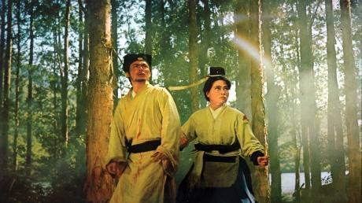Il giovane studioso e ritrattista Ku Sheng-chai vive solo con la madre, in un piccolo villaggio nel nord della Cina. Affascinato dalla misteriosa ragazza che si è recentemente trasferita nel forte militare abbandonato vicino a casa sua, Ku si innamora della nuova e bella vicina; viene a sapere che la sua vera identità è Yang Hui-chen e lei è la figlia fuggitiva di un distinto funzionario della dinastia Ming, giustiziato dai temutissimi eunuchi del Dongchang (Ufficio Investigativo Speciale d’Oriente). Con l’aiuto dei fedeli seguaci del padre, Yang Hui-chen è sfuggita alla morte e si è rifugiata presso l’abate Hui Yuan, in un monastero buddhista dove ha acquisito competenze elevatissime nelle arti marziali. Ora è tornata allo scoperto in questa remota cittadina, in attesa di un’occasione per vendicare la morte del padre, ma anche gli uomini del Dongchang, come Ouyang Nian, sono riusciti a rintracciarla e sono pronti ad arrestarla insieme ai suoi fedeli accoliti. Attingendo alle sue conoscenze delle strategie militari, Ku escogita un piano geniale e aiuta Yang a sfuggire all’assedio comandato dell’eunuco Men Ta del Dongchang.
Dopo la vittoria di Ku e Yang contro Men Ta e le sue truppe, arriva l’abate Hui-yuan per eseguire i rituali necessari a consolare gli spiriti delle vittime del combattimento. Lasciandosi alle spalle Ku e il mondo secolare, Yang torna al monastero, dove dà alla luce il figlio di Ku, che intanto attraversa disperato le montagne cercando di rintracciarla…
A Touch of Zen è tratto da La donna cavaliere (Xia Nü), uno dei cinquecento racconti del soprannaturale contenuti nel classico della letteratura cinese I racconti fantastici di Liao (Liaozhai Zhiyi) di Pu Songling (1640-1715), ed è considerato da molti come l’opera più significativa della carriera di King Hu. Il film uscì in origine in due parti a Taiwan, nel 1970 e nel 1971, ma non ebbe successo al botteghino, rimanendo inosservato fino a quando non ricevette il Grand Prix de la Commission Supérieur Technique al Festival di Cannes del 1975. Diventato immediatamente un successo internazionale, A Touch of Zen ha portato King Hu a un livello di fama mondiale mai raggiunto prima di allora da nessun regista cinese.
Il film fu girato prevalentemente a Taiwan e King Hu ha saputo sfruttare i luoghi più panoramici dell’isola, oltre a ricostruire minuziosamente un intero villaggio della Dinastia Ming negli studi di posa della Union Film Company a Danan. A Touch of Zen, che vanta una progettazione meticolosa, una splendida fotografia e un montaggio ben cadenzato, è un’epica di arti marziali innovativa, arricchita da splendide sequenze come la meravigliosa scena di combattimento nella foresta di bambù che ha ispirato i film di wuxia delle generazioni successive, come La Tigre e il Dragone (2000) di Ang Lee e La Foresta dei Pugnali Volanti di Zhang Yimou (2004).
-
Jury
19 Apr 20:00 KIM Dong-ho South Korea 23m 2013 Teatro Nuovo 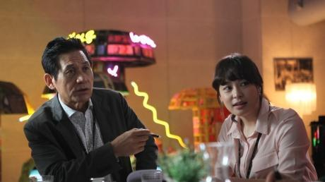Certo è raro per chiunque debuttare come regista quando si è sulla settantina, ma Kim Dong-ho non è affatto un regista qualunque. Kim è famoso presso tutta la comunità festivaliera internazionale per essere stato il direttore del Busan International Film Festival dal 1996, anno in cui il festival è stato fondato, fino alla quindicesima edizione, che si è tenuta nel 2010. Non c’è alcun dubbio che il suo contributo è stato fondamentale per permettere al BIFF di raggiungere il suo attuale status di un evento essenziale e tra i più importanti del calendario dei festival internazionali. Malgrado non occupi più il ruolo principale del BIFF, Kim rimane attivo e impegnato come preside della Graduate School of Cinematic Content della Dankook University, e ora ha anche colto questa opportunità per realizzare un sogno covato a lungo: dirigere il suo film.
Jury, che dura solo 24 minuti, parla dei cinque membri di una giuria festivaliera che deliberano in una stanza isolata per decidere una serie di premi. Il presidente della giuria, l’attore veterano Ahn Sung-ki (che interpreta se stesso, naturalmente) spera di deliberare velocemente in modo da poter andare a cena tutti insieme e rilassarsi un po’, ma le divergenze di opinioni tra la famosa attrice coreana Kang Su-yeon, il regista Jeong (interpretato dall’attore Jeong In-ki), e il critico e selezionatore inglese Tony Rayns sfociano ben presto in un conflitto aperto. Intanto la cineasta giapponese Katsue Tomiyama, che capisce pochissimo l’inglese e per nulla il coreano, osserva con tranquilla frustrazione.
Kim Dong-ho sa molte cose sulle giurie, avendo ospitato diverse celebrità e cineasti di tutto il mondo come membri delle varie giurie del BIFF e avendo fatto parte di diverse giurie egli stesso. In Jury ci offre un ritratto leggero e caloroso delle diverse opinioni e degli scontri di ego che spesso si verificano durante simili delibere. Inserendo ogni tanto sequenze del festival stesso, in cui i cineasti partecipano a goffe ma intense sessioni di Domanda e Risposta, Kim cattura con successo la cinefilia e la passione che rendono i festival cinematografici degli eventi così unici.
Per il suo primo sforzo registico, Kim ha attinto al talento di una bella sfilza di collaboratori famosi ed esperti. La sceneggiatura è stata scritta dal regista Zhang Lu (Dooman River), con l’aiuto del noto regista indipendente Yoon Sung-ho (Milky Way Liberation Front). Il regista Kim Tae-yong (Late Autumn) ha fatto da aiuto regista, mentre dietro la macchina da presa c’era l’acclamato direttore della fotografia Kim Hyung-koo (Memories of Murder); infine, il montaggio è stato realizzato dal leggendario regista e produttore Kang Woo-suk (Public Enemy). Ad ogni buon conto, Kim Dong-ho stesso era strettamente coinvolto in ogni aspetto della produzione e, dalle interviste con quelli che hanno fatto parte del progetto, appare chiaro che è stata la sua passione a fare da traino per la realizzazione.
Jury è stato presentato per la prima volta nel 2012 alla decima edizione dell’Asiana International Short Film Festival, e da allora sta girando nel circuito festivaliero con una partecipazione anche al Festival di Berlino nella sezione Panorama. Il film ha anche avuto una limitata distribuzione commerciale in Corea nel marzo di quest’anno. Kim intanto ha dichiarato che sta lavorando a un altro cortometraggio e ha in progetto di girare una storia sui volontari che lavorano ai festival che dovrà essere presentata alla diciottesima edizione del BIFF.
Quest’anno, il Far East Film Festival è molto orgoglioso di dare il suo Gelso d’Oro alla Carriera a Kim Dong-ho per il contributo che ha dato al cinema asiatico nel corso della sua lunga e illustre carriera ed è un enorme piacere presentare a Udine Jury come omaggio alla dedizione e alla passione di Kim per l’arte cinematografica.
-
The Berlin File
19 Apr 20:30 RYOO Seung-wan South Korea 2h 2013 Teatro Nuovo 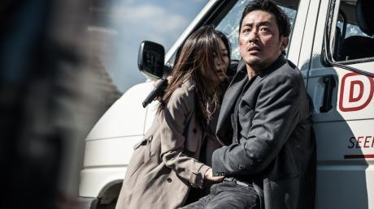Dal momento in cui è stato annunciato, il thriller di spionaggio The Berlin File di Ryoo Seung-wan ha generato nel pubblico aspettative sempre crescenti e una crescente pressione sugli autori per la riuscita del film. Il budget di 9,5 milioni di dollari per questo blockbuster era di gran lunga il più consistente mai gestito dal regista. L’annuncio di un cast stellare che comprendeva Ha Jung-woo (The Chaser), Gianna Jun (My Sassy Girl), Han Seok-gyu (Shiri) e Ryoo Seung-beom (The Unjust), talentuoso fratello dello stesso regista, non ha fatto che accrescere l’interesse del pubblico. Ambientato a Berlino, il film ha richiesto un lungo periodo di riprese in Europa, con alcune scene d’azione particolarmente elaborate. Non solo, ma nei due anni che hanno preceduto la sua uscita, una sfilza di costosi film coreani di genere come My Way, Soar into the Sun, e Sector 7 avevano fallito miseramente al botteghino. Di conseguenza, il regista Ryoo sentiva su di sé non solo la responsabilità di recuperare il denaro degli investitori ma anche quella di rinverdire la reputazione offuscata del blockbuster coreano.
In questo caso, gli autori se la sono cavata con una pellicola di grandi proporzioni e realizzata in modo imponente, che ha venduto 7 milioni di biglietti, superando Shiri e diventando il film d’azione campione d’incasso di tutta la storia del cinema coreano. Anche se qualcuno ha trovato frustrante la complessità della trama, tutti si sono trovati d’accordo sul fatto che le sequenze d’azione siano creative ed eccitanti. The Berlin File è attualmente il primo per incassi tra i film di Ryoo.
La storia di spionaggio e gli esterni girati a Berlino potrebbero far ricordare a qualcuno le storie classiche della guerra fredda, ma il film ha un’ambientazione contemporanea. Un agente speciale nordcoreano di nome Pyo Jung-song (Ha Jung-woo) sta negoziando l’acquisto di armi con un’organizzazione terrorista araba quando gli agenti del Mossad israeliano fanno irruzione e catturano il terrorista. Per di più, un agente sudcoreano (Han Seok-gyu) cerca di bloccare Pyo mentre lui tenta la fuga. Ben presto, intorno all’ambasciata nordcoreana inizia a girare la voce che qualcuno stia passando informazioni al nemico. Quando un ambiguo intermediario di Pyongyang (Ryoo Seung-beom) arriva a Berlino, Pyo istintivamente teme il peggio – e come previsto, l’uomo accusa la moglie di Pyo (Gianna Jun), che lavora per l’ambasciata come traduttrice.
Intrecciando tutta una serie di personaggi e nazionalità, nella prima metà del film Ryoo imbastisce una complessa storia di intrighi che coinvolge le lotte di potere che hanno luogo attualmente in Corea del Nord. Il pubblico segue la storia sia dal punto di vista di Pyo che da quello dell’agente sudcoreano, il quale mette alla prova la pazienza dei suoi superiori con azioni da loro considerate avventate e puro frutto dell’istinto. Man mano che arrivano i colpi di scena il film prende slancio dando al regista l’opportunità di inserire le scene d’azione per le quali è tanto famoso.
Negli ultimi quindici anni, Ryoo e qualche altro regista hanno fatto molta strada nella definizione di un’identità tutta particolare per l’azione coreana, distinguendola dallo stile di lotta tipico di Hong Kong o del cinema cinese. L’azione ha un ritmo veloce e dinamico ma anche altamente realistico, tanto che lo spettatore sente su di sé il dolore di ogni osso fracassato. Nel caso di The Berlin File, l’azione è stata dilatata nei tempi e un po’ alleggerita nell’intensità, ed è quindi meno dura che in The City of Violence, ma altrettanto sensazionale.
The Berlin File segna una nuova, interessante tappa nella carriera di Ryoo: uno spostamento verso film di genere su più larga scala e con un orientamento più internazionale. Per certi versi questo riflette tendenze più generali del cinema coreano, che vedono distributori come CJ E&M mirare a un pubblico internazionale e alcuni tra i migliori registi coreani girare film a Hollywood con cast internazionali. Rimane ancora da vedere se Ryoo continuerà o meno in questa direzione, ma è rilevante il fatto che questo suo sforzo particolarmente ambizioso sia stato considerato un successo.
-
It's Me, It's me
19 Apr 22:30 MIKI Satoshi Japan 1h 59m 2013 Teatro Nuovo Hitoshi (Kamenashi Kazuya), l’impiegato di un negozio di elettronica protagonista del film di Miki Satoshi It’s Me, It’s Me (Ore Ore) ottiene molto più di quello che sta cercando quando gli riesce la truffa del titolo. Usando il cellulare che un distratto cliente dimentica in un fast food, Hitoshi chiama la madre del cliente, fa finta di essere suo figlio Daiki intrappolato nel traffico – e la convince a trasferire 900.000 yen sul suo conto corrente vuoto.
Da questo momento in poi, It’s Me, It’s Me avrebbe potuto facilmente percorrere la strada della commedia anticonvenzionale, una strada che Miki – specializzatosi in commedie durante la sua lunga carriera in televisione e nel cinema – ha spesso percorso, con risultati che spaziavano dalla dispersione al divertimento esagerato che ti fa rovesciare tutti i popcorn.
Invece non solo Hitoshi ha uno strano incontro con la sua vittima, che lo chiama “Daiki” e lo tratta come se fosse il suo vero figlio in carne e ossa, ma si imbatte anche in un suo sosia dal volto austero che sostiene di essere Hitoshi e lo tratta da impostore. Ben presto, con suo grande sconcerto e orrore, salta fuori un altro sosia, stavolta più selvatico e folle del precedente. I tre “Hitoshi” alla fine si incontrano e formano un club che, per quanto anomalo, ha una sua ragione di essere, dal momento che i tre hanno molto in comune.
L’Hitoshi originale (ammesso che sia lui l’“originale”) si adatta giocosamente alla nuova situazione e addirittura trae vantaggio dal fatto di essere uno e trino, ma le stranezze si incrementano con l’arrivo di copie “difettose” di Hitoshi e con il deteriorarsi della realtà quotidiana (o, piuttosto, della versione “hitoshiana” della realtà quotidiana) in un incubo surreale.
Poi le copie iniziano a svanire e le persone che circondano l’“originale” – compresa una cliente sexy e misteriosa di nome Sayaka (Uchida Yuki) e il prepotente e fin troppo invadente capo di Hitoshi, Tajima (Kase Ryo) – vengono risucchiati nel vortice impazzito che è diventato il suo mondo.
Tratto da un romanzo di Hoshino Tomoyuki, vincitore di diversi premi, It’s Me, It’s Me ricorda Essere John Malkovich, la pellicola di Spike Jonze del 1999 su un burattinaio disoccupato che scopre un passaggio che gli consente di entrare nella mente dell’attore John Malkovich. Quando, nel corso del film, lo stesso Malkovich entra nel passaggio, ne scaturisce un mondo popolato da altri Malkovich, che possono solo pronunciare la parola “Malkovich.” In altre parole, un vero e proprio inferno narcisistico.
Ma quello che è un tema minore nel film di Jonze diventa un tema primario nel film di Miki. Girato con divertente sprezzo della logica per cui “due più due fa quattro”, la storia potrebbe far fuggire gli spettatori più emotivamente fragili o rigidamente razionali verso l’uscita del cinema. C’è molto da mandar giù; è un po’ come guardare in un infinito gioco di specchi al lunapark locale.
Ma Miki, che ha anche scritto la sceneggiatura del film, mantiene sul suo materiale fuori di testa lo stesso perfetto controllo che ha mostrato nel suo capolavoro del 2007 Adrift in Tokyo (visto al Far East Film). Come in quel suo film, introduce temi più profondi insieme a una ricca serie di gag dalla comicità asciutta nella sua esile storia, ma con maggiore abbandono e ambizione, come se stesse cercando non solo diventare più Jonze di Jonze, ma anche di diventare più Kafka di Kafka – che avrà anche trasformato il suo rappresentante di commercio Gregor Samsa in un enorme scarafaggio ne La metamorfosi, ma almeno non ha clonato il povero bastardo all’infinito.
-
-
Saturday 20 April 2013
-
Angel Home
20 Apr 09:15 TSUTSUMI Yukihiko Japan 2h 2m 2013 Teatro Nuovo 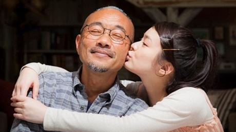L’industria cinematografica giapponese adora i melodrammi di argomento medico, ma non ama molto quelli su personaggi affetti da ritardo mentale. La serie di Tora-san, successo sempreverde del regista e sceneggiatore Yamada Yoji, mostrava un personaggio del genere nel settimo episodio, Tora-san, the Good Samaritan (Otoko wa Tsurai yo: Funtohen, 1971): l’operaia di una filatura (Sakakibara Rumi) che non sopporta il suo lavoro e che si innamora dell’inconcludente protagonista. Yamada più tardi inserì il personaggio di uno studente ritardato anche nella classe in cui insegnava il professore delle scuole serali protagonista del film drammatico A Class to Remember 2 (Gakko II, 1996), di cui era sceneggiatore oltre che regista.
Tratto dall’opera teatrale di successo di Takuma Takayuki scritta per la compagnia Tokyo Seleccion Deluxe e a sua volta ispirata a una storia vera, il film drammatico Angel Home (Kuchizuke) di Tsutsumi Yukihiko è incentrato sugli ospiti ritardati della casa di accoglienza Himawariso (“Casa Girasole”), sui loro assistenti e sulle loro famiglie.
Tsutsumi è meglio conosciuto come regista di successi commerciali, avendo diretto, tra molti altri film, anche la redditizia trilogia 20th Century Boys (20-Seiki Shonen); però è anche un esperto regista teatrale (sebbene non sia stato lui a dirigere la versione per il palcoscenico di Angel Home) e il suo adattamento cinematografico è apertamente teatrale, visto che si svolge quasi completamente entro i confini della casa di accoglienza (che, per essere un edificio giapponese, è piuttosto spaziosa), e gli attori alzano la voce come se dovessero farsi sentire fino al loggione.
Come lo spettacolo teatrale era riuscito a fare con grande successo presso il pubblico di tutto il Giappone, il film si concentra sulle turbolente emozioni e, a tratti, il tragico destino di singoli individui, piuttosto che documentare i problemi delle persone affette da ritardo mentale all’interno di una comunità più ampia. Veniamo a sapere che gli ospiti lasciano la comunità per andare a lavorare, ma non li vediamo mai sul luogo di lavoro.
La storia si concentra piuttosto sull’amicizia, nonché sulla scomoda storia d’amore, che si sviluppa tra due ospiti della comunità: la dolce e riservata Mako (Kanjiya Shihori) e il rumoroso e instabile Uyan (Takuma Takayuki). Dato che Takuma non è solo l’autore dello spettacolo teatrale ma è stato anche Uyan sul palcoscenico, non sorprende che il suo personaggio sia fondamentale non solo per la storia ma anche per l’immagine delle persone ritardate che il film ci consegna.
E non è un’immagine che tutti accetteranno facilmente, visto che Uyan è difficilmente inquadrabile nello schema dei personaggi disabili “innocenti” e “puri” che solitamente troviamo nelle pellicole hollywoodiane e non solo. Lui, invece ha una strana gestualità e si comporta in modo sgarbato e, a tratti, persino violento. Invece dell’innocuo eccentrico con la mente di un bambino, ci troviamo di fronte a un uomo arrabbiato che comprende la propria situazione – ed è insofferente quando si rende conto che i suoi benintenzionati assistenti, e con loro tutta la società, non gli consentiranno mai di vivere pienamente come un adulto, ivi compresa l’esperienza adulta dell’amore.
Quindi, quando la sua storia con Mako si trasforma in amore e lui le chiede di sposarlo, sorge il dilemma fra quelli che lo circondano, soprattutto per il padre di Mako (Takenaka Naoto), un ex disegnatore di manga che ha mantenuto lo pseudonimo Aijo Ippon (che più o meno significa “tutto per amore”). Dopo la prematura morte della madre di Mako, l’uomo ha generosamente abbandonato la sua carriera per occuparsi della figlia, e non riesce a sopportare di vederla soffrire. E teme anche per il futuro di Mako quando lui non ci sarà più.
Il film, che inizia come un ritratto di gruppo della vita a Himawariso, alleggerito da note di umorismo grossolano e taglienti richiami ai pregiudizi del mondo esterno, si restringe quindi sul triangolo formato da Uyan, Mako e Ippon. Qualcuno potrebbe trovare la soluzione proposta dal film ai loro dilemmi difficile da digerire, essendo il riflesso di atteggiamenti che sembrano appartenere a un’altra epoca.
Ma lo spettacolo teatrale, che nel 2010 ha fatto il tutto esaurito nei teatri delle quattro città giapponesi in cui è stato presentato, ha iniziato in Giappone un dialogo necessario e troppo a lungo rimandato sulle persone affette da ritardo mentale, e si spera che il film, la cui distribuzione da parte della Toei è prevista per il prossimo maggio, riuscirà a mantenere vivo e possibilmente allargare tale dialogo.
-
Cold War
20 Apr 11:25 LEUNG - LUK Hong Kong 1h 42m 2012 Teatro Nuovo I registi esordienti Longman Leung e Sunny Luk hanno suscitato scalpore alla fine dello scorso anno quando il loro ambizioso thriller Cold War è approdato nelle sale di Hong Kong. Al contrario di altri registi locali più inclini a girare thriller all’estero o a utilizzare ambientazioni d’epoca, questa coppia di registi ha deciso di esordire alla grande con una storia contemporanea di scandali nelle alte sfere della polizia di Hong Kong. Gli eccellenti standard di produzione, le tematiche indovinate e gli interpreti di primo piano hanno contribuito a conquistare le folle e il pubblico ha ricambiato lanciando Cold War in vetta al box office di Hong Kong del 2012.
Cold War si consuma nel breve lasso di tempo in cui un commissario di polizia prossimo alla pensione si assenta per un viaggio all’estero, ed ha un inizio esplosivo. Prima scoppia una bomba in un cinema, poi un guidatore ubriaco fracassa la macchina e insulta gli agenti accorsi sul posto. È soltanto un preludio: poco dopo scompare un cellulare dell’Unità di Emergenza con cinque poliziotti dentro e i capi della polizia si riuniscono per gestire la crisi. Il vicecomissario della Sezione operativa, M.B. Lee (Tony Leung Ka-fai), dichiara lo stato di crisi, coinvolgendo due terzi del corpo di polizia, e battezza l’operazione “Cold War” – decisione questa che infastidisce il vicecommissario della Sezione direttiva, Sean Lau (Aaron Kwok).
Lau sospetta che Lee abbia perso la testa a causa del suo coinvolgimento emotivo, essendo suo figlio (Eddie Peng) uno dei cinque agenti scomparsi. Durante l’operazione Lau e i suoi colleghi si impadroniscono del potere, lasciano perdere lo stato di crisi, sollevano alcuni uomini dal caso e mantengono segreta la portata iniziale dello spiegamento di forze. La scomparsa del cellulare della polizia nel frattempo si tramuta in una crisi di ostaggi con richiesta di un ingente e la Commissione indipendente anticorruzione (ICAC) inizia a indagare in seguito a una soffiata relativa alle operazioni contro i giochi di potere della Direzione; c’è anche il sospetto che il rapimento possa essere avvenuto grazie all’aiuto di una talpa.
Leung e Luk hanno girato Cold War per elettrizzare il pubblico, comprimendo i colpi di scena in un concentrato convulso e ben confezionato. Il dialogo raggiunge livelli assordanti, la colonna sonora è roboante quanto basta, gli artifici hi-tech hanno un ritmo soddisfacente e a intervalli regolari esplode l’azione. All’esplosione iniziale della bomba segue il raid notturno di una Unità operativa speciale, una sparatoria in autostrada e altre trovate pirotecniche, il tutto orchestrato con la supervisione dei richiestissimi coreografi d’azione Chin Kar-lok e Wong Wai-fai. L’immagine sfarzosa del film è corroborata da un uso sapiente della macchina da presa, compreso un mucchio di riprese dall’elicottero, e la scenografia correda il film di interni appariscenti e un arsenale di abiti eleganti.
I protagonisti Tony Leung e Aaron Kwok offrono una performance intensa ogni qualvolta la storia lo richiede (ovvero spesso) e Leung in particolare conferisce austerità all’azione. La superstar Andy Lau fa capolino in veste di segretario alla sicurezza e il cast secondario, Gordon Lam, Chin Kar-lok e Tony Ho, dà una buona prova di sé.
Quanto ai talenti cinematografici di Cold War, occorre prestare molta attenzione anche ai due registi. Leung e Luk concorrono al progetto non soltanto in qualità di registi al loro debutto ma anche di sceneggiatori. La sceneggiatura si fonda su un’idea generale assai ambiziosa, che parla della ricerca del potere a spese dei più nonché di questioni spinose quali le indagini di alto livello dell’ICAC e la tutela del principio della legalità cittadina; è evidente lo sforzo di portare sullo schermo l’operato della polizia con dovizia di dettagli. A volte però l’azione sfreccia via troppo in fretta e lo spettatore si aspetterebbe maggiore chiarezza su certi ruoli e avvenimenti. Se i due registi riusciranno a equilibrare il loro talento cinematografico con del materiale più solido al momento di preparare il sequel, al quale Cold War spalanca la porta, gli spettatori potranno aspettarsi sensazioni ancora più potenti.
-
Raining in the Mountain
20 Apr 14:00 KingHU Taiwan, Hong Kong 1h 32m 1979 Teatro Nuovo 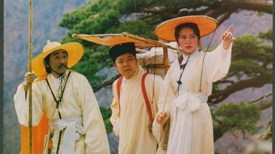L’anziano abate del Monastero dei Tre Tesori (Sanbao) deve nominare un successore. Convoca tre laici estranei al monastero per farsi consigliare su questa scelta fondamentale: il Cavaliere Wen, un ricco mecenate del monastero, il generale Wang, comandante in capo delle forze armate locali, e Wu Wai, un venerabile Maestro di Buddhismo. All'interno del monastero diversi monaci, che aspirano alla nomina, cominciano a complottare separatamente con il Cavaliere Wen e il generale Wang. Questi due consiglieri però sono venuti con intenti sediziosi e tramano per ottenere il prezioso rotolo di pergamena conservato nel monastero: il testo scritto del Mah?y?na ?raddhotpada ??stra, che fu ricopiato a mano da Tripitaka ai tempi della dinastia Tang. Nel frattempo arriva al monastero il criminale prigioniero Chiu Ming, per espiare i suoi delitti come monaco invece che come carcerato. Viene incaricato di proteggere il rotolo nella biblioteca; qui si imbatte in due ladri rivali, Volpe Bianca, che si finge la concubina del Cavaliere Wen, aiutata dal suo complice Ricciolo Dorato, e il temibile luogotenente del generale Wang, Chang, l’uomo che aveva incastrato Chiu Ming per un reato non commesso.
King Hu spese più di un intero anno per elaborare Raining in the Mountain e Legend of the Mountain (Shanzhong Chuanqi, 1979), due film girati uno dietro l’altro on location nella in Corea del Sud. Raining in the Mountain è qualcosa di più di un semplice film di furti e rapine dalla bella fotografia, e ambientato nella molto improbabile cornice di un sereno monastero buddhista; si distingue dal tipico genere wuxia denso di azione per la maggiore enfasi che pone sugli affascinanti scontri di ingegni e di intelletti. Nel film, volutamente trattenuto per quanto riguarda la violenza, le poche scene di combattimento sono coreografate in modo magistrale e ispirate ai movimenti stilizzati dell’Opera di Pechino tradizionale. In Raining in the Mountain King Hu offre un viaggio spirituale coinvolgente e riflette profondamente sulla filosofia buddhista in tema di morale, di rinuncia, di retribuzione karmica e di illuminazione.
-
Lost in Thailand
20 Apr 15:45 XU Zheng China 1h 45m 2012 Teatro Nuovo 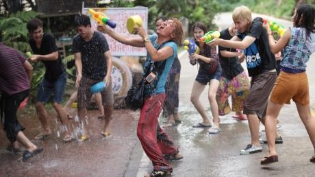Lost in Thailand è il film che ha marcato l’anno cinematografico cinese. È un film insignificante. È il film di cui in Cina tutti parlano dal giorno che è uscito nelle sale. È un film del quale mai ci si sarebbe aspettati di dover parlare. È il film che ha incassato più di qualunque altro film nella storia del cinema cinese. È un piccolo film. È un grande film. Insomma, di questo film si è detto e si può dire tutto e il contrario di tutto. Ma una cosa è certa: questo film è diventato un caso fenomenale.
Di cosa tratta? Di niente di nuovo o di particolare. Il film è un tipico road movie punteggiato da molti cliché e con un finale assolutamente scontato. Seguito ideale del film Lost on Journey uscito nel 2010, sostituisce le peripezie che i lavoratori migranti devono fare per poter raggiungere le loro famiglie durante le annuali vacanze del Capodanno Lunare – e che erano il filo conduttore del primo film – con le avventure dei cinesi che per lavoro o per turismo ormai possono permettersi di viaggiare all’estero.
I protagonisti sono tre, interpretati da tre degli attori comici più famosi della Cina: uno scienziato/businessman ossessionato da un progetto di ricerca che lo assorbe a tal punto da aver messo a repentaglio il suo matrimonio (Xu Zheng), un suo collega (Huang Bo), che da amico si è trasformato in rivale perché vuole essere il primo a vendere il prodotto sviluppato dall’altro, e un giovane fornaio un po’ matto (Wang Baoqiang) che va in giro in compagnia di un piccolo cactus ed è perdutamente innamorato di una famosa star cinematografica.
I loro destini si incrociano in Thailandia, dove il primo è alla ricerca del presidente della società per la quale lavora – il quale è andato a meditare in un tempio – perché deve farsi firmare una delega alla vendita del prodotto da lui sviluppato; il secondo è alle calcagna del primo per cercare di raggiungere prima di lui il capo; e il terzo è al primo viaggio della sua vita e vuole sperimentare tutto quello che di esotico l’immaginario collettivo cinese associa alla Thailandia.
Sono tutti e tre veramente un po’ “persi” – come dal titolo del film – non solo perché non sanno dove si trovi il tempio nel quale si è rifugiato il presidente e faticano a trovarlo, ma perché sono confusi, non capiscono bene cosa stanno facendo e quello che vogliono veramente nella vita. Ovviamente lo scopriranno attraverso una serie di disavventure che li porteranno a capirsi tra loro e a capire meglio se stessi.
Quindi sul piano della narrativa il film non offre nulla di particolare; e per quanto riguarda lo stile, Lost in Thailand è un film ben confezionato ma senza particolari ambizioni.
La chiave del successo straordinario e completamente inaspettato del film – visto in Cina da ben 38 milioni di persone – sono stati i volti e le espressioni dei tre protagonisti, la loro intesa evidente e simpatia irresistibile, le battute spiritose, e soprattutto il fatto che il film non si prende sul serio. Xu Zheng, che non solo è uno degli attori protagonisti ma ha anche debuttato con questo film come regista, sceneggiatore e produttore, è riuscito – forse inconsapevolmente – a mettersi in sintonia con il pubblico delle grandi metropoli, sempre più stressato dalla vita frenetica e competitiva della Cina contemporanea e che ha voglia di ridere, di non pensare, e di vedersi rappresentato con empatia.
Uscito nelle sale durante un inverno particolarmente freddo e pochi giorni prima della presunta fine del mondo, il calore generato dalle immagini dei tropici e dalla simpatia dei protagonisti è riuscito a penetrare il cuore del pubblico ed a scaldarlo (riempiendo di soldi nel frattempo le tasche dei produttori del film!)
-
The Winter of the year was warm
20 Apr 17:40 David CHO South Korea 1h 40m 2012 Teatro Nuovo The Winter of the Year Was Warm è un film straordinario, modellato su una premessa straordinariamente banale. In-sung è un regista e produttore che sta a Seoul e che ogni fine settimana ama evadere dallo stress della città andando in macchina fino alla località balneare di Gangneung, di cui adora l’atmosfera rilassata e soprattutto il cibo. Un giorno dice a un amico, che gestisce un piccolo caffè, che sta pensando di comprarsi una seconda casa a Gangneung, invece di continuare a pagare un hotel ogni fine settimana.
Il proprietario del bar ha un’altra amica, di nome Yu-jeong che spesso si ferma da lui a prendere un caffè e che fa l’infermiera nell’ospedale di Gangneung. Malgrado sia molto impegnata con il suo lavoro, Yu-jeong spesso va in auto a Seoul per godersi un po’ di vita culturale. Solitamente sta da un’amica e va a vedersi qualche film d’essai oppure qualche rappresentazione teatrale. Un giorno però, l’amica la informa che ha un nuovo fidanzato e che Yu-jeong non è più la benvenuta come ospite in casa sua. Controvoglia, Yu-jeong prenota un motel economico.
Un giorno capita che i tre si ritrovino per caso nel caffè e il proprietario del bar si accorge che la vita di In-sung e quella di Yu-jeong sono speculari. “Voi due dovreste stare l’uno nell’appartamento dell’altro durante i fine settimana, invece di andare nei motel”, dichiara. In-sung ci pensa su un attimo e l’idea gli piace, ma Yu-jeong non riesce davvero a concepire l’idea di aprire la propria casa a un estraneo.
Le commedie romantiche e le storie d’amore di solito ruotano attorno a una relazione sentimentale che prende forma nel corso del film e che in seguito viene sottoposta a qualche tipo di prova. Strutturalmente, The Winter of the Year Was Warm si sviluppa in modi analoghi, ma con una differenza essenziale: il rapporto al centro della storia non è un rapporto sentimentale, bensì un accordo pratico tra due personaggi che condividono i propri appartamenti. Di primo acchito potrebbe sembrare un soggetto davvero piatto, ma durante i 100 minuti del film il regista David Cho lo usa come strumento per sviluppare due personaggi sfaccettati, convincenti e davvero piacevoli.
Dopotutto, c’è qualcosa di decisamente intimo nel permettere che qualcuno stia in casa tua. Tracce dell’ospite restano sugli scaffali dei libri, nel tuo frigo e nelle cose appese al muro. Alcune delle migliori scene del film The Winter of the Year Was Warm sono i momenti in cui In-sung e Yu-jeong si avvicinano uno all’altro senza essere fisicamente insieme, ma trascorrendo del tempo da soli nella casa dell’altro.
I protagonisti Kim Tae-woo e Yeh Ji-won compiono un lavoro eccezionale nel dar vita a questi personaggi. Gran parte del calore del film è generato dall’intensità tranquilla e concentrata della loro recitazione. Nel ruolo del regista In-sung, Kim Tae-woo consegna un’interpretazione talmente rilassata e naturale che a volte sembra persino ignaro di essere il protagonista del film. Ma in definitiva questo non fa che rendere il personaggio ancor più affascinante. Per quanto riguarda Yeh Ji-won, che è forse più nota per le sue interpretazioni decisamente espressive in Turning Gate e Old Miss Diary, stavolta proietta nel film un’immagine del tutto nuova, interiorizzando le proprie emozioni. Il suo carisma molto controllato si rivela il perfetto complemento al fascino amichevole di Kim Tae-woo.
La mia personale esperienza nella visione di questo film è che, mentre la storia avanzava, non c’era mai una scena né un momento che saltasse agli occhi e mi colpisse con il suo dinamismo o la sua creatività. Il film si sviluppa in un ambiente molto ordinario e mi sono semplicemente immerso nella storia senza stare troppo a ragionare su a quello che stavo guardando; è stato solo alla fine del film che mi sono accorto di quanto in realtà mi fosse piaciuto. Per un film che dimostra una tale indifferenza nei confronti delle regole basilari della sceneggiatura, The Winter of the Year Was Warm si rivela inaspettatamente molto efficace nel raccontare la sua storia.
-
Finding Mr. Right
20 Apr 20:00 XUE Xiaolu China 2h 1m 2013 Teatro Nuovo Incontriamo Jia Jia all’aeroporto di Seattle negli Stati Uniti mentre sta per passare il controllo passaporto; con il suo inglese incerto vince le titubanze del poliziotto al controllo sfoderando tanti sorrisi e il titolo di un film, Sleepless in Seattle (Insonnia d’amore). Lei è tra le tante che visita illegalmente gli Stati Uniti il tempo necessario per partorire, dando al figlio una nazionalità e un futuro che in Cina non gli sarebbe consentito. Nel caso di Jia Jia, Lao Zhong, il padre del bimbo, ricco e sposato, non sembra intenzionato a lasciare la moglie.
Arrivata a Seattle, Jia Jia, insolente e capricciosa, deve adattarsi. La clinica privata dove avrebbe dovuto alloggiare è controllata dalla polizia. Frank, l’autista, l’aiuta a trovare un’altra sistemazione presso una signora taiwanese che da anni si prenda cura di donne in stato di gravidanza dando loro ospitalità. Jia Jia si trova a condividere l’appartamento con altre due donne incinte, Zhou/Joe e Moon. Lao Zhong non è sempre raggiungibile al telefono. Sola e lontana da casa Jia Jia si trova in compagnia solo della sua carta di credito illimitata e dell’autista Frank, che la scorrazza in giro per i suoi shopping favolosi e per le sue serate depresse. A Natale Lao Zhong manca la promessa di trascorrere le feste con lei per stare in famiglia e Jia Jia coglie l’occasione per trascorrere del tempo con Frank scoprendo così che è un autista per caso. Medico di talento, Frank ha lasciato la professione dopo essersi trasferito negli Stati Uniti per dare un futuro alla figlia Julie che altrimenti non avrebbe potuto frequentare le migliori scuole in Cina per via della sua cartella clinica, con una moglie che ha fatto carriera tornando in Cina a capo di una multinazionale farmaceutica e che ha lasciato la figlia alle sue cure.
A un certo punto, Lao Zhong non è più raggiungibile e la magnifica carta di credito non funziona più. Jia Jia è più sola che mai, ma Frank continua a starle vicino nei momenti peggiori. Jia Jia si accorge sempre di più di quell’uomo paziente, tranquillo, schivo, dedito alla figlia, e pieno di attenzioni e quando Frank si sente di dover partecipare al matrimonio della ex moglie, per Jia Jia è tempo di ricambiare quella cura che gli ha dedicato per così tante settimane, acquista un vestito nuovo per l’occasione e si presenta a sorpresa alla cerimonia per fargli coraggio. Ma durante il ballo al cocktail, Jia Jia sviene. Portata d’urgenza in ospedale, Frank salva la vita a lei e al piccolo che nasce quel giorno stesso.
Quando Lao Zhong, appena divorziato, le manda un’auto con tanto di chauffeur, è tempo per Jia Jia di tornare in Cina.
Adesso Jia Jia è la signora che ha sempre voluto essere, con uno stile di vita che le permette di spendere e spandere, ma è lei a non essere più la stessa. Decide così di lasciare tutto, di andare a vivere con il figlio lontano dal lusso e dal vuoto che quella vita le ha creato attorno, di crearsi un’altra occasione, di lanciarsi nel mondo del lavoro con un business online incoraggiata dalle sue nuove amiche Joe e Moon. Il giorno che Frank porta la figlia a visitare l’Empire State Building, la figlia si ricorda di Jia Jia e propone al padre di inviarle una foto di entrambi. Jia Jia è più vicina di quanto loro possono immaginare.
Finding Mr. Right è una commedia romantica atipica per essere completamente o quasi ambientata a Seattle (“Quando Pechino incontra Seattle” è il titolo originale cinese). Una storia made in China esportata in un ambiente estraneo alle dinamiche della nuova Cina. Di per sé non aggiunge nulla di nuovo al genere commedia o al genere romantico, anche se la durata del film può lasciare intendere una trama più articolata del solito. Interessante notare però che la storia gioca con le caratteristiche culturali dei personaggi: ripropone, sì, una storia che a Seattle o a Pechino poteva svolgersi esattamente nello stesso modo, ma il meccanismo che permette ai personaggi di cambiare la propria percezione della realtà è il prendere le distanze dal proprio paese, dall’ambiente la cui vita frenetica orientata al successo, all’arricchimento materiale e al consumismo più sfrenato non permette alla nuova generazione di fare i conti con la vita quella vera, quella che vale la pena di vivere e di soffrire. Rinunciare allo status, alla ricchezza, alla sicurezza nella Cina di oggi è un atto di pura follia perché nelle dinamiche della vita della moderna Cina le costanti sono l’incertezza e il senso di vuoto. In Finding Mr. Right, i personaggi riproducono una piccola Chinatown a Seattle, dove il cibo che mangiano, la lingua che parlano, le relazioni che intrattengono sanno di familiare, ma è “tornando indietro” in Cina che l’incertezza e il senso di vuoto acquistano una consistenza diversa.
Finding Mr. Right vede il ritorno su grande schermo e in grande stile di Tang Wei, l’attrice resa famosa dalla sua interpretazione in Lussuria – Seduzione e tradimento (Se, Jie, 2007) di Ang Lee. Dopo le sue apparizioni in film come Crossing Hennessy (Yue Man Xuan Ni Shi, 2010) di Ivy Ho, Late Autumn (2010) di Kim Tae-Yong girata a Seattle, Wu Xia di Peter Chan e Speed Angels (Ji Su Tianshi, 2011) di Ma Chucheng (Jingle Ma), la ritroviamo in una veste del tutto nuova, in tono nella parte della fidanzatina viziata così come della madre che prende coscienza.
-
The Gangster
20 Apr 22:10 Kongkiat KHOMSIRI Thailand 1h 55m 2012 Teatro Nuovo Il terzo lungometraggio di Kongkiat Khomsiri, The Gangster, lo consacra come il re del sangue e della violenza estetizzante, come in Slice (2009). Questo remake dell’opera prima di Nonzee Nimibutr Dang Bireley’s and the Young Gangsters (1997) è un nuovo capolavoro cinematografico di Kongkiat, che si diletta con diverse modalità di narrazione, di montaggio, di fotografia e di mise-en-scène, e allo stesso tempo ricorda, dal punto di vista artistico, la cultura giovanile e quella malavitosa della Thailandia degli anni Cinquanta, la solidarietà maschile e i modi della cavalleria thailandese.
Diversamente dalla versione di questa storia vera realizzata da Nonzee nel 1997, The Gangster si concentra sulla vita di Jod, che era famoso tra i membri più giovani della banda come “il vero duro”, ma che gerarchicamente veniva subito dopo Dang. Il suo personaggio era appena accennato nella versione di Nonzee, per evitare qualsiasi riferimento diretto che potesse dare adito ad azioni legali da parte del vero Jod, che all’epoca era ancora vivo. In The Gangster invece Jod è in prima linea, mentre l’eroe del passato, Dang, è presente nel film solo fino al momento della sua morte, che avviene a circa quaranta minuti dall’inizio. Figlio di un militare, Jod è rappresentato come un gentiluomo che si ritrova in un mondo sbagliato – figlio e fratello premuroso, amico calmo e sincero, uomo di innata galanteria che non aggredisce mai una donna.
Potrà sembrare un ritratto idealistico, ma è conforme alla tradizione dei gentiluomini che siamo abituati a vedere in molti film storici, nei western americani o nei film hongkonghesi sulle arti marziali, da Re Artù a Jean Pierre-Melville o a John Woo. The Gangster però illustra i modi e i principi thailandesi di un cavaliere thailandese e, diversamente dagli altri cavalieri esistenzialisti, Jod – come molti altri gangster della vita reale – ha una famiglia e un sacco di amici. I suoi valori sono la gratitudine, l’amicizia e la lealtà; si prende cura della madre e della sorella e vuole bene agli amici. Forse è per questo motivo che decide di servire Dang senza mai metterlo in ombra. C’è un solo motivo che può indurlo a sfidare il capo: non può obbedirgli se gli chiede di uccidere i suoi amici, che sono come la sua famiglia. È un uomo orgoglioso, che protegge le donne. Il ricordo di una sua vittima accidentale, rimasta uccisa durante una sparatoria, diventa il suo incubo ricorrente. Jod e The Gangster mostrano al mondo i diversi valori che animano i banditi thailandesi.
L’esperienza di sceneggiatore ha insegnato a Kongkiat anche come rendere con efficacia lo stile di vita degli anni Cinquanta. Non si vede soltanto la transizione della cultura della violenza dai coltelli alle pistole, e dalla mafia dei gangster alla polizia; anche la cultura giovanile, dall’influenza di Elvis Presley a James Dean, permea l’intera pellicola – e persino il proiezionista.
The Gangster è una storia distaccata, esaltata dalla sperimentazione cinematografica di Kongkiat. La narrazione utilizza una combinazione di stile documentaristico e di fiction. Interviste autentiche a giovani degli anni Cinquanta si alternano all’azione drammatica. Le canzoni di Elvis Presley e di altri artisti del rock’n’roll risuonano per tutto il film, nel quale si alternano immagini stilizzate a colori e in bianco e nero. A sostegno della creazione del regista viene utilizzata un gran varietà di tecniche di montaggio, dagli stacchi netti alle tendine; le scene e gli stili di combattimento sono costruiti senza perdere di vista l’autenticità. All’interno della selezione di film thailandesi presentati quest’anno, The Gangster è un film da non perdere.
-
Shackled
21 Apr 00:10 UPI Indonesia 1h 40m 2012 Teatro Nuovo 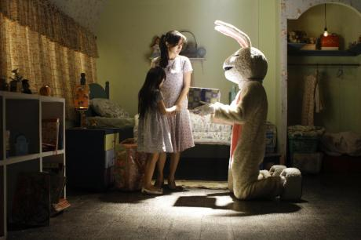La scena iniziale di Shackled (Belenggu) non potrebbe essere più promettente. Nel cuore della notte, una donna col volto seminascosto da un foulard e un paio di occhiali neri è alla guida di un’auto in una remota strada di campagna. Un giovanotto in preda al panico e tutto inzaccherato viene fuori inciampando dal sottobosco, e il veicolo solitario lo raccoglie. Accanto a lui, sul sedile posteriore, il giovane scopre di avere i cadaveri insanguinati di una donna e di una bambina, mentre nel sedile del passeggero c’è una persona con un costume da coniglio, che si gira a guardare il giovane e sembra sorridergli sinistramente, proprio mentre la pioggia che cade copiosa sul parabrezza si trasforma improvvisamente in sangue.
Purtroppo, tutto questo si rivela essere uno dei tanti sogni inquietanti di Elang (Abimana Aryasatya), che è spesso perseguitato da queste visioni di sangue e omicidi, dove l’uomo vestito da coniglio è sempre presente. Per questo motivo Elang passa il resto del suo tempo vagando senza meta, con uno sguardo di stupore sul volto, e attira gli sguardi interrogativi dei suoi condomini, del personale del bar che frequenta e anche del suo capo, dei colleghi e dei clienti del bar dove lavora. Quando il notiziario lascia intendere che nel suo quartiere c’è un serial killer a piede libero, tutto il vicinato si spaventa e ha i nervi a fior di pelle. Non ci vuole molto perché i loro sospetti si concentrino su Elang.
Scritto e diretto dalla regista indonesiana Upi (alias Upi Avianto), Shackled è un’opera molto interessante che cattura splendidamente sia il lato squallido della Giacarta di oggi sia un’estetica inventiva e opportunamente surreale nei numerosi sogni e allucinazioni di Elang. L’illuminazione e la fotografia sono eccellenti e contribuiscono ulteriormente a dare al film un tono adeguatamente angoscioso, mentre la sceneggiatura fa fatica a eguagliare la qualità estetica complessiva del film. Elang sembra capace di attirare l’attenzione di un certo numero di donne diverse, dall’ardente prostituta Jinggu (Imelda Therinne) alla madre di famiglia sottomessa della porta accanto, Djenar (Laudya Chintya Bella), o persino l’amichevole cameriera del bar, ma non si sfugge al fatto che Elang è un uomo profondamente turbato, con alcuni gravi problemi psicologici.
Mentre la storia progredisce, lentamente si svelano sia la radice del problema di Elang che la portata della sua carneficina immaginaria, e purtroppo le risposte non sono una grande sorpresa. Il maggiore difetto del film non è che ogni cosa si svolga in modo del tutto prevedibile, ma che ciò avvenga a una lentezza incredibile. Di conseguenza, il pubblico è sempre circa tre passi avanti ai poliziotti e a tutti gli altri nell’indovinare chi è il killer e quale verità si nasconde dietro il coniglio assassino. Pur essendo sempre impressionante, la visione del film può diventare occasionalmente frustrante. Purtroppo, il cast non è sempre così forte come avrebbe dovuto essere per vendere questa storia e aiutarci a entrare in contatto con la situazione di queste persone, ovviamente non piacevoli. Questo difetto emerge maggiormente nella seconda metà del film, quando alcuni personaggi diventano più minacciosi e manipolatori, mentre altri reclamano la nostra simpatia.
Con una sceneggiatura più incalzante e avventurosa, non vi è dubbio che Upi avrebbe il talento giusto per mettersi dietro la macchina da presa e confezionare un thriller efficace, di grande bellezza e sostanza drammatica. Non è il caso di Shackled, che comunque rappresenta un positivo passo in avanti verso la sua realizzazione nel futuro.
-
-
Sunday 21 April 2013
-
Instanbul here I come
21 Apr 09:15 Bernard CHAULY Malaysia 1h 39m 2012 Teatro Nuovo La produzione di uno dei film di maggiore qualità di quest’anno, Istanbul Here I Come (Istanbul Aku Datang), ha riscontrato un successo totale. Questo non vuole essere un complimento spudorato al regista del film, Bernard Chauly, ma è innegabile che il suo lavoro attento e ben organizzato si è tradotto in un film interessante da guardare. Anche il cast, che vanta la presenza di divi famosi, del calibro di Lisa Surihani e Beto Kusyairy, è sufficiente per attirare al cinema il pubblico locale.
In principio, il film si sviluppa come la maggior parte delle commedie romantiche, nelle quali una ragazza fa un viaggio all’estero per andare a trovare il fidanzato, nella speranza di studiare insieme e, infine, sposarsi. Dian (Lisa Surihani) è anche una blogger metropolitana che aggiorna costantemente il suo status nel blog. Proprio come l’80% della popolazione femminile di Kuala Lumpur, vero? Ma non è tutto. Anche la storia d’amore si sviluppa come una fiaba in cui Dian ha una personalità infantile ma affettuosa, mentre Azad (Tomok) è leggermente imbranato.
L’unica differenza è la qualità della cinematografia di Istanbul Here I Come, lussuosa e mozzafiato, rispetto agli altri film nazionali. La scelta di Bernard Chauly di girare per due settimane a Istanbul si è dimostrata vincente, dati gli splendidi scenari che fanno colpo sul pubblico e che sarebbero impossibili da trovare in Malaysia.
Merita un applauso anche il costumista, perché ha saputo tirare fuori un lato diverso di Lisa Surihani, trasformandola in una ragazza giovane nell’animo, ancora impegnata negli studi ma con solidi progetti per far diventare realtà il matrimonio dei suoi sogni. Tuttavia, chi scrive attende con ansia l’arrivo di Harris, che è interpretato da Beto Kusyairy. Non mi è ancora chiaro cosa ci sia in quest’uomo che fa impazzire il pubblico, il quale comincia a urlare appena lo vede sullo schermo. Forse è per la sua natura romantica, che è il temperamento di Harris, il personaggio che Beto interpreta con estrema naturalezza e che funziona benissimo. A parere di chi scrive, Beto va classificato a buon diritto come un esponente di quella nuova generazione di Romei in grado di superare Rosyam Nor.
Anche se qualcuno si è risentito per la presenza nel film di un uomo e di una donna che coabitano, a parere di chi scrive spetta in ultima analisi al pubblico cogliere nel film ciò che vuole e la co-abitazione descritta intende solo far ridere, a differenza di una lezione che invece tutti dovrebbero imparare.
La sceneggiatura è di Rafidah Abdullah e il fraseggio moderno che costella il film è più che adatto a una storia così contemporanea. Ultimo ma non meno importante, anche il tema principale della colonna sonora, Aku Datang di Tomok, è buono e si adatta perfettamente al film.
-
G'mor Evian!
21 Apr 11:25 YAMAMOTO Toru Japan 1h 46m 2012 Teatro Nuovo Quando gli adolescenti vedono mamma e papà fare i cretini o comportarsi in modo non adatto alla loro veneranda età, spesso reagiscono con imbarazzo, disprezzo o esprimendo il fervido desiderio che cotanti sedicenti adulti si decidano a crescere. Poi, qualche ora o qualche minuto più tardi, questi saggi quindicenni si mettono a fare i cretini anche loro, cioè fanno quello che si fa di solito alla loro età.
A meno che l’adolescente in questione non sia Hatsuki (Miyoshi Ayaka), la protagonista della commedia G’mor Evian! di Yamamoto Toru. Sua madre Aki (Aso Kumiko) è ancora la stessa chitarrista punk rock, nemica delle convenzioni e amante del divertimento, che era a diciassette anni, quando ha avuto Hatsuki, sebbene la mattina, quando esce per andare al lavoro, appaia come una composta donna d’affari. Hatsuki, invece, si occupa con entusiasmo della spesa e delle faccende di casa, cucina o altrimenti gioca a fare l’adulta nella casa in cui vivono lei e la madre single.
E sebbene lei e sua madre siano ancora amicissime, lei inizia a mettere in discussione il loro spensierato stile di vita, e comincia a desiderare la stessa esistenza borghese e apparentemente normale della sua migliore amica, la frizzante Tomo-chan (Rena Nonen).
Poi improvvisamente riappare nella loro vita Yagu (Oizumi Yo), con i suoi capelli crespi, e l’effervescenza di un personaggio dei cartoni animati dopato dalle bevande energetiche. Yagu è il cantante del gruppo musicale di Aki e una specie di papà adottivo per Hatsuki, che se n’era andato improvvisamente chissà dove due anni fa. E ora l’infastidita Hatsuki si ritrova fra le mani un altro bambinone.
Lavorando su un romanzo di Yoshikawa Toriko, Yamamoto e lo sceneggiatore Suzuki Kenichi hanno elaborato con ironia e sentimento la loro premessa di rovesciamento dell’età mentale, anche se l’epilogo della loro storia non è certo sorprendente. I due non solo inquadrano tale premessa dal punto di vista di Hatsuki, ma forniscono alla ragazzina e alla sua famiglia atipica una complessità che oltrepassa le esigenze delle formule della comicità nipponica.
L’intero film, in effetti, è straordinariamente ben costruito e interpretato, malgrado l’apparenza aneddotica e le sue situazioni da sitcom. La trama è poco più di un arrivo importante (quello di Yagu) e una partenza importante, ma nel frattempo Hatsuki impara il significato di famiglia e amicizia (che non corrispondono alla definizione convenzionale data dalla società), e impara anche come pensare agli altri invece che sempre e solo a se stessa. Vale a dire che inizia a crescere.
Per quanto in questa storia si parli tanto di famiglia non c’è nulla di moralizzatore o stereotipato nel modo di raccontarla. Hatsuki e Aki alla fine si parlano a cuore aperto, proprio come negli altri innumerevoli film su madri e figlie, ma lo fanno in modo franco e naturale, senza l’abituale drammaticità.
L’esordiente Miyoshi Ayaka interpreta Hatsuki come la tipica adolescente piena di contraddizioni: dolce e affascinante in alcuni momenti, fredda e persino crudele in altri. Supera tutte le prove della rigida prof di inglese (Koike Eiko) e colpisce la venditrice modaiola al mercatino delle pulci (Tsuchiya Anna) con il suo gusto per il punk rock, ma non è né una secchiona né una ribelle.
Nel ruolo di Yagu, Oizumi Yo fa spesso il buffone per far ridere, ma sa anche quando è il caso di smetterla; quando Hatsuki versa lacrime piene di rimpianto, Yagu sa replicare con sincerità e saggezza. Ci accorgiamo così che lui è diverso da quello che appare a prima vista, e anche se fino alla fine non sentiamo tutta la sua storia, la percepiamo in ogni sua parola e in ogni suo gesto sin dall’inizio.
-
National Security
21 Apr 14:00 CHUNG Ji-young South Korea 1h 46m 2012 Teatro Nuovo 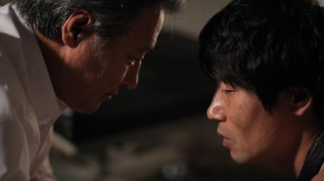”Il film della tortura” è il nome con cui gli ospiti internazionali indicavano questo film quando è stato premiato al Busan International Film Festival nell’ottobre del 2012. La notizia si è sparsa velocemente. “Non posso neanche immaginare di rivederlo un’altra volta. Le torture durano almeno l’80% di tutto il film”, mi ha confidato un critico a una delle feste del BIFF. Poi la sua espressione si è fatta seria: “Ma è un film straordinario. Un risultato incredibile”.
National Security è il racconto piuttosto accurato dell’arresto e delle torture subite per ventidue giorni dall’attivista politico Kim Geun-tae nell’autunno del 1985 (nel film egli è indicato come Kim Jong-tae). Kim era uno dei personaggi chiave del movimento democratico sudcoreano che alla fine obbligò la dittatura militare al potere a modificare la Costituzione e a introdurre le elezioni presidenziali dirette nel 1987. Kim più tardi ha intrapreso con successo la carriera politica, ottenendo anche una nomina come membro dell’Assemblea Nazionale nel 1996 e come ministro della salute durante il governo del presidente Roh Moo Hyun dal 2004 al 2006. Tuttavia, nei decenni seguiti alle torture subite egli ha continuato a soffrire dei postumi di un disturbo da stress post-traumatico. È morto nel 2011, all’età di sessantaquattro anni, a causa del morbo di Parkinson, che molti pensano fosse una conseguenza delle torture subite.
La maggior parte dei film viene realizzata allo scopo di intrattenere il pubblico, ma in qualche occasione un regista può anche provare il desiderio di illuminare gli spettatori su particolari argomenti o di presentare un soggetto di tipo politico. National Security è indubbiamente un film politico per il fatto di essere uscito in sala durante la campagna presidenziale del 2012, durante la quale Park Geun-hye, figlia dell’ex dittatore Park Chung Hee, è stata eletta presidente della Corea del Sud. Ma a un livello più basilare credo che questo film presenti a noi spettatori una richiesta specifica: quella che siamo testimoni delle torture subite da Kim da parte dei dipendenti governativi nel centro di detenzione a Namyeong-dong. Nel farci testimoni di questo crimine, forse possiamo rendere omaggio al suo sacrificio e comprendere in qualche modo quello che lui e così tanti altri prigionieri politici hanno subito in quell’epoca.
Dovrei forse dare qualche spiegazione riguardo alla tortura. Guardare il film è oltremodo difficile data la sua impronta realistica e l’atmosfera opprimente che pervade la storia. È simile, per certi versi, alle sequenze di tortura presenti in Zero Dark Thirty di Kathryn Bigelow, solo molto più lunghe e intense. D’altro canto va detto che questo film non è Saw. Non ci sono unghie strappate, non ci sono scene di blood and gore, forse perché non sono necessarie. Il protagonista Park Won-sang ci trasmette l’opprimente senso di disperazione sperimentato da Kim in quel periodo e, in un modo sfumato e controllato ci mostra anche sia i modi in cui Kim è stato piegato, sia i modi in cui non lo è stato.
Mi rendo conto, a questo punto della recensione, che molti lettori potrebbero non essere così tentati di andare a vedere questo film, ma io voglio davvero incoraggiare il pubblico a vederlo. Per me, è il miglior film coreano del 2012. Il regista Chung Ji-young ha fatto un lavoro straordinario con la caratterizzazione delle varie persone che appaiono nel film, in modo che, volenti o nolenti, ci facciamo assorbire e veniamo spinti in avanti dalla trama. La prospettiva umanistica del film si estende ai dipendenti governativi che sono i carcerieri di Kim, trasmettendo all’opera una complessità emotiva davvero necessaria. Più che altro, ciò che rende sopportabili le scene dure di questo film è il senso che esso è scaturito non dalla rabbia ma soprattutto dall’empatia per quello che Kim ha vissuto. Gli ultimi dieci minuti, in particolare, sono estremamente commoventi. È questa empatia a trasformare National Security da semplice film su una specifica questione in qualcosa di più grande e prezioso.
-
Will you still love me tomorrow
21 Apr 15:50 Arvin CHEN Taiwan 1h 44m 2013 Teatro Nuovo 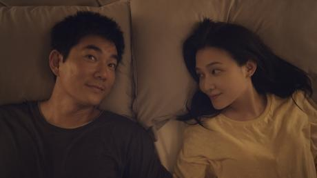Ricco di simpatiche performance e inframmezzato da momenti di incantevoli bizzarrie, Will You Still Love Me Tomorrow? presenta una trama meno articolata di Au revoir Taipei, la notevole opera prima dello sceneggiatore-regista sino-americano Arvin Chen, ma è altrettanto facile da assimilare. A differenza della compiutezza del film precedente, Tomorrow possiede i tratti lineari di una commedia d’amore in cui si intrecciano tre storie sentimentali che abbracciano un ampio spettro sessuale. Metrosexual di Taipei fino al midollo, sarà sicuramente etichettato come “film gay” (soprattutto in Occidente), anche se in realtà non lo è affatto – anzi, forse sarà stroncato dagli spettatori gay più irriducibili per il ritratto che offre dell’omosessualità come una semplice fase passeggera. Di fatto si tratta di una pellicola gradevole e alquanto tenera sulla confusione romantica, senza ambizioni di analisi approfondite sulla sessualità. È interpretata da una megastar (il cantante-attore taiwanese Richie Ren) e si rivolge al pubblico mainstream. Il battage pubblicitario locale del film si è prodigato a occultare gli elementi gay, senza farne alcun accenno nel manifesto o nel trailer.
Enfatizzando la sua tendenza a sembrare ingenuamente fuori di testa, Ren si dimostra una scelta di casting felice nei panni di Wei-chung, un tranquillo ottico di mezza età felicemente accasato e con un figlio piccolo. Al banchetto prematrimoniale per la sorella minore, Wei-chung si imbatte nel vecchio amico Stephen, camp fino all’impossibile, il quale è sorpreso dalla situazione in cui si trova Wei-chung. “Non aver paura, non ti faccio saltare la copertura”, gli dice. “Quale copertura?”, chiede Wei-chung, “Sono sposato”. Ben presto però Wei-chung si ritrova a guardare negli occhi un bel cliente di Hong Kong e a sentire uno scombussolamento romantico. In parallelo, e con una durata pressoché uguale sullo schermo, si dipana la storia della sorella svampita di Wei-chung (deliziosamente interpretata dall’attrice televisiva Kimi Hsia), che viene assalita da un brutto attacco di ansia prematrimoniale, scarica il fidanzato rimbambito e si rintana a casa in compagnia di noodles in scatola e di un dramma televisivo sudcoreano. Mentre fratello e sorella cercano di trovare una soluzione ai rispettivi sconquassi emotivi, anche i loro compagni provano a raccapezzarsi nel caos in cui sono piombati.
In Tomorrow l’impianto solido e intrecciato di Au revoir è del tutto assente, ma resta pur sempre un’impresa ambiziosa, a un livello emotivo più marcato. Nonostante vi siano numerosi buoni momenti, la sceneggiatura e la regia di Chen non riescono a sostenere né un tono uniforme da commedia romantica, visti i salti del film tra i vari elementi conduttori, né una percezione continua di irrealtà che renderebbe più agevoli le scivolate occasionali nel fantasy. È il tipo di sceneggiatura che ha tutta l’aria di aver bisogno ancora di una revisione finale; di fatto una colonna sonora più ricca e descrittiva a opera di Hsu Wen, il compositore jazz sino-americano di Au revoir, avrebbe contribuito a creare un’atmosfera più diffusa. Alla fine più che il film nel suo complesso restano impresse le singole pennellate: il capo di Wei-chung (il veterano dell’industria cinematografica Hsiao Yeh in un cameo) trascinato verso la pensione, il fidanzato citrullo della sorella che inscena un’intricata riconciliazione, la sorella che parla con la pin-up della soap o la moglie di Wei-chung che attacca a cantare la canzone dei titoli di testa.
Comunque, è un omaggio alle singole performance il fatto che la parte finale del film sia dotata di una certa potenza, grazie a un discorso commovente di Wei-chung e al bel finale aperto. Benché il suo personaggio sia un filo sottotono, Mavis Fan dimostra una pacata astrazione che ben si accorda con l’ingenua innocenza emotiva di Ren, e la cantante-attrice taiwanese nelle ultime scene se la cava egregiamente, rendendo giustizia alla scelta di interpretare un personaggio leggermente più vecchio di lei. Un altro che, come Ren, esce fuori dai soliti ruoli è Stone (alias Shih Chin-hang), lead guitarist della rock band taiwanese Mayday, una vera sorpresa nei panni del fidanzato buono ma confuso della sorella. Il resto del cast attinge a Au revoir, compreso Jack Yao nel ruolo di cerimoniere matrimoniale e Lawrence Ko in quello di leader del “coro” gay, molto camp, del film.
-
All about my wife
21 Apr 17:45 MIN Kyu-dong South Korea 2h 1m 2012 Teatro Nuovo 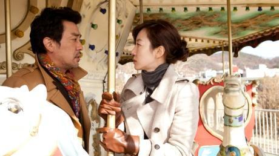Nella tradizione della commedia romantica, Jung-in e Doo-hyun si incontrano e si piacciono durante un piccolo terremoto a Nagoya, in Giappone. Lei, studentessa in una scuola per cuochi, con le scosse va nel panico; Doo-hyun, che è un tecnico delle costruzioni, la tranquillizza con calma sul fatto che non c’è alcun pericolo. Dopo questa breve introduzione, facciamo un balzo in avanti di sette anni, saltando a piè pari la loro felice storia d’amore, per ritrovarli a Seoul dove vivono come marito e moglie, senza figli. La ciarliera Jung-in è fedele al marito ma estremamente dispotica e critica. Doo-hyun, invece, è già andato oltre il rimpianto piombando direttamente nella disperazione matrimoniale. Ossessionato dal desiderio di sfuggire alla moglie e alle sue costanti attenzioni, Doo-hyun prega il suo capo, il signor Na, di spedirlo in missione a Gangneung, sulla costa orientale della Corea. Il capo acconsente, ma inaspettatamente Jung-in si presenta e annuncia che partirà con il marito.
È più o meno a questo punto che a Doo-hyun capita di conoscere il nuovo vicino, un famigerato Casanova che si chiama Jang Seong-gi (il cui nome, va detto, in coreano allude chiaramente all’organo sessuale maschile). Seong-gi ha sedotto un numero così elevato di donne da essere ormai stanco e desideroso di ritirarsi dagli exploit amorosi, ma Doo-hyun vede in lui una rara opportunità: offrendogli del denaro, gli chiede di sedurgli la moglie procurandogli così delle motivazioni per chiedere il divorzio. Inizialmente Seong-gi è riluttante ma, dopo aver conosciuto Jung-in, comincia a considerarla una sfida interessante.
All About My Wife è un remake ufficiale della commedia argentina di Juan Taratuto Un novio para mi mujer, che era stato il campione d’incassi del 2008 in Argentina. Anche il remake si è rivelato un successone, e ha venduto 4,6 milioni di biglietti al botteghino coreano. Di certo nel concetto originale c’era già un buon potenziale, ma ciò che ha colpito pubblico e critica in All About My Wife è soprattutto la sua realizzazione. Il regista Min Kyu-dong (Antique, Memento Mori) dà alla sua storia una patina molto uniforme e professionale, conferendole anche una straordinaria energia attraverso il montaggio e la direzione degli attori; il tempismo comico e il ritmo vivace rendono la visione di questo film molto piacevole.
Anche i tre attori principali sono stati ampiamente elogiati: Lim Soo-jung (I’m a Cyborg but That’s OK, A Tale of Two Sisters) conferisce al suo ruolo un’energia frenetica che si spinge fino ai limiti della caricatura senza mai andare oltre, è spassosa nella sua interpretazione e capace di tenere bene in mano la seconda metà del film. Lee Seon-gyun (Nobody’s Daughter Haewon, Helpless), che è diventato un divo coreano molto redditizio negli ultimi anni grazie al suo lavoro in tv, è efficace nel ruolo del poco risoluto Doo-hyun. Tuttavia, il personaggio di questo film che rimane impresso a tutti è quello del Casanova interpretato da Ryu Seung-ryong. Con un volto che non suggerisce immediatamente l’idea dell’ammaliatore dalla parlantina facile, Ryu è comico ma anche autenticamente carismatico in un ruolo a metà strada tra l’esagerazione autoironica e lo stereotipo, e si è rivelato uno dei personaggi cinematografici più memorabili e piacevoli dell’anno.
All About My Wife non contiene molti colpi di scena, e l’ultima mezz’ora è un po’ appesantita da un eccessivo sentimentalismo, ma rimane comunque una delle commedie di maggior successo dell’anno. Con diversi tocchi comici sapientemente distribuiti e dialoghi vivaci per tutta la sua durata, questo film può effettivamente rappresentare un esempio di commedia coreana scorrevole e ben confezionata.
-
The last supper
21 Apr 20:15 LU Chuan China 1h 56m 2012 Teatro Nuovo 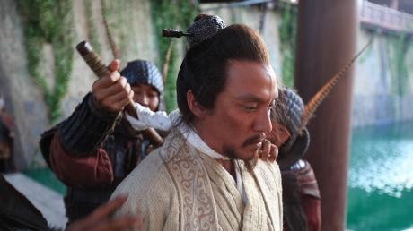Il nuovo, coraggioso film di Lu Chuan racconta una storia di proporzioni epiche e toni shakespeariani, ambientata attorno al famoso episodio della storia della Cina imperiale conosciuto con il nome di “Banchetto alla Porta Hong”. Filo conduttore del racconto sono gli incubi del fondatore della dinastia Han, Liu Bang, che sul letto di morte è ossessionato dai ricordi legati alla sua ascesa al potere e dall’acuta consapevolezza delle nefandezze che la sete di potere lo ha spinto a commettere…
Durante le rivolte che precedono la caduta della dinastia Qin, il giovane Liu si fa notare per il carisma e coraggio che lo contraddistinguono, guadagnandosi – nonostante la sua estrazione contadina – il rispetto e l’aiuto di Yu, guerriero aristocratico di discendenza e nobile di spirito e comandante dell’esercito più potente tra le forze ribelli. Yu affida a Liu il comando di un battaglione di 5000 soldati, con i quali Liu – rompendo l’accordo fatto con il suo protettore – invade da solo la capitale dell’impero ed elimina l’ultimo giovane imperatore della dinastia Qin. Da quel momento, il rispetto e la solidarietà di un tempo tra combattenti valorosi si trasforma in lotta all’ultimo sangue per il potere. Liu viene invitato a un sontuoso banchetto per celebrare la vittoria e la pace, durante il quale i consiglieri di Yu – diventato nel frattempo imperatore – intendono punire la sua insubordinazione con la morte; ma il generoso Yu decide di salvargli la vita. La lotta per il potere tuttavia non si ferma: Xin – uno dei principali consiglieri di Yu – tradisce l’imperatore e si allea con Liu; quest’ultimo con l’aiuto di Xin riesce a sconfiggere Yu, il quale si suicida sul campo di battaglia piuttosto che arrendersi al rivale. Liu potrebbe a quel punto regnare indisturbato, ma la presenza di Xin diventa nella mente dell’imperatore – ormai assetato di potere assoluto e ossessionato da manie di persecuzione – una minaccia. Liu fa imprigionare Xin, poi decide di liberarlo ma continua a essere ossessionato dal timore che Xin possa ribellarsi contro di lui come lui stesso aveva fatto con Yu…
Dopo aver invitato Xin ad un altro sontuoso banchetto, Liu lo fa decapitare. Lu Zhi, consorte di Liu, presenta all’imperatore la testa di Xin per suggellare il traguardo del potere assoluto. Ma il senso di colpa per i tradimenti commessi perseguita implacabile Liu, ed il suo sogno di regnare indisturbato rimane evanescente...
Lu Chuan ha studiato a lungo il periodo storico a cui il film fa riferimento e condotto accurate ricerche sull’architettura, i costumi e le armi dell’epoca. Ma al di là della fedele rappresentazione dei fatti, la valenza politica implicita nella narrativa è ovvia, e l’obiettivo ultimo del film – e motivo per cui sono stati necessari lunghi mesi di negoziazioni con le autorità della censura per ottenere il permesso di distribuzione – sembra quello di sottolineare come la Storia dimostri una pericolosa tendenza a ripetersi. Nelle parole del regista “ nonostante la storia di questi individui sia sepolta da 2000 anni, i loro ruoli si sono ripetuti continuamente sulla scena politica della Cina, con Liu che è servito da esempio per molti uomini politici cinesi. È stato questo che mi ha spinto a fare il film”.
-
Maruyama, The Middle Schooler
21 Apr 22:20 KUDO Kankuro Japan 2h 2013 Teatro Nuovo 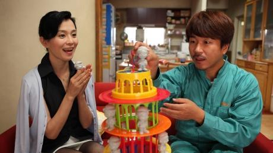Acclamato in Giappone come genio della comicità, il regista/attore/sceneggiatore Kudo Kankuro è stato più lento nel trovare riconoscimenti fuori dal suo paese. Il suo marchio di fabbrica, la commedia iperattiva, con dialoghi a raffica e diversi riferimenti alla cultura popolare nazionale, non è una delle cose più semplici da capire per un pubblico straniero, anche se i suoi due film precedenti come regista, Yaji and Kita: The Midnight Pilgrims (Mayonaka no Yaji-san Kita-san, 2005) e Brass Knuckle Boys/The Shonen Merikensack (Shonen Meriken Sakku, 2009) hanno sicuramente degli estimatori all’estero. Il suo terzo film, Maruyama, the Middle Schooler (Chugakusei Maruyama), costruirà certo una base di fan, malgrado tutti i riferimenti a vecchi spettacoli giapponesi sui supereroi e la sua narrazione frenetica e frammentaria.
Innanzitutto, invece di una coppia gay dell’epoca feudale (“Yaji e Kita”) o rockettari pensionati di mezza età (“Brass Knuckle Boys”), il protagonista che dà il nome al film è la figura universale di un ragazzino quattordicenne ossessionato dal sesso. Come tutti gli adolescenti maschi di tutto il mondo che fanno esperimenti erotici, Maruyama Katsuya (Takuma Hiraoka) si flette su se stesso come una ciambella nella semi-privacy della sua stanza (la condivide con una sorella minore rompiscatole e ficcanaso) nel vano tentativo di toccarsi con la lingua il pene.
A differenza della maggior parte degli altri adolescenti, tuttavia, lui si rifiuta di desistere e quando la spina dorsale fa crac (evento segnalato da pupille luminescenti e da un rumore simile a quello di un albero colpito dal fulmine) Maruyama si ritrova nel selvaggio mondo della sua fantasia, che comprende anche la visione di una bellezza in pantaloncini corti che scende una scala nel cielo e lo invita a condividere con lei una pera nel suo letto a castello, ora miracolosamente trasportato su una spiaggia inondata dal sole (con la summenzionata sorella che sta lì disorientata a guardare).
La storia vera e propria inizia quando Maruyama incontra il signor Shimoi (Kusanagi Tsuyoshi), uno strambo padre single che porta in giro il suo bimbo in carrozzina per tutto il danchi (complesso di case popolari) e mette il naso negli affari di tutti, compresi quelli di Maruyama (anche se la sua “conoscenza” delle contorsioni solitarie del ragazzo è più apparente che reale, almeno secondo l’opinione di Maruyama).
Intanto, la mamma di Maruyama, appassionata di soap coreane (Sakai Maki), si invaghisce di un timido elettricista coreano (Yang Ik-June) venuto a casa loro per sistemare il lettore DVD e che assomiglia al divo del DVD che si è bloccato. Fuori di casa, la sorellina di Maruyama segue il vagabondare di un anziano afflitto da demenza senile (Endo Kenji) che si scopre essere un chitarrista rock, con grande sorpresa e piacere di lei.
Le cose prendono una piega più seria quando qua e là per il danchi iniziano a spuntare dei corpi e la notizia viene riportata dal telegiornale locale. Ispirato dalla cosa, Maruyama inizia a disegnare una specie di manga su alcuni supereroi che accorrono in soccorso e lo mostra a Shimoi, ora diventato comprensivo, disegnando il padre ipersalutista (Nakamura Toru) nel ruolo del muscoloso Captain Fruit.
Trattandosi di un film di Kudo, le bizzarre fantasie di Maruyama corrispondono a una bizzarra realtà, anche se a volte è difficile dire dove finisca la realtà e dove inizi la fantasia.
Analogamente, tutti i personaggi, e Maruyama in particolare, sono tipi contemporanei ben riconoscibili oltre che comici personaggi grotteschi. Inoltre, anche se continuano ad essere fantasiosamente sgangherate, nel tipico stile di Kudo, le gag poggiano più su osservazioni relative alla stupidità dei comportamenti umani piuttosto che su riferimenti culturali.
Alla base di tutto c’è l’affetto di Kudo per la sua gente, anche per coloro che suscitano le fantasie più cupe e sanguinose di Maruyama. E il culmine del film, che da una semplice descrizione potrebbe sembrare nauseante e bizzarro, è invece divertente e stimolante.
Il cast, a cominciare da Takuma Hiraoka nel ruolo di Maruyama (durante le riprese aveva la stessa età del suo personaggio), recita compostamente provocando comunque grasse risate invece di esagerare nella mimica secondo lo stile comico commerciale giapponese. Chi mantiene l’espressione più impassibile, e fa ridere più di tutti, è Kusanagi Tsuyoshi nel ruolo di Shimoi.
Questo membro del gruppo pop superstar SMAP dev’essere applaudito non solo per i suoi fendenti comici, ma innanzitutto per aver accettato il ruolo, visto che il film fa palesemente riferimento a Kusanagi che, parecchi anni fa era stato visto a un festino in un parco di Roppongi, completamente nudo e ubriaco. Che lui vinca o meno qualche premio per la sua interpretazione in Maruyama, meriterebbe perlomeno il Premio per la Sportività.
-
-
Monday 22 April 2013
-
A werewolf boy
22 Apr 09:15 JO Sung-hee South Korea 2h 5m 2012 Teatro Nuovo 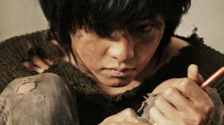Sun-yi (interpretata dall’attrice di teatro Lee Young-ran) ha una sessantina d’anni e si sta godendo l’autunno della sua vita con la sua famiglia allargata, nel Nord America. Un giorno riceve una telefonata dalla Corea a proposito di una casa di campagna nella provincia di Gangwon che una volta apparteneva alla sua famiglia. La telefonata innesca un flashback che la riporta a quarantasette anni prima quando, adolescente (Park Bo-young, Scandal Makers), malata di tubercolosi e ridotta in povertà in seguito al fallimento dell’impresa del padre, è costretta a trasferirsi insieme alla sorellina e alla mamma in una remota casa di campagna, di proprietà di un ricco cialtrone, Ji-tae (Yu Yeon-seok, Horror Stories). Un giorno Sun-yi, cupa e immersa in fantasie di evasione, incontra un ragazzo selvaggio dal fisico inspiegabilmente sano (Song Joong-ki, Penny Pinchers). Si scopre che un biologo folle (ne esistono di qualche altro tipo?) aveva condotto in quella casa uno strano esperimento segreto che aveva a che vedere con i lupi. Il ragazzo potrebbe essere il risultato di quell’ignobile impresa?
A Werewolf Boy ha suscitato un enorme apprezzamento da parte del pubblico femminile coreano più giovane, che lo ha consacrato come uno dei più grandi successi nazionali del 2012, con oltre sette milioni di biglietti venduti. Mettiamo le cose in chiaro: se avete detestato la serie Twilight e non avete mai capito perché le ragazzine ne vadano matte, se non sopportate il concetto di “vampiri vegetariani” che brillano come una lastra di vetro quando vengono colpiti dalla luce del sole, allora statevene alla larga da A Werewolf Boy. Permettetemi di ribadirlo: questa è la storia di una giovane ragazza coreana, ideata intenzionalmente per essere un avatar sul quale le spettatrici adolescenti di oggi possano proiettare le loro fantasie (non è stata fatta molta fatica per concepire il personaggio di Sun-yi in modo storicamente autentico nel contesto della Corea degli anni Sessanta); e che riesce a ottenere il ragazzo perfetto: bello, muto (niente rispostacce), praticamente immortale e (letteralmente) fedele come un cagnolino. Siete alla ricerca di oscure motivazioni psico-sessuali che facciano capolino dietro il bagliore dorato e sfumato del paesaggio montano di Gangwon? Fidatevi di me, non ce ne sono. Se riusciamo a vedere chiaramente il film per quello che è, non è una sorpresa che A Werewolf Boy sia stato un successo al botteghino. È congegnato apposta per catturare il cuore delle spettatrici (pre)adolescenti, che si identificano totalmente con Sun-yi e squittiscono gridolini di gioia alla vista dell’esageratamente bello Song Joong-ki, che si comporta come un Labrador Retriever, intelligente ma non troppo, e che quando arriva il climax del film piangono tutte le loro lacrime.
Naturalmente, questo non vuol dire che A Werewolf Boy sia solo sdolcinatissima fuffa. Lo sceneggiatore e regista Jo Sung-hee, del quale in molti hanno apprezzato il film precedente, End of Animal, per l’atmosfera strana ma inquietante, controlla con molta sicurezza tutti gli elementi. La carineria è ben integrata nella trama, così come la caratterizzazione dei personaggi. Jo riesce a gestire anche gli attori bambini con notevole facilità, mantenendo il tono delle loro interpretazioni nel giusto equilibrio rispetto agli adulti. Il tono generale del film è impostato a un livello decisamente esagerato, ma mai lezioso.
Con gli antagonisti del film non va altrettanto bene: il regista cerca di infondere una certa umanità a Ji-tae ma, nonostante gli sforzi di Yoo, il personaggio non va mai oltre la sua aggressiva pettinatura impomatata che sembra posticcia. Quando arriva l’inevitabile momento di azione con il lupo mannaro, è sorprendentemente ben fatto; sono ridotti al minimo gli effetti di computer graphics decotti che hanno guastato thriller di genere altrimenti eccellenti, come Chaw.
A Werewolf Boy non è né Un lupo mannaro americano a Londra né Il ragazzo selvaggio di Truffaut, ma una volta regolate di conseguenza le proprie aspettative, si può apprezzare come un fantasy da ragazzine con note melodrammatiche. È un film perfetto per un pigiama party per le vostre figlie, nipoti o sorelle adolescenti, che divoreranno il film tutto intero senza lasciarne neanche un ciuffetto di peli. Per quanto riguarda il finale, è senza dubbio una fantasticheria potente per le giovani ragazze coreane, ma in ultima analisi il film potrebbe avere un messaggio conservatore. Oppure potrebbe essere che a me piacciono di più i gatti.
-
Forever love
22 Apr 11:25 SHIAO Li-shiou Taiwan 2h 4m 2013 Teatro Nuovo 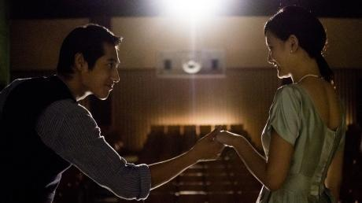Forever Love è una fetta di nostalgia giocosa e ben confezionata per i giorni gloriosi dei filmetti in dialetto Hokkien che si facevano a Taiwan negli anni Cinquanta e Sessanta; e attinge all’identità locale dell’isola nello stesso modo dell’attuale tendenza retrò di Hong Kong, proclamando la propria identità culturale nel momento in cui Cina continentale, Hong Kong e Taiwan si stanno gradualmente fondendo in una “Grande Cina”. Con la maggior parte dei dialoghi in Hokkien (un dialetto che arriva dalla provincia meridionale di Fujian, dove si parla tuttora, e che nell’isola è chiamato “taiwanese”), il film dichiara la sua identità locale su un piano puramente linguistico, come molte altre produzioni recenti. Ma l’ambientazione d’epoca nel mondo del cinema conferisce a Love un’atmosfera molto meno provinciale di tanti altri film taiwanesi contemporanei e una migliore accessibilità. Anche se dura almeno 15-20 minuti di troppo, e indugia esageratamente nelle fasi finali, Forever Love ha un suo fascino ingenuo che ne fa un’attrazione facile, anche se non particolarmente coinvolgente.
Tra il 1956 e il 1981 furono prodotti un migliaio di film Hokkien, circa duecento dei quali sono conservati oggi dalla Cineteca Cinese di Taipei, prima che lo spazzasse completamente via la decisione del governo del Kuomintang di imporre il mandarino come lingua ufficiale dell’isola. Anche se è incorniciato da una storia moderna piuttosto inutile, Love è ambientato in gran parte nel 1969, quando l’età dell’oro del cinema Hokkien, pur essendo già in fase di declino, era ancora in grado di riempire un cinema di quartiere con i giovani fan dei suoi divi. La sceneggiatura dell’esordiente Lin Chen-hao, tratta da una storia originale di Wang Li-wen (Jump Ashin!), diverte molto con i suoi fan in deliquio, i divi che si mettono in posa, le vecchie sale cinematografiche tutte scricchiolanti e il sistema audio gracchiante, e i valori produttivi generalmente scadenti della maggior parte dei film Hokkien.
È tutto giocato a un livello leggermente esagerato, appena un gradino sopra la farsa, con l’esperto attore e presentatore Liao Chun che guida la carica interpretando un produttore avido e squallido. Nei panni del personaggio centrale del giovane sceneggiatore che sforna copioni, l’attore e modello Blue Lan ce la mette tutta, ma è largamente superato, a livello di personalità, dal cast di contorno, da Edison Wang che interpreta un idolo giovanile egoista, all’attrice Tien Hsin che torna sugli schermi dopo sette anni vestendo i panni della sua esigentissima partner, fino ad Amber A, l’aspirante attrice infatuata dello sceneggiatore. Anche se ha una voce fastidiosamente stridula, la ventisettenne An, che ha raggiunto la fama come modella di nudo quattro anni fa, ha una presenza scenica da svampita che è perfetta per il ruolo dell’aspirante attricetta, nel quale si getta a capofitto, con un senso dell’umorismo trascinante. Il co-regista Kitamura Toyoharu, un attore-regista-ristoratore giapponese che vive a Taipei, spunta nel film nei panni di un goffo scenografo.
A suo merito, va detto che il film non fa nessuna dichiarazione esplicita sul cinema in Hokkien come espressione di valori e di cultura locali né sulla sua battaglia contro il mandarino “ufficiale” (che il Kuomintang importò dalla Cina continentale). Il messaggio è sufficientemente chiaro per chiunque voglia ascoltarlo, e Love sostiene appena la causa del valore artistico del cinema Hokkien che, sulla falsariga del cinema cantonese di Hong Kong degli anni Cinquanta e Sessanta, era un prodotto usa-e-getta e a basso costo, mentre i film “prestigiosi” erano perlopiù in mandarino (nei titoli di coda sono inclusi degli estratti di veri film in bianco e nero). Nel complesso, Forever Love richiama semplicemente l’attenzione su un periodo del cinema taiwanese ormai dimenticato, in un delicato esercizio di nostalgia. Casualmente, il co-regista Shiao Li-shiou è stato direttore della fotografia per il documentario Taiwan Black Movies, un tuffo in un’altra epoca dimenticata della storia cinematografica di Taiwan.
-
Demons
22 Apr 14:15 Mario O'Hara Philippines 1h 40m 2000 Visionario 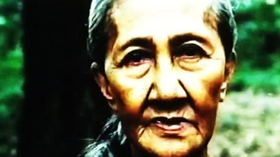Nel 2000 O’Hara diresse il suo ultimo film pito-pito: Demons (Pangarap ng Puso), la storia di due bambini cresciuti vicino alle incantate foreste pluviali di Negros, che si innamorano e vengono sospinti nella tumultuosa corrente della storia. La loro crescita è rappresentata dall’evoluzione del modo in cui percepiscono le creature magiche che danzano intorno a loro - e che per il bambino sono una metafora del mondo vasto e sconosciuto, per l’adolescente una metafora della sessualità emergente, per il giovane diventato adulto una metafora degli impulsi che governano allo stesso modo terroristi e fascisti militari, bloccati in un ciclo infinito di violenza e vendetta.
Una volta, dopo la proiezione di questo film, mi è stato chiesto (dalla defunta Nika Bohinc, se ricordo bene!): perché i bambini avrebbero dovuto avere paura degli spiriti delle foreste se tutto quello che hanno conosciuto è l’innocenza e la gioia? Allora avevo una risposta, che mi sembrava adatta, ma dopo averci pensato su credo che la risposta più giusta da dare sarebbe stata questa: ciò che i bambini conoscono è così poco rispetto a ciò che possono veder accadere, e anche sapendo poco (o meglio, proprio per questo: com’era la definizione di Socrate di un uomo davvero saggio?) sono in grado di avvertire il pericolo e l’oscurità oltre il loro orizzonte limitato e sicuro. I bambini possono sentire e vedere, e in questo modo conoscere (anche se non sono certi di tutti i particolari); così attrezzati, e non privi di immaginazione, sono in grado di temere. Quando poi crescono e diventano adulti imperfetti (una attivista e poetessa in erba, un temibile killer ribelle), la loro conoscenza aumenta e il loro orizzonte si amplia, ma il buio non è mai completamente dissolto, e la paura non sparisce mai del tutto.
-
Lethal Hostage
22 Apr 14:15 CHENG Er China 1h 49m 2012 Teatro Nuovo 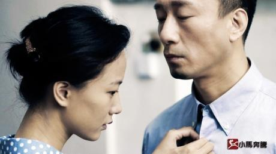Film prodotto da Ning Hao ma diretto da un altro regista. Questo la dice già lunga su un film che del regista di Crazy Stone ricorda il tono dark (senza lo humour questa volta), il ritmo ed il cuore. Dalla prima inquadratura sul volto dei due protagonisti, Sun Honglei e Ni Dahong, apparentemente impassibili ma dietro i quali si capisce che regna il caos emotivo, il registro del film è immediatamente chiaro.
La storia si sviluppa attorno ad un gruppo di criminali che operano nella zona “calda” di confine tra Cina e Birmania, dove prospera il commercio di droga (tradotto letteralmente, il titolo del film significa “Tempesta al confine”). Durante un’operazione di polizia che smaschera un gruppo di spacciatori, il capo di questi ultimi muore ed il suo portaborse prima di scappare nasconde il bottino e prende in ostaggio una bambina, figlia di un dentista nel cui studio è avvenuta la sparatoria. Dopo essersi liberato dei narcotrafficanti rivali, l’uomo diventa a sua volta capo del gruppo mentre il padre della bambina è intercettato dalla polizia mentre cerca di riportare il bottino al criminale per riscattare la figlia e, pur essendo moralmente innocente, finisce in carcere. La bambina rimane quindi con il trafficante il quale la cresce e poi la prende in moglie. Passano dieci anni, il padre esce dal carcere e la coppia decide di cambiare vita, lasciare la Birmania e ricominciare ex novo in Cina. Ma rimane un’ultima operazione da portare a termine…
La narrazione è suddivisa in quattro capitoli che raccontano la storia rimbalzando dal presente al passato e viceversa. Il primo è dedicato a un cane, una delle prime vittime di questa guerra tra trafficanti e forze dell’ordine, il secondo capitolo – che in realtà è il prologo della storia – si intitola Il Passato, il terzo è dedicato alla figlia e nel quarto si torna al passato. La storia è sufficientemente complicata, com’è usuale in un thriller, ma l’aspetto originale del film è il rapporto tra vittime e carnefici. Lui è un criminale intelligente e calcolatore, dalla mente fredda e capace di grandi nefandezze, ma con una debolezza, l’affetto – che poi si trasforma in amore – e la dedizione per una ragazzina innocente che ha preso come ostaggio e verso la quale ha poi sviluppato un sentimento profondo. E lei, vittima forse della sindrome di Stoccolma, dopo essere forzatamente cresciuta assieme al suo rapitore, ricambia da adulta il sentimento dell’uomo, anche se con un velo di malinconia, quasi di rassegnazione. Il padre di lei, la cui vita è stata rovinata dal trafficante che nel frattempo è diventato marito di sua figlia, non riesce a comprendere il rapporto tra i due ma non può abbandonarli. Ed è a lui che il trafficante si affida nel momento cruciale che deciderà il futuro della donna. Si avverte che dietro il thriller sostenuto da una suspense continua il film racconta della malinconia e del rimpianto per la vita che poteva essere ma non è stata e per le scelte sbagliate che a volte si fanno in momenti cruciali e le cui conseguenze si pagano per tutta la vita. Il tutto affidato non ai dialoghi, che sono minimi, ma all’espressività dei volti dei protagonisti che rivela molto del loro dramma interiore.
Il film è stato girato a Pechino e nella zona di confine dello Yunnan da due diversi direttori della fotografia, che hanno dato ai due luoghi colori diversi ma li hanno accomunati nell’atmosfera sinistra, di posti abbandonati alla tirannia del degrado fisico e spirituale.
-
New world
22 Apr 16:10 PARK Hoon-jung Taiwan 2h 14m 2013 Teatro Nuovo Un grosso camion precipita giù per una strada deserta e si scontra con un’auto che sta sopraggiungendo. Quest’unico incidente basta a gettare nel caos i meccanismi interni all’associazione criminale Goldmoon, visto che il potente boss del gruppo era seduto sul sedile posteriore dell’auto. Le gerarchie e i rapporti di forza che prima erano stabili ora sono improvvisamente da rivedere, e sembra probabile che scoppi un conflitto tra l’imprevedibile numero due della banda, Chung, (Hwang Jeong-min) e il più morbido, ma decisamente ambizioso, numero 3 Joong-gu (Park Seong-woong).
Ma all’insaputa dei vertici della banda, le forze di polizia locali stanno anche loro raccogliendo informazioni dall’interno e le usano per ampliare i loro obiettivi. Il sottoposto più fidato di Chung, Ja-sung (Lee Jung-jae) è in realtà un poliziotto sotto copertura, che si è infiltrato con successo nella banda e si è guadagnato la loro fiducia. Dopo otto anni di tensione angosciante, e con un bambino che sta per nascere, ora è ansioso di uscire dalla banda e ritirarsi, ma il suo responsabile, il Capo Kang (Choi Min-sik), vuole che lui rimanga ed è disposto a fare il gioco duro pur di rimetterlo in riga.
La Corea non è certo povera di film di gangster. Ci sono commedie di gangster, film d’amore con gangster, drammi di maturazione con gangster, horror con gangster, nonché tipici filmetti di gangster in cui giovani uomini benintenzionati vengono indotti a delinquere e finiscono in mezzo a brutte battaglie tra bande. Malgrado le diverse ambientazioni e le inevitabili variazioni nei toni riscontrabili in questo gruppo di film, si tratta sempre, essenzialmente di pellicole melodrammatiche, nel senso che siamo portati a identificarci con uno o due protagonisti-vittime che si trovano a fronteggiare forze molto più grandi di loro. A volte vincono e a volte perdono, ma mentre combattono la loro lotta, la loro bontà d’animo o il loro senso dell’onore vengono svelati al pubblico.
New World di Park Hoon-jung non si allontana completamente da questa formula, nel senso che simpatizziamo profondamente con la difficile situazione dell’ufficiale di polizia sotto copertura interpretato da Lee Jung-jae. Tuttavia, l’approccio di Park è più ampio rispetto a quello della maggior parte degli altri film coreani sulla malavita e, in definitiva, meno incentrato sulla psicologia dei suoi protagonisti ma più interessato all’esplorazione delle strutture e dei meccanismi di potere all’interno delle organizzazioni criminali. Il regista lo descrive come un film “sulla politica della malavita” e questo è essenzialmente ciò che devono fare i suoi personaggi in modo da mantenere il controllo del potere. Il gioco del gatto col topo con la polizia locale non fa che aggiungere un altro strato di complessità alla narrazione.
Gli spettatori coreani, che hanno spinto il risultato di botteghino fino alla cifra impressionante di oltre quattro milioni di biglietti venduti, sono stati particolarmente entusiasmati dalle interpretazioni degli attori protagonisti. Il protagonista di Oldboy Choi Min-sik di recente è tornato in auge con i ruoli avuti in I Saw the Devil e Nameless Gangster: Rules of the Time (2012). In New World Choi fornisce un ritratto sfaccettato del Capo Kang, la cui motivazione di consegnare i criminali alla giustizia è talmente forte da indurlo a trattare ingiustamente i suoi subordinati. Dal canto suo, Hwang Jeong-min, è insieme repellente e carismatico nel ruolo dell’impulsivo ed estroverso Chung. Lee Jung-jae, infine, è molto efficace nell’esprimere l’angoscia e il panico che il suo personaggio prova ma cerca disperatamente di nascondere; anche se fa il mestiere di attore da circa vent’anni, la sua interpretazione in questo film ha fatto sì che molti spettatori lo guardassero con occhi diversi.
Sebbene qualcuno abbia criticato la somiglianza di New World con Infernal Affairs e Il Padrino (un film che il regista sostiene di aver visto almeno un centinaio di volte), questa pellicola rappresenta qualcosa di nuovo per il cinema coreano. È probabile che nei prossimi anni ci sia anche un sequel, dal momento che la sceneggiatura originale conteneva molto più materiale di quello che poteva essere contenuto in un solo film. Anche se definirlo il Padrino coreano può essere un’esagerazione definire, questo film ha un forte impatto sullo spettatore e per quel che mi riguarda, sarei piuttosto interessato a vedere un New World 2.
-
Juvenile Offender
22 Apr 20:00 KANG Yi-kwan Taiwan 1h 48m 2012 Teatro Nuovo 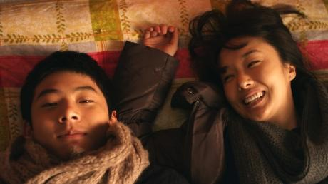Dal suo scranno, un giudice squadra tre giovani che sono stati arrestati in flagrante mentre facevano irruzione in una casa. Noi spettatori, già sappiamo che due di loro meritano di essere puniti, mentre Jigu, il più giovane, è perlopiù vittima della sfortuna. Non solo: proviene da un ambiente emarginato e non ha i genitori; vive con il nonno gravemente malato di diabete, che dipende quasi completamente dalle cure di Jigu (come dice il giudice, “Chi bada a chi, in questa famiglia?”).
La vita di Jigu è davvero in bilico in questo momento, e il giudice prende quella che ritiene essere la decisione più umana. Ammonisce i genitori degli altri due ragazzi, ai quali infligge sentenze relativamente più leggere, mentre a Jigu dice che starà meglio in un ambiente più disciplinato e stabile, e lo manda in riformatorio. Sul momento Jigu teme soprattutto per il nonno malato, ma forse percepisce anche che il suo incerto cammino verso il diploma di scuola superiore e verso una vita normale sta per essere deviato. “Non può perdonarmi, solo per questa volta?”, chiede al giudice. Ma non sarà l’ultima volta nella vita che Jigu si sentirà rispondere di no.
Juvenile Offender esamina l’impatto di tre eventi imprevisti nella vita di Jigu, a partire dalla condanna al riformatorio. Senza cadere nel moralistico, il film ci conduce all’interno del sistema di pena minorile e ci mostra sia come funziona, sia come può non funzionare come dovrebbe (il film è stato finanziato in parte dalla Commissione Nazionale Coreana per i Diritti Umani). In ogni caso, in questo ambiente Jigu non sembra migliorare né progredire in nessun modo. Tuttavia, ironicamente, il riformatorio gli darà qualcosa di assolutamente inaspettato: lo metterà in contatto con la madre.
Juvenile Offender è il secondo lungometraggio diretto da Kang Yi-kwan, dopo il pluripremiato dramma relazionale Sa-Kwa (2005), che ha colpito pubblico e critica per il suo approccio introspettivo e meditato alla narrazione. Anche questo film è compassionevole e commovente, e si regge su alcune interpretazioni davvero degne di nota. Seo Young-joo, che interpreta Jigu, sembra proprio un divo adolescente sebbene la sua carriera non sia ancora decollata. Nel 2012 una giuria del Tokyo International Film Festival gli ha assegnato un premio come miglior attore, e non è stata una sorpresa per nessuno di quelli che hanno visto il film, data la sua interpretazione sicura e del tutto naturale, nonostante la giovane età.
Hyo-seung, la madre di Jigu, è interpretata da Lee Jung-hyun, nota come pop star, ma che ha recitato anche in alcuni film notevoli, tra cui Night Fishing di Park Chan-wook e Park Chan-kyong (2011) e A Petal di Jang Sun-woo (1996). In questo film ha un ruolo complesso e ricco di sfumature, che rende in modo straordinario. Hyo-seung controlla la sua vita in modo quanto meno precario e non ha mai avuto la minima idea di cosa significhi essere genitore. L’uscita di Jigu dal riformatorio fa piombare nel caos la vita di Hyo-seung, ma soddisfa anche un suo bisogno. L’interpretazione di Lee esprime fragilità e forza, disperazione e un’incrollabile volontà.
Il rapporto che si instaura tra madre e figlio contamina tutti gli altri argomenti trattati nel film, dai temi dell’educazione e della deprivazione, a quelli della retribuzione e della responsabilità. Naturalmente Jigu vuole sapere tutto del suo passato, e di solito questo genere di informazioni aiutano una persona a sentirsi più radicata nel proprio mondo. Per ironia della sorte, nel caso di Jigu conoscere l’identità del padre, o scoprire l’origine del proprio nome così insolito (il nonno aveva erroneamente inserito “Jigu” invece di “Jingu” nel suo atto di nascita) rischia di far apparire la sua vita ancor più come il prodotto di forze arbitrarie e casuali. Ma nel suo ricongiungimento con la madre c’è molto potenziale: è chiaro che hanno bisogno l’uno dell’altra. Ciò che è meno chiaro, vedendo il film, è se saranno in grado di stare insieme.
-
Key of life
22 Apr 22:00 UCHIDA Kenji Japan 2h 8m 2012 Teatro Nuovo 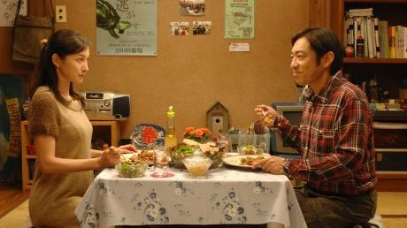
-
-
Tuesday 23 April 2013
-
Million dollar crocodile
23 Apr 09:15 LIN Lisheng China 1h 27m 2012 Teatro Nuovo Dalla giungla paludosa della Thailandia ad un parco di Hangzhou nella provincia dello Zhejiang in Cina la strada è lunga anche per un coccodrillo, la cui storia comincia nel luglio del 1990 quando, catturato, viene portato oltre confine via la provincia dello Yunnan nel mercato illegale del Guangdong per essere venduto al migliore offerente. A contenderselo ci sono Zhao Bocca Larga che lo vuole per metterlo in menu per i clienti del suo ristorante e Liu il Calvo che fa in tempo ad acquistarlo per i suoi numeri da circo. Il 30 giugno del 2011 ritroviamo Liu il Calvo, proprietario di un parco a Hangzhou, costretto a vendere i coccodrilli del suo parco ad un uomo d’affari che promette di garantire loro una vita migliore. Tra questi c’è Ah Mao il coccodrillo (femmina) thilandese che in più di vent’anni ha assunto forme giganti: otto metri di lunghezza per due tonnellate di peso. Quel giorno Liu il Calvo sarebbe ritornato a Pechino dalla famiglia che ha trascurato per anni. Ma un uomo d’affari fa affari e il carico di coccodrilli va direttamente al ristorante di Zhao Bocca Larga che finalmente riesce a mettere le mani su Ah Mao.
Ma con i coccodrilli di 8 metri e 2 tonnellate non si scherza. Ah Mao riesce a scappare nonostante il potente anestetico e ad avventurarsi nella vicina piantagione di tè, dove incontra e terrorizza Wen Yan, che è appena tornata dall’Italia dopo otto anni di lavoro, ha mollato su due piedi in autostrada il suo fidanzato infedele Zhou Xiaoou e si trova a girovagare per la stessa piantagione. Le sue grida dal palo della luce dove si è arrampicata non richiamano l’attenzione di nessuno e nel tentativo di cacciare via il coccodrillo la sua borsa con 100.000 euro (1 milione di RMB circa), i risparmi di otto anni di lavoro, più i suoi documenti e il suo cellulare, finiscono nelle fauci di Ah Mao. La disperazione di Wen Yan per aver perso i risparmi di una vita monta quando nessuno le crede, neanche il poliziotto di quartiere Wang Beiji, chiamato Wang l’Impreciso per la certezza con cui sbaglierebbe a centrare il bersaglio.
L’allarme viene diramato quando Wang Beiji che inizia a perlustrare la zona ritrova una pecora scomparsa sbranata in fondo alla diga. Venuto a sapere che 100.000 euro si trovano nella pancia di Ah Mao, Zhao Bocca Larga e i suoi uomini si mettono sulle tracce del coccodrillo per recuperare il bottino.
In una storia al limite del verosimile in cui un gigantesco coccodrillo scorrazza per le piantagioni nascondendosi nel lago e terrorizzando la gente, il film non ha nessuna pretesa se non di voler essere un film di genere spassoso, ma il regista Lin Lisheng non rinuncia ad un pizzico di humour nero presentandoci un coccodrillo “incompreso”, preoccupato solo di adattarsi ad un ambiente che non è il suo, di proteggersi e di sfuggire al destino di diventare carne da macello per sfamare clienti esigenti di un ristorante illegale, di depositare le uova, i suoi cuccioli, come tutte le mamme di qualsiasi specie. Alla fine la mamma coccodrillo, il mostro della storia, risulta il personaggio più “umano” e “sano” nella folla di personaggi che ruotano nella storia. Wen Yan perde la sua borsa con una cifra da capogiro per il brivido di “portare i suoi euro con se dovunque vada perché possa toccarli e avere la sensazione vera del denaro che possiede”; Zhao Bocca Larga non si ferma davanti al pericolo, assolutamente insensibile all’idea di rischiare le vite dei suoi uomini o alla morte del suo macellaio pur di inseguire denaro e business; il poliziotto di quartiere Wang Beiji, pistola alla mano, trova finalmente l’occasione per dimostrare il suo coraggio e ottenere la sua rivincita etichettato ormai da anni come quello che manca il bersaglio, patetico nel suo esercitarsi a casa con i video game. Lo stesso Liu il Calvo si è guadagnato la vita esibendosi a spese di un coccodrillo, e incapace di salvarlo lo attira fiducioso della sua esperienza lì dove possa essere freddato. Sembra che per sopravvivere nella giungla della Cina di oggi, i coccodrilli si muovano sotto mentite spoglie, e a quelli veri non resta che piangere.
-
My Sassy Hubby
23 Apr 10:50 James YUEN Hong Kong 1h 47m 2012 Teatro Nuovo In pochi si sarebbero aspettati che la commedia leggera del 2002 dal titolo My Wife Is 18 avesse un seguito a distanza di dieci anni, ma è esattamente quello che è successo con My Sassy Hubby. Il film precedente dello sceneggiatore e regista James Yuen aveva avuto un modesto successo al botteghino di Hong Kong nel 2004 ed era stato addirittura rifatto nella Corea del Sud con il titolo My Little Bride (2004), ma i sequel sono estremamente rari a questi estremi della scena cinematografica hongkonghese e il pubblico passa oltre con grande facilità. Yuen però ha dimostrato di avere la stoffa per riuscire a creare un sequel graditissimo, che non solo riporta sullo schermo gli affascinanti protagonisti di allora in ruoli più maturi, ma offre anche a una nuova generazione di spettatori una deliziosa commedia romantica autonoma.
In My Wife Is 18 lo studente universitario trentenne Thirteen Cheung (Ekin Cheng) era rassegnato al suo matrimonio combinato con la studentessa diciottenne Yoyo Ma (Charlene Choi), e la coppia riluttante si era trasformata in qualcosa di speciale. Dieci anni dopo, Thirteen è un impegnato professore di psicologia e Yoyo un’imprenditrice in erba, mentre nel loro matrimonio è calma piatta. L’attivissima Ma smania di vedere il mondo e metter su famiglia ma Thirteen è troppo concentrato sul lavoro e non è disposto ad accontentarla. Peggio ancora, sta per scoppiare una bomba che minaccia la solidità del loro matrimonio. Thirteen è colto da una crisi di mezza età ed è attratto da una studentessa della Cina continentale (Zhang Xinyi), mentre dal passato riappare all’improvviso un ammiratore segreto di Yoyo. Tra la fragile routine familiare di Thirteen e Yoyo e gli aspiranti amanti che si affacciano alle loro vite, solo un miracolo potrebbe mantenere in vita il loro rapporto.
Riproponendo i loro ruoli di allora, gli attori Cheng e Choi continuano a esprimere un’ottima alchimia sullo schermo, attraverso i loro alti e bassi, con Cheng che affronta il protagonista più complesso, mentre il volto nuovo di Zhang lascia il segno al suo primo film hongkonghese. La comicità però è dovuta soprattutto agli attori secondari, Joyce Cheng, Wong Cho-lam e J.J. Jia: Joyce Cheng è perfetta nel ruolo della sorella di Yoyo, una buona forchetta, mentre Wong – potenzialmente pericoloso per l’udito degli spettatori – va sopra le righe nel ruolo di un vicino di casa particolarmente irritante dal volto impassibile.
My Sassy Hubby ha diverse lacune da colmare, ma la regia di Yuen conduce il film attraverso tutte le diversioni con tocco leggero. Tutte le informazioni chiave del film precedente sono disseminate casualmente mediante flashback occasionali; proprio come per Pang Ho-cheung lo scorso anno con Love in the Buff, seguito di Love in a Puff, il nuovo film funziona perfettamente sia come sequel che come film a sé stante. La saga della coppia in crisi è vivacizzata da elementi come un piccolo scandalo nei tabloid, il pericolo delle immersioni e le escursioni in Cina e in Australia. Per quanto riguarda il nucleo della sua storia d’amore pop, My Sassy Hubby colpisce le note giuste nel consolidare la risonanza emotiva e condividere il senso dello sviluppo continuo dei protagonisti.
Yuen e gli altri sceneggiatori, inoltre, inseriscono delicatamente nella narrazione temi sociali legati a Hong Kong, per infondere la percezione della vita attuale nella città. Si accenna con scioltezza ai prezzi fuori controllo degli immobili di Hong Kong e alla pressione che ciò comporta, nelle scene in cui coppie borghesi decidono illegalmente di vivere in edifici industriali e con la tensione nella boutique di Yoyo. Si parla anche del rapporto tra hongkonghesi e cinesi del continente. Anche se questi aspetti non vengono mai insistiti troppo, il film di Yuen è comunque un’opera chiave all’interno della serie di produzioni hongkonghesi a elevata sensibilità locale.
-
Fresh Wave I
23 Apr 14:00 Hong Kong 1h 23m Teatro Nuovo DONG
Li Yushan
2012, 26' - Student Division, best film and best script
FLOWERS WITH APHASIA
Happyheart Li
2012, 30' - Fresh Wave Award; Open Division, best film
Alla presenza del regista
GOD BLESS ALL PARENTS
Lau Wing-tai
-
Design of Death
23 Apr 15:30 GUAN Hu China 1h 48m 2012 Teatro Nuovo 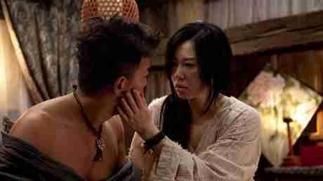Ambientato nei primi anni Quaranta in un remoto villaggio del sud-ovest della Cina, il Villaggio della Longevità, famoso sin dalla Dinastia Qing in tutto il paese per i suoi ultra centenari (si registra che il più longevo abbia vissuto per 119 anni e 3 giorni), Design of Death si apre sulle vie di montagna strette e dissestate dove un camioncino percorre in salita la montagna mentre un gruppo di scalmanati si agita a bastonare un sacco chiuso e poi scaraventarlo giù per una gola. Ad incrociare il camioncino una motoretta che sta percorrendo la strada di montagna in discesa e che si ritrova il sacco gettato giù sul suo percorso. Niu Jieshi, l’uomo nel sacco, viene liberato dal passeggero che viaggia sulla motoretta, un medico. L’incontro è breve perché Niu Jieshi, incredibilmente incolume, ritorna al Villaggio per sfidare il gruppo di bulli che lo ha malmenato. La terra trema. E ci troviamo dopo 13 mesi con il medico in viaggio verso il Villaggio della Longevità per verificare che la strana malattia che si dice abbia riportato dei morti non si diffonda danneggiando il buon nome e la fama del Villaggio. Il medico ritrova Niu Jieshi steso su una bara proprio sulle montagne. Lo riporta al Villaggio per dargli assistenza, ma s’imbatte nel clan che gli impone di riportare indietro il corpo perché convinto che sia la causa dell’epidemia. Il medico esamina da vicino Niu Jieshi, ma non riscontrando nessun problema fisico decide di ritornare al Villaggio della Longevità per scoprire la causa della sua morte. Il medico, adesso nel ruolo di investigatore, per presentare il rapporto ai suoi superiori ricostruisce episodi della vita di Niu Jieshi grazie al piccolo Niu e così quello che può essere successo.
Niu Jieshi, figlio di un venditore ambulante, è stato adottato alla morte del padre dal clan Niu, ma sin da subito si è rivelato la pecora nera del Villaggio, incapace di rispettare regole tradizioni e buone maniere. I suoi scherzi e le sue bravate sono motivo di scompiglio e disapprovazione: dall’interruzione della cerimonia sacrificale in onore del Nonno ultracentenario al bagno nel pozzo dell’acqua sacra al Villaggio, dallo spiare i parenti nelle loro performance amorose all’umiliazione in pubblico dello zio che cambia il nome di famiglia perché sia di buon auspicio, dall’afrodisiaco che sparge nelle acque del pozzo creando imbarazzo in tutto il Villaggio per aver scatenato una lussuria contagiosa alla sua relazione con la vedova Ma. Il sindaco del Villaggio decide che è tempo di prendere misure drastiche per liberarsi di Niu Jieshi, chiamando al Villaggio il Dottor Niu, che ha studiato per tanti anni all’estero e che escogita per loro un piano diabolico e mortale.
Dopo Cow, in competizione nella sezione Orizzonti alla Mostra del Cinema di Venezia 2009, il regista Guan Hu ritorna a lavorare con il popolare attore comico Huang Bo, che ritroviamo anche nel film dell’anno, Lost in Thailand di Xu Zheng, campione d’incassi di tutti i tempi in Cina popolare, secondo solo ad Avatar di James Cameron. Design of Death affida ai flashback e alle storie non dette la composizione di un puzzle che solo qualcuno alla ricerca della verità vuole affrontare, perché nella storia del film l’unico fatto non soggetto a interpretazione è che qualcuno sia morto. Il titolo originale in cinese è ancora più preciso in questo senso: letteralmente, “Uccidere un essere vivente”. Guan Hu mette al centro della storia il personaggio scomodo in evidente contrasto con la comunità, la società ligia a tradizione cultura e regole che possano aver avuto un loro valore ma che perdono di significato nel tempo perché refrattarie a rinnovarsi. La pecora nera, non rispettoso delle tradizioni e delle regole, incapace di adeguarsi alle buone maniere del vivere sociale. Si attribuisce il suo fare all’essere un estraneo perché non appartenente al clan da legami di sangue. La sua individualità deve essere allontanata per il bene e il futuro della comunità stessa. Ironicamente questa decisione viene presa dai capi del Villaggio quando il portentoso afrodisiaco mette letteralmente a nudo la lussuria irrefrenabile di tutti gli altri. La storia, ambientata nei primi anni Quaranta, in realtà non fa riferimento a nessun momento storico ben preciso, solo cronologicamente il più vicino alla realtà di oggi, nella vecchia Cina.
-
The Guillotines
23 Apr 17:25 Andrea LAU Hong Kong 1h 52m 2012 Teatro Nuovo 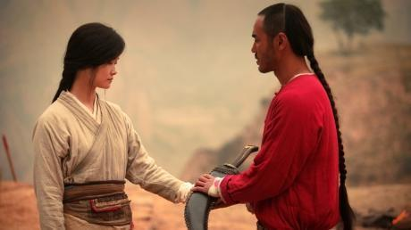The Guillotines non fa in tempo a cominciare che il regista Andrew Lau si affretta a presentare al pubblico i protagonisti con uno sfoggio di azione folgorante. A entrare in battaglia tra fiamme e lame volanti sono sette membri delle Ghigliottine, uno squadrone della morte segreto della dinastia Quing creato al fine di eseguire gli ordini dell’imperatore e specializzato nell’uso della ghigliottina volante per far fuori i bersagli. Questa notte il loro avversario è Wolf (Huang Xiaoming), un profeta di origine Han la cui comunità di seguaci, i cosiddetti Herder, è considerata una grave minaccia dall’imperatore manciù Qianlong (Wen Zhang).
Le Ghigliottine hanno ricevuto l’ordine di catturare Wolf vivo e all’inizio tutto procede come da copione. Ma quando arriva il giorno dell’esecuzione, Wolf mette in atto una fuga clamorosa e anche un membro, femmina, della squadra, Musen, scompare. In risposta il comandante delle Ghigliottine (Jimmy Wang) manda sei guerrieri a vendicarsi e a riprendere il corpo di sua figlia Musen, che crede morta. I sei sono scortati da Haidu (Shawn Yue), una guardia imperiale che ha in serbo un piano che potrebbe decretare questa missione come l’ultima delle Ghigliottine.
A questo punto i fan delle pellicole precedenti caratterizzate dall’arma distintiva delle Ghigliottine – si veda fra gli altri il classico La ghigliottina volante (1974) dei Fratelli Shaw e la bizzarra pellicola, gravitante attorno a un torneo, Master of the Flying Guillotine (1976) – potrebbero stupirsi per l’andamento impresso a questo film da Lau e dai suoi sceneggiatori. Dopo la sequenza di apertura le apparizioni dell’arma sono limitate e, se le scene di azione non finiscono certo qui, la storia nel suo complesso prende direzioni inattese e ambiziose. Si scopre che in alcune sfere del regime Qing le Ghigliottine sono viste come un sordido segreto da cancellare a poco a poco; uno sviluppo, questo, che lascia il manipolo di assassini a doversela cavare da soli, lontani dal sistema che li ha creati affinché non pensassero ad altro che al loro lavoro.
Nel frattempo il personaggio di Wolf e il suo mondo circostante introducono tematiche pressoché religiose e presentano l’etnia Han, perseguitata dal dominio manciù. L’aspetto di Wolf è inequivocabile, con la barba e le vesti che lo fanno assomigliare a Gesù, e le immagini bibliche si susseguono nelle scene in cui lui e gli Herder sono protagonisti. Intanto la storia precedente di Haidu e Leng (Ethan Ruan), comandante di battaglia delle Ghigliottine, rafforza i temi della fratellanza, della lealtà e del tradimento, concetti che insieme alla musica dei titoli di coda rimandano al film sulle triadi di Lau del 1996 Young and Dangerous, senza peraltro tralasciare il messaggio sull’armonia e sulla costruzione della nazione in chiusura.
Proprio come la sceneggiatura, anche la regia di Lau abbandona i canoni tradizionali dei film epici in costume per offrire alcune sorprese. Le classiche scene di eserciti fanno la loro comparsa verso la fine, ma prima le sequenze di azione risultano fortemente stilizzate, con variazioni di velocità, esplosioni, sguardi accesi e un’inquadratura curiosamente high-tech della ghigliottina volante. Lau condisce il film con momenti di estrema violenza, come quando Wolf vuole insegnare a un membro delle Ghigliottine prigioniero come ci si sente nel ruolo di vittima dei soprusi. Le location spaziano dai corridoi bui del palazzo di Pechino e del quartier generale delle Ghigliottine alle spettacolari catene montuose e ai campi lussureggianti, tutti filmati con un movimento continuo ma fluido della macchina da presa. Tra gli interpreti, Wen Zhang e Jimmy Wang offrono delle belle interpretazioni, fin troppo brevi, mentre Chris Lee gestisce con perizia una importante trasformazione di ruolo e infine Ethan Ruan e Shawn Yue si misurano con personaggi complessi e tormentati. Il catalizzatore principale dell’attenzione resta tuttavia Huang Xiaoming, che fa sentire la sua presenza con quello che è semplicemente uno dei personaggi protagonisti più insoliti e originali che negli ultimi anni hanno impreziosito i grandi schermi di Hong Kong.
-
Ip Man - The final fight
23 Apr 20:00 Herman YAU Hong Kong 1h 41m 2013 Teatro Nuovo 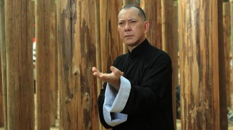L’infilata di pellicole sul maestro di arti marziali Ip Man, esplosa nel 2008 con Ip Man di Wilson Yip, non dà segni di tregua. Nel 2010 Ip Man 2 di Yip ha portato avanti la rappresentazione cinematografica ispirata alla storia di Ip, il fondatore della scuola wing chun di kung fu, e nello stesso anno Herman Yau ha sfornato un bel prequel con The Legend Is Born – Ip Man. All’inizio di quest’anno anche The Grandmaster di Wong Kar-wai ha riportato Ip sul grande schermo e adesso Yau è tornato con Ip Man – The Final Fight, un film di dimensioni più ridotte, che traghetta la storia di Ip Man verso nuovi territori.
Lo spettatore stavolta incontra Ip, ora interpretato da Anthony Wong, nel 1949 al suo arrivo a Hong Kong dopo aver lasciato Foshan, la sua città natale nel sud della Cina. Ben presto inizia a insegnare il wing chun in una scuola con un tetto di fortuna e richiama un nuovo gruppo di seguaci. Ip insiste con i suoi alunni sulla virtù e non vuole che si azzuffino per la strada, ma le tensioni crescono quando nasce una rivalità con la scuola locale di kung fu della Gru Bianca. Quando si arriva a un’epica prova di forza nella famigerata Città Murata di Kowloon, a Ip non resta che fare appello a tutto il proprio talento e assicurare i gangster alla giustizia.
Quando si tratta di esibizioni di kung fu in Ip Man – The Final Fight, Yau non delude, anche con star abitualmente poco note per la loro abilità nelle arti marziali. Il primo combattimento tra Wong e l’attore Eric Tsang, nei panni del gioviale maestro della Gru Bianca, si rivela una prova magistrale di cinema di arti marziali, che unisce un gradevole brio alla coreografia ad alto impatto. La danza del leone è lo sfondo per un’altra gragnola di scazzottate e il finale spietato nella Città Murata, con il campione di azione Xiong Xin-xin che traspira minaccia in qualità di avversario principale, inserisce uno scenario di boxe clandestina e si consuma nel bel mezzo di un violento tifone nel 1962.
Ip Man – The Final Fight, però, non è soltanto una festa delle arti marziali. A differenza dei primi film diretti da Yip, incentrati sulle grandi battaglie e su un nazionalismo insistito, i film su Ip Man di Yau si soffermano più a lungo sul personaggio di Ip. I momenti di tranquillità con la famiglia e i discepoli, così come il rapporto dileggiato tra Ip e una cantante (Zhou Chuchu), inquadrano meglio l’uomo e il suo pensiero, e il coinvolgimento di Ip Chun, figlio di Ip, nella produzione, alla stregua del precedente film di Yau del 2010, ispira credibilità. Anthony Wong, collaboratore di lungo corso di Yau, apporta un grande senso di dignità e di maturità al ruolo di Man e coglie alla perfezione il carattere sobrio di Ip durante gli ultimi anni di vita. Wong è accompagnato da una comunità di studenti interpretati da Jordan Chan, Gillian Chung, Timmy Hung e da artisti marziali quali Marvel Chow e Jiang Luxia, mentre Anita Yuen appare in scene più sentimentali come moglie di Ip e Zhou diventa il punto focale di un successivo e più ambiguo rapporto.
Anche la nostalgia e la storia occupano un posto di tutto rispetto nel film, che rimbalza attraverso una serie di frammenti del passato a Hong Kong – l’afflusso degli immigrati dal continente, i sindacati e le rivolte, la corruzione della polizia – per creare il senso dell’epoca trattata e per trasmettere un’apprezzabile attenzione all’ambito locale. La fama di Ip deriva in parte dal fatto di essere stato il maestro di Bruce Lee da bambino, e anche questo merita un accenno più avanti nella storia grazie allo scomodo incontro con la giovane star che torna dall’America. Anche alcuni aspetti tipici del melodramma hongkonghese degli anni Cinquanta e Sessanta, come il personaggio della cantante e la scena di una coppia che vuole vendere il figlio, fanno il loro gradito ingresso e il ritratto della città vecchio stile viene riprodotto con l’ausilio di un nuovo e grandioso set costruito a Foshan, completa di monumenti storici ricreati. Se Ip Man – The Final Fight non avrà certo l’ultima parola in fatto di storie per il grande schermo ispirate alla vita di Ip (al momento è in lavorazione un film in 3-D), comunque si contraddistingue per l’immagine fresca e diversa non soltanto del maestro delle arti marziali Ip, ma anche della città che egli chiamava casa.
-
The Complex
23 Apr 22:00 NAKATA Hideo Japan 1h 46m 2012 Teatro Nuovo Spuntati come i proverbiali germogli di bambù dopo un temporale negli anni del boom postbellico, quando erano reclamizzati come zone residenziali ideali per la middle class in ascesa, i danchi (progetti di edilizia popolare) hanno poi acquisito un’immagine piuttosto cupa, via via che i primi che erano stati costruiti diventavano decrepiti e marcivano e i loro abitanti traslocavano o passavano a miglior vita. Non è quindi sorprendente che il maestro dell’horror Nakata Hideo se ne sia servito per ambientarvi The Complex (Kuroyuri Danchi), il primo film del suo genere caratteristico dopo Kaidan del 2007 (sebbene quello non fosse un tipico J-Horror bensì un omaggio ai tradizionali film di fantasmi).
Il danchi che dà il titolo al film appartiene a quella stessa specie di abitazioni malsane, cadenti e semideserte che ci sono familiari da Dark Water (Honogurai Mizu no Soko kara, 2003) di Nakata, un classico del J-Horror su una mamma single e la sua bambina di sei anni che vanno a vivere in un condominio raccapricciante e imbevuto d’acqua che poi risulta anche infestato dai fantasmi. Stavolta l’azione è incentrata su Asuka (Maeda Atsuko), un’infermiera tirocinante che si trasferisce nel Kuroyuri Danchi (“Condominio del Giglio Nero”) con madre, padre e un fratellino carino.
Prima di sistemarsi nella nuova casa, però, sente strani rumori provenienti dalla porta dell’appartamento a fianco. Preoccupata che il vicino, un anziano che abita da solo, possa essere in difficoltà, trova il coraggio di avventurarsi in quella topaia che è il suo appartamento e scopre che è passato a miglior vita. I rumori, però, non accennano a smettere, come del resto altri episodi strani.
Col timore che lo spirito dell’anziano possa essere alla ricerca di vendetta, dal momento che lei non ha risposto subito alle sue richieste di aiuto, Asuka va da Sasahara (Narimiya Hiroki), un uomo che fa le pulizie e che lei aveva già incontrato nell’appartamento del vicino. Sasahara le dice che i morti abitano in un regno senza tempo e le raccomanda di non avere contatti con loro, ma le offre anche il suo aiuto. La ragazza trova conforto anche nel gioco con un bimbo solitario che abita lì vicino e che ha più o meno l’età del suo fratellino, ma il bimbo, come del resto molte altre cose nella sua vita, non è esattamente quello che lei pensa che sia.
Gran parte di ciò che accade da questo momento in poi risulterà familiare al pubblico a cui sono piaciuti Dark Water e altri horror che comunicano terrore non attraverso spaventi del tipo “scatola a sorpresa” bensì attraverso un lento accumularsi di particolari che minano la nostra fiducia (o fede) nella razionalità del mondo materiale, in cui i fantasmi sono poco più che creazioni di una mente superstiziosa. In altre parole, il film inizia a condurci in una realtà alternativa e antica, dove i morti irrequieti invadono le anime dei vivi.
Nakata è un vero maestro in queste cose, anche se in The Complex lui non è alla ricerca di un nuovo territorio, ma piuttosto sulla strada del ritorno verso un Giappone in cui la modernità maschera una struttura tradizionale di credenze che si sono rivelate estremamente durature. Asuka e Sasahara si mantengono in contatto al cellulare, ma quando una forza d’oltretomba minaccia di sopraffarla, lui fa ricorso a una sciamana e ai suoi accoliti per esorcizzare tale forza.
Nakata ha anche trovato una Asuka perfetta in Maeda Atsuko, che un tempo era una pop star della band femminile AKB48 e che è diventata una richiesta attrice cinematografica, a partire dal ruolo di una studentessa disturbata nel dramma di formazione di Ichikawa Jun How to Become Myself (Ashita no Watashi no Tsukurikata, 2008). Maeda si esibisce con un’insolita convinzione nelle consuete urla a occhi sbarrati, ma dove eccelle veramente è nella transizione di Asuka da una normalità gentile (lei è il tipo di ragazza capace di scoccare un sorriso luminoso a un ragazzino dall’aria sinistra in un parco giochi deserto) all’intorpidimento dettato dal terrore.
Questa transizione è talmente naturale e ben fondata che, nonostante l’abisso che separa questi suoi due modi di essere, possiamo vedere i segni dello spettro senza vita che è destinata a diventare nel suo vispo io precedente, a partire dal suo attaccamento un po’ bizzarro per un vecchio orologio fermo da tanto tempo.
Non c’è niente o nessuno, da un disperato Sasahara (che è alle prese con i suoi propri demoni) a un solerte esorcista, che possa riportare indietro quell’io? Nel mondo spietato di Nakata, non bisognerebbe mai fare una promessa a un fantasma se non si è pronti a mantenerla.
-
-
Wednesday 24 April 2013
-
Touch of the light
24 Apr 09:15 CHANG Jung-chi Taiwan 1h 50m 2012 Teatro Nuovo Taipei, oggi. Huang Yu-hsiang, cieco dalla nascita, con due genitori che gestiscono un’attività florovivaistica nella campagna taiwanese, è un pianista di talento che si trova per la prima volta lontano da casa quando si reca nella capitale per frequentare l’università. È il primo studente cieco a frequentare la facoltà di musica dell’ateneo, e i primi giorni la madre è lì ad aiutarlo, mentre il suo amichevole compagno di stanza Chu Tzu-ching sogna di metter su una band tutta sua. Vicino all’università, in un chioschetto che vende succhi di frutta, lavora Chieh, malgrado la madre spendacciona la assilli perché si trovi un lavoro migliore. Invischiata in una relazione insoddisfacente con un ballerino di rap, Chieh sogna di dedicarsi seriamente alla danza moderna e alla fine si iscrive ad alcuni corsi gratuiti. Yu-hsiang e Chieh si incontrano per la strada, un giorno, quando lei lo aiuta a trovare una scuola elementare dove deve dare lezioni di musica, e si ispirano a vicenda per realizzare i loro sogni.
Con i due protagonisti che rimangono per tutto il film all’interno dei binari di un’amicizia platonica, Touch of the Light è più un film di amicizia che d’amore, commovente e anticonformista – ciò che i cinesi chiamano un film “di ispirazione” – dalla trama quasi inconsistente ma che riesce a tenere vivo l’interesse per quasi due ore, basandosi esclusivamente sulle prove d’attore e la regia. Questo primo lungometraggio del regista poco più che trentenne Chang Jung-chi è lo sviluppo del suo precedente cortometraggio (37 minuti) The End of the Tunnel, interpretato dagli stessi attori: il pianista, non vedente anche nella vita reale, Huang Yu-hsiang e l’attrice franco-taiwanese venticinquenne Sandrine Pinna (Candy Rain, Yang Yang). È un film che sprona a seguire i propri sogni, nel quale il pianista lascia la casa in campagna per frequentare l’università a Taipei e incoraggia la giovane commessa di un chiosco di spremute a proseguire la carriera di ballerina; e riesce perlopiù a non sconfinare nel melodramma sdolcinato pur abbozzando un’attrazione spirituale tra i due diversissimi protagonisti.
Fino a circa metà film i due protagonisti non si incontrano nemmeno. La sceneggiatura alterna scene in cui Huang (che interpreta una versione di se stesso) si ambienta all’università con l’aiuto della madre (un’amabile interpretazione, piena di supporto ottimista, di Lee Lieh, la produttrice di Monga e Jump Ashin!) ad altre in cui vediamo Chieh/Pinna con il fidanzato che tiene il piede in due staffe e la madre che sperpera denaro in prodotti di bellezza in offerta speciale. Quando i due si scontrano per strada, è l’incontro di due menti: lei lo libera dalla prigione della sua cecità mentre lui la libera dalla prigione della sua vita quotidiana.
È un soggetto fantasioso e piuttosto scarno che si regge bene sulle sue stesse basi, grazie alla macchina da presa mobilissima del direttore della fotografia francese (ma nato in Spagna) Dylan Doyle, che conferisce al film una tensione realistica invece di un sapore di saccarina. L’esperienza di Doyle negli spot pubblicitari e nei videoclip fa capolino ogni volta che il film sviluppa il suo motivo ricorrente più audace: quando ritrae visivamente il legame tra il mondo di Huang, fatto di tatto e di udito, con il mondo cui aspira Chieh nella danza, fatto di sensazione pura e di volo in libertà (il titolo cinese significa “Volo illuminato da dietro”) Quando il film alterna le immagini di Huang e del suo gruppo che suonano in un concorso a Taipei e quelle di Chieh che si esibisce in un assolo di danza durante un provino a Hong Kong è un momento davvero suggestivo, in cui la musica e le immagini si fondono per collegare i personaggi.
Pur non essendo ancora un’attrice compiuta, Pinna è qui perfetta in un ruolo che sembra fatto apposta per il suo personaggio indipendente. Tuttavia anche le ottime riprese, che evitano di inquadrarla a figura intera, non riescono a nascondere il fatto che lei non è una ballerina, diversamente da Huang, che è un vero pianista e lo dimostra. Questo squilibrio indebolisce il lato realistico del film, nonostante l’aspetto eurasiatico di Pinna sottolinei gradevolmente il fatto (mai affermato in modo esplicito) che anche lei, come Huang, è una specie di outsider. Le interpretazioni degli attori di contorno sono piene di calore e venate di comicità, con una noncuranza molto taiwanese e il montaggio dello sceneggiatore Nyssa Li è scorrevole.
-
EunGyo
24 Apr 11:10 JUNG Ji-woo South Korea 2h 9m 2012 Teatro Nuovo EunGyo è tratto da un romanzo pubblicato dallo scrittore sessantaquattrenne Park Beom-shin nel 2010, un’opera dai toni riflessivi ma al tempo stesso sensazionale per il suo argomento. Per questa ragione hanno attirato l’attenzione del pubblico tanto il romanzo quanto il suo adattamento cinematografico del 2012. La storia ruota quasi esclusivamente intorno ai rapporti intensi e incrociati dei tre protagonisti. Lee Jeok-yo è un famoso e stimato poeta settantenne che vive solo in una grande casa fuori città. La persona che gli è più vicina al mondo è uno dei suoi ex studenti, un uomo di nome Seo Ji-woo che lo assiste in diversi modi e passa gran parte del tempo a casa sua, perseguendo nel frattempo la sua personale carriera letteraria. La sua devozione per l’ex insegnante sembra eccezionalmente forte, ma si percepisce anche un fondo di gelosia per il talento superiore del poeta. In questo mondo fa il suo ingresso Eun-gyo, una ragazza diciassettenne proveniente da una famiglia problematica che sta cercando un lavoro part-time. Con grande sorpesa di Seo Ji-woo l’anziano acconsente ad assumerla e lei inizia ad andare da lui regolarmente a fare i lavori di casa.
L’ingenua Eun-gyo trova un po’ di conforto in casa del poeta e ben presto sviluppa una curiosa fascinazione nei confronti dell’anziano. I due diventano amici, in un certo senso. Per quel che riguarda l’uomo, la vista quotidiana del corpo giovane di lei diventa una gioiosa distrazione, tanto da iniziare a fantasticare su di lei. Un giorno, in segreto, Lee inizia a scrivere un romanzo intitolato EunGyo.
Il film EunGyo è il quarto lungometraggio del regista Jung Ji-woo, famoso soprattutto per la sua sconvolgente opera prima, Happy End (1999), interpretata da Jeon Do-yeon e Choi Min-sik. Sin dall’inizio, lo stile filmico controllato ma intenso di Jung sembrava adatto a quest’opera, sulla quale ha certo lasciato la sua impronta. Il film tende a dividere gli spettatori, attirandosi grandi lodi e critiche caustiche, in parte per il soggetto controverso, ma anche perché c’è qualcosa nello stile del film che provoca lo spettatore in modo ambivalente. Comunque, che voi lo amiate o lo odiate, vi sarà difficile dimenticare questo film.
Un’altra questione che ha sollevato un certo dibattito è stata la scelta di scritturare l’attore trentacinquenne Park Hae-il (War of the Arrows, The Host) per interpretare il settantenne Lee Jeok-yo. Park è un attore di grande talento che fa del suo meglio sotto uno speciale makeup, per il quale pare ci volessero otto ore tra metterlo e toglierlo. Di certo i produttori non volevano privarsi dell’opportunità di inserire un po’ di potere divistico nel progetto, e forse hanno percepito che gli spettatori potevano essere meno schizzinosi riguardo alle allusioni a Lolita con Park nel ruolo del protagonista. Tuttavia è inevitabile che gli spettatori che conoscono la sua faccia siano continuamente consapevoli della sua presenza sotto il trucco, mentre se fosse stato usato un attore più anziano, sarebbe forse stato più facile immergersi nella storia.
C’è però una cosa che mette d’accordo i sostenitori e i detrattori del film: l’esordiente Kim Go-eun, che interpreta Eun-gyo, è una scoperta rilevante. Con un aspetto particolare e una presenza scenica che si percepisce come più istintiva che intenzionale, Kim tiene la scena per ogni singolo secondo in cui è presente, e la sua interpretazione è stata oggetto di lodi sperticate, tanto che si è portata a casa tutti i premi come miglior attrice emergente nelle numerose cerimonie di premiazione coreane che si tengono alla fine di ogni anno. Sembra probabile che sentiremo molto parlare di lei in futuro.
EunGyo non ha lasciato un grande segno al botteghino, ma ha lasciato il segno su molti dei suoi spettatori. Il film si fissa nella memoria per la sua tensione lenta e crescente e per il modo audace in cui mette insieme tutti i bandoli sciolti della matassa in un finale sbalorditivo. I bei libri non sempre danno come risultato dei bei film, ma in questo caso il libro ha lasciato in eredità al cinema coreano un’opera unica e decisamente peculiare.
-
Fresh Wave II
24 Apr 14:00 Hong Kong 1h 16m Teatro Nuovo SUCH A GIRL LIKE ME
Man Uen-ching
2012. 16' - Student Division, special mention
Alla presenza del regista
BEFORE FRIDAY
Enoch Cheng
2012, 30' - Open Division
Alla presenza del regista
HEARTBEAT 48
Leo Lam
2012, 30' - Open Division
-
The way we dance
24 Apr 15:25 Adam WONG Hong Kong 1h 50m 2013 Teatro Nuovo 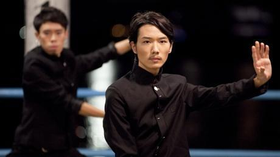Nell’arco dello scorso anno gli spettatori in cerca di nuovi talenti nel cinema hongkonghese non hanno avuto vita facile dinanzi allo scarso numero di giovani attori presenti in posizioni di rilievo nei film importanti; particolarmente risicate erano poi le opportunità per le attrici di fronte ai talenti della Cina continentale nelle coproduzioni. È quindi un sollievo vedere come lo sceneggiatore-regista Adam Wong abbia fatto crescere con tanta dedizione dei giovani promettenti nel suo The Way We Dance, una pellicola allegramente iperpop e piaciona.
La protagonista è Cherry Ngan, nella parte di Fleur, una matricola universitaria con la fissazione dell’hip-hop. Durante la settimana di orientamento si unisce al gruppo di ballo BombA dell’università dopo aver stracciato il leader Dave (Lokman Yeung) con la sua bravura. BombA resta sempre dietro al gruppo veterano dei Rooftoppers, e bisogna allenarsi in vista di una nuova gara. Ma le prove di BombA vanno a gambe all’aria quando uno dei membri della squadra, Rebecca (Janice Fan), vuole mettersi in luce a tutti i costi e possibilmente mandare a monte la storia d’amore sbocciata tra Fleur e Dave. Come se niente fosse Fleur pianta in asso BombA per aggregarsi al Tai Chi Club, capitanato da un tipo tutt’altro che alla moda, Alan (Babyjohn Choi). Fleur segue da vicino Alan e il programma di visite del suo gruppo di tai chi, e intanto mette insieme alcune idee che potrebbero tornarle utili nel caso in cui decidesse di tornare di nuovo in scena con i Bomba.
Grazie al connubio fra amori giovanili e una visione esuberante e adatta a tutti delle rivalità tra gang, The Way We Dance diverte con facilità nonostante la sceneggiatura inconsistente. La chiave di lettura della gara è puramente simbolica e funge da motore per la storia, mentre l’enfasi va ricercata nelle tematiche benintenzionate dello sforzo per il conseguimento degli obiettivi personali, della vittoria sulle avversità e del dare il massimo di se stessi. Si tratta di un film senza pretese, positivo e di grande richiamo per la sua semplicità, nonché un facile mezzo con il quale il regista Wong può esprimere la propria creatività.
Una volta iniziato il ballo, Wong si avvale della coreografia e dell’attività atletica disponibili per creare effetti spettacolari, non ultimo quando i Rooftoppers vengono presentati all’interno di un capannone industriale in un furore parossistico di beatboxing, breakdance e parkour. La coreografia orchestrata da Shing Mak fluisce con regolarità e sorprende, anche se alcuni dei movimenti più vistosi si potevano riservare per un finale più esaltante, ed è raro che il cinema hongkonghiano si permetta simili esibizioni, soprattutto nell’analisi di una scena di ballo.
Altrove la regia di Wong è leggera e giocosa, come prevedibile, considerati i suoi primi film, e ci delizia con alcuni eleganti tocchi, da uno sfoggio di magia inverosimile alle interpellazioni rivolte ai fan delle pellicole di Hong Kong.
Wong si inserisce anche nella tendenza attuale del cinema hongkonghese verso una maggiore sensibilità locale, facendo un uso intelligente di location e luoghi di interesse storico, nonché di tematiche quali la lotta contro le privazioni, che possono avere risonanza nel contesto delle preoccupazioni socio-economiche della città.
Fra gli interpreti, Cherry Ngan appare indubbiamente dotata per il ballo e brillante e sciolta nel suo primo ruolo da protagonista, benché le richieda molti momenti drammatici. L’attore teatrale Babyjohn Choi è fantastico nelle vesti di un simpatico imbranato come Alan ed è convincente nei panni di mago del tai chi, mentre Janice Fan colpisce a mano a mano che il suo personaggio diventa sempre più interessante. Anche il breaker americano Tommy Guns Ly, nel ruolo di Stormy, leader dei Rooftopper, si distingue per il modo straordinario con cui supporta i temi del film, mentre alcune figure già affermate come Paul Wong appaiono a bordo campo. Le doti recitative degli altri ballerini sono più casuali, ma il successo di The Way We Dance nel mettere in luce nuovi talenti e approfondire un genere inusuale va comunque riconosciuto. Con gli incentivi agli investimenti previsti per l’anno prossimo grazie a diverse iniziative annunciate in marzo a favore di piccoli film di portata locale, si spera che altri lavori simili possano dare vita a una nuova generazione di talenti cinematografici nazionali, promuovendo così una serie di pellicole più coraggiose.
-
Home
24 Apr 17:20 C. M. SAKVEERAKUL Thailand 2h 1m 2012 Teatro Nuovo 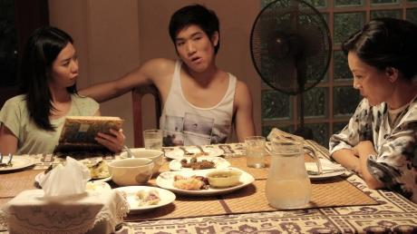È stato il più giovane tra i registi promettenti nell’industria cinematografica dopo il suo secondo e terzo film, 13 Beloved (2006) e The Love of Siam (2007). Dopo una lunga pausa, cinque anni, Matthew Chookiat Sakweerakul ritorna con un’evocazione di amori e di memorie, Home – un film ancora più personale di The Love of Siam.
Ambientato a Chiang Mai, la città natale di Sakveerakul, Home analizza le forme d’amore di tre coppie appartenenti a generazioni diverse: l’amore che sboccia tra due compagni di liceo, l’amore post-mortem di una vedova e un tacito confronto tra una sposina e lo sposo. Si tratta di un film a episodio tenuto insieme dal luogo, dal dialetto, dal cast e dal tema. La maggior parte degli interpreti è di origini settentrionali e parla dialetti del nord. Tutti i personaggi sono connessi tra di loro, e mostrano anche di essere collegati alla famiglia di Sakveerakul. Home, quindi, può essere definito come il film di una comunità, che rispecchia la vita urbana di Chiang Mai, ma anche un film personale del regista.
Delle tre forme generazionali d’amore, la vita della vedova, Buajan, sembra essere la più sensibile e delicata. Dopo la morte del marito, deve dirigere la loro attività turistica e ogni altra cosa che veniva gestita da lui - oltre a dover contemporaneamente fare i conti con la sua solitudine e la sua sofferenza. Ovunque ci sono tracce del marito, dalle note scritte che usava per comunicare con gli altri durante le ultime fasi della sua vita alle lattine di birra vuote che ha lasciato in giro, e così via. Quindi per Buajan non è facile voltare pagina. Non esce mai di casa e porta avanti i suoi doveri di casalinga. Lei persino parla con il marito, ogni volta che ritrova una delle sue annotazioni; sembra che lui sia ancora lì, per sempre. L’attrice veterana Penpak Sirikul è molto efficace nei panni della vedova sola che non riesce a lasciarsi il passato alle spalle. Molti piccoli dettagli di grande effetto sono nascosti un po’ ovunque, e il legame tra moglie e marito commuove fino alle lacrime.
Nella seconda storia, l’amicizia tra due compagni di scuola nasconde un legame omosessuale. Uno è un ragazzo etero innamoratissimo di una ragazza più grande di lui, mentre l’altro prova per lui dei sentimenti che stanno sbocciando. La storia si svolge nell’arco di una notte e di un giorno, mentre i due ragazzi passano il tempo intorno alla scuola scattando foto ricordo. Non capiscono, o non si rendono conto dei loro sentimenti, e forse questo è l’inizio della storia d’amore che in seguito diventerà il film di Sakveerakul The Love of Siam.
L’ultima parte racconta un litigio tra due giovani prossimi alle nozze, che decidono di sposarsi nella città della ragazza.
Tutto dovrebbe andare per il meglio, fino a quando la sposina non incontra il suo ex fidanzato, e inizia a sentirsi insoddisfatta del piglio calmo ma autoritario del marito. Intanto riaffiorano anche i suoi vecchi sentimenti per l’ex fidanzato, e per gli sposini è il momento del loro primo e ultimo scontro.
Sakveerakul ricama con cura tutte e tre le parti, e attraverso tutto il film traspaiono elementi di grande delicatezza. Il buon montaggio, un’ottima fotografia, gli attentissimi movimenti di macchina e le gradevoli composizioni musicali convergono per conferire a Home un ritmo molto curato. Sakveerakul ha riversato in questo film tutto il suo affetto e la sua attenzione, in modo molto appropriato per i temi dell’amore e della memoria che ne costituiscono il filo conduttore.
-
See you tomorrow, everyone
24 Apr 20:00 NAKAMURA Yoshihiro Japan 2h 1m 2012 Teatro Nuovo I registi che battono e ribattono sullo stesso soggetto sovente si avvalgono dello stesso attore per incarnarlo. Kurosawa Akira assegnava a Mifune Toshiro il ruolo dell’eroe intenso in tutti i film sull’eroismo maschile, se non tradizionalmente macho. Itami Juzo sceglieva come protagonista la moglie Miyamato Nobuko per la parte della donna tosta che si imbarca con tipi belli e inaffidabili nelle varie commedie satiriche sugli eccessi del Giappone nell’epoca delle bolle speculative.
Similmente Hamada Gaku è diventato l’attore feticcio di Nakamura Yoshihiro, interpretando cinque film con il regista dopo il primo ruolo dell’ingenuo studente del college nella sua pellicola del 2007 The Foreign Duck, the Native Duck and God. Piccolino e con il viso da folletto, Hamada assomiglia più a un attore di The Hobbit che all’eroe del solito film commerciale giapponese.
Ma nell’ultima pellicola del regista, See You Tomorrow, Everyone (Minasan, Sayonara), si rivela anche perfetto, e non soltanto fisicamente, nei panni del “ragazzino” che in un mondo ostile si dimostra più temerario di quanto non sembri all’inizio, il tema ricorrente in molti film di Nakamura. Il suo personaggio è Satoru, che è cresciuto in un danchi, uno dei tanti complessi edilizi degli anni del boom del dopoguerra organizzati in comunità autonome. Si tratta della versione giapponese dei “paradisi dei lavoratori” occidentali, come illustra un vecchio cinegiornale sgranato con immagini di massaie felici che fanno la spesa tra una chiacchiera e l’altra e bambini allegri che imparano e giocano: ci sta tutto, nel danchi!
Ecco perché, quando nel 1981 un dodicenne Satoru (interpretato da un Hamada chiaramente adulto) comunica alla sempre paziente madre (Otsuka Nene) l’intenzione di trascorrere il resto dei propri giorni nel danchi e di non uscirne per andare a scuola, intuiamo in parte perché lei lo accetti, anche se la decisione non viene spiegata in modo esauriente.
Quando i suoi ex compagni di classe si mettono in marcia alla volta della nuova scuola, Satoru resta indietro, ma invece di vegetare davanti alla tv, intraprende un rigoroso regime di studio, allenamento di arti marziali nonché pattugliamento del danchi munito di clipboard per appunti, così da garantire la sicurezza dei vicini, mese dopo mese, anno dopo anno.
Sì, per quanto strambo, Satoru è anche un tipo simpatico, che aiuta un ragazzo effeminato (Nagayama Kento) vittima di bullismo scolastico. Ha anche i normali impulsi sessuali maschili tipici degli adolescenti, come dimostra quando la sbrigativa ragazza della porta accanto e il suo più intimo confidente (Haru) lo invitano a fare bagordi (rigorosamente controllati). A vent’anni trova anche una fidanzata, la dolce e carina Saki (Kurashina Kana), che condivide il suo desiderio di restare vicino a casa e gli procura il lavoro dei suoi sogni come garzone del burbero mastro fornaio (Bengaru) della pasticceria del danchi.
Ma mentre gli anni passano e il numero dei suoi ex compagni di classe scema dall’iniziale 107 (didascalie in sovrimpressione segnano il declino), il già piccolo mondo di Satoru a poco a poco si rimpicciolisce ancora di più. Ma ogni volta che cerca di scendere la lunga rampa di scale che porta al mondo esterno più grande, il panico lo blocca. Finirà per diventare un Robinson Crusoe urbano, abbandonato sulla sua fatiscente isola di cemento?
Tratta da un romanzo di Kubodera Takehiko, la sceneggiatura di Nakamura e Hayashi Tamio trova una risposta a questa domanda, che calza in modo perfetto, anche se non lampante, al personaggio e alla situazione di Satoru. Proprio come nel climax di Fish Story (visto al Far East Film 2009), Nakumura annoda tutti i fili della trama accuratamente imbastita in un finale rivelatore, questa volta in un “paradiso” molto diverso da quello intravisto nel cinegiornale di tanto tempo prima. Anche Satoru (soprattutto Satoru) non è più lo stesso.
-
The bullet vanishes
24 Apr 22:10 LO Chi-leung Hong Kong 1h 47m 2012 Teatro Nuovo 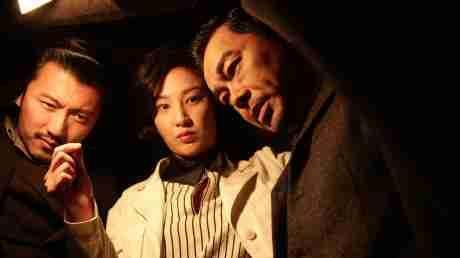Anche se trae la sua ispirazione dai celebri film su Sherlock Holmes firmati da Guy Ritchie, The Bullet Vanishes di Lo Chi-leung lascia un suo segno indelebile nel genere del poliziesco d’azione in costume. Lau Ching-wan interpreta l’epigono di Holmes, Song Donglu, un investigatore della Cina degli anni Trenta, che collabora con il poliziotto Guo Zhui (Nicholas Tse) per risolvere alcuni casi di omicidio nei quali sono implicate delle “pallottole fantasma” che sfuggono alle analisi forensi. Alcuni decessi che avvengono all’interno di una fabbrica di munizioni vengono imputati a una maledizione spettrale, anche se il proprietario della fabbrica, Ding (un beffardo Liu Kai-chi) e il corrotto capo della polizia Jin (Wu Gang) stanno sicuramente tramando qualcosa di losco. Guo e Song non credono alla superstizione come causa dei diversi omicidi. Insieme al giovane poliziotto Xiaowu (Jing Boran), l’intrepida coppia affronta il mistero con dedizione e con una giocosa capacità di usare stratagemmi al limite della correttezza.
Il comportamento eccentrico di Song e la sua propensione a sperimentare su se stesso diversi metodi di omicidio ne fanno in apparenza una copia dello Sherlock Holmes di Robert Downey Jr., ma c’è una storia dietro la scelta di Lau Ching-wan per il ruolo del bizzarro detective. Lau aveva già interpretato una versione più edulcorata dello stesso personaggio, in una versione più, nei film della serie Running Out of Time di Johnnie To, conducendo poi quello stesso archetipo in terreni più cupi e inquietanti con Mad Detective di To e Wai Ka-fai. L’investigatore impersonato da Lau nei primi anni Novanta in Thou Shalt Not Swear di Wellson Chin e nel suo sequel rappresenta forse il personaggio più simile all’Holmes di Downey Jr. che Lau abbia fatto, a parte il fatto che l’ha creato quasi quindici anni prima. Morale della favola: dire che il Song Donglu di Lau Ching-wan scimmiotta Hollywood è un giudizio affrettato.
Inoltre, The Bullet Vanishes è un film commerciale divertente e che funziona; e la chiave del suo successo è l’abbinamento dei due protagonisti, che si fronteggiano in modo splendido. Tse è più intenso del rilassato Lau e conferisce al suo poliziotto assetato di giustizia un’integrità decisa ma sfumata. Lau però è forse più convincente, perché esprime un’interpretazione carismatica e toccante malgrado sia chiamato a fornire alcuni spunti comici.
Ciascuno dei due attori lascia spazio all’altro quando è necessario e ciascuno assume il comando con eguale convinzione. Mini Yang (l’informatore Little Lark) è poco più che decorativo ma Yumiko Cheng (il medico legale del distretto locale) e soprattutto Jiang Yiyan (una carcerata per la quale Song nutre dei sentimenti) sono ottimi attori di contorno. The Bullet Vanishes presenta anche una trama abilmente costruita e dal ritmo elegante. Ogni mistero è presentato nel film con indizi rilevanti, e l’esposizione procede chiaramente attraverso le indagini dei personaggi, per non parlare dei necessari flashback che illustrano le loro deduzioni. Il film è punteggiato di dettagli forti, come le varie volte in cui si ricorre alla roulette russa; e quando saltano fuori dei punti deboli nella trama, o delle omissioni nella storia, il suo ritmo regolare appiana il tutto. La sceneggiatura di Lo Chi-leung e Yeung Sin-ling è brillante e veloce, ma a tratti impacciata. Anche il momento culminante della storia, un faccia a faccia all’ultimo sangue tra i due protagonisti, diventa troppo didascalico e teatrale ma è ampiamente compensato dalle ottime prove attoriali e dalla tensione ponderata di Lo.
L’ azione è messa in scena dall’action director Li Chung-chi con grande maestria; le sequenze più emozionanti non si trascinano inutilmente e non sono mai troppo sopra le righe. Allo stesso tempo però l’azione è iperrealistica in modo divertente (per esempio con il tiro di altissima precisione di Guo Zhui, o nell’occasionale sequenza al ralenti) e questi elementi si amalgamano bene con lo spiccato stile visivo e la riservata consapevolezza del film. Se a tutto questo si aggiungono la produzione di prima qualità e gli eccellenti effetti visivi, ecco il miglior film di Lo Chi-leung dai tempi del suo thriller Koma nel 2004. The Bullet Vanishes può mettere a dura prova la buona volontà di chi guarda, con i suoi molteplici picchi narrativi che si prendono gioco delle aspettative del pubblico muovendosi in direzioni che a molti non piaceranno, ma anche gli inesorabili colpi di scena finali spingono The Bullet Vanishes al di là di quei film mediocri per i quali è fondamentale compiacere il pubblico, e lo rendono un prodotto eccezionale tra i film commerciali di Hong Kong, e non solo.
-
Countdown
25 Apr 00:00 Nattawut "Baz" POONPIRIYA Thailand 1h 35m 2012 Teatro Nuovo 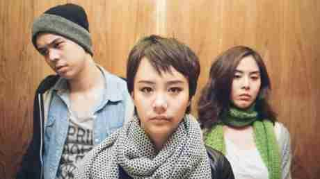Cosa vi aspettereste di ricevere da Gesù se venisse a casa vostra la sera di San Silvestro? Un sermone, un dolce, una benedizione che vi permetta di ricominciare da zero all’arrivo del nuovo anno? Forse no. Jesus, il Gesù di Countdown, distorce tutte le immagini sacre che conosciamo. Personaggio che va oltre le aspettative di chiunque, questo Jesus – che si pronuncia He-sus – potrebbe essere un burlone, uno psicopatico, un Redentore o un riflesso del vostro passato.
Stranamente, stavolta Gesù è uno spacciatore di droga con tanto di biglietto da visita. La sera di San Silvestro, tre viziati coinquilini thailandesi – Bee, il suo ragazzo Jack e Pam – nel loro appartamento di New York chiamano Jesus per farsi consegnare un regalo speciale. È la loro prima e ultima chiamata, a un numero di telefono recuperato da un mosaico di biglietti da visita stracciati, lasciati da un amico thailandese. L’ultima cifra però non si trova, devono tirare a indovinare. A prima vista sembra che abbiano trovato il Jesus che cercavano. Alle nove di sera Jesus suona alla porta: è un giovane sulla trentina, con i baffi e i capelli lunghi, sembra americano e non ha nessun accento. È un tipo divertente e socievole, così lo fanno entrare, chiacchierano e si divertono. Nell’attesa del conto alla rovescia, Jesus tira fuori dalla giacca una Bibbia. Gli amici lo fischiano, finché non apre la Bibbia. La stanza è piena di fumo e di risate, quando improvvisamente il campanello suona nuovamente. Nel panico più totale Jesus si precipita in bagno, pensando che sia la polizia, ma è solo il fattorino delle pizze e a Jesus non fa piacere che tutti si mettano a ridere. E’ allora che comincia il vero conto alla rovescia. Countdown, lungometraggio d’esordio di Nattawut Poonpiriya, evoca un teso espressionismo moderno. La sua trama potrebbe ricordare vari famosi thriller hollywoodiani ma Poonpiriya la confeziona sapientemente con un sofisticato tema di dualità – tra cristianesimo e buddhismo, convinzioni thailandesi e americane, tensione e dramma. I fatti vengono continuamente capovolti. In un primo momento, l’uomo di Dio è mostrato in stretta connessione con diversi simboli peccaminosi, quali droga, psicosi e crudeltà. Ma il suo improvviso cambiamento di identità, in seguito al quale si scopre che parla correntemente il thailandese (sempre senza accento) rivela che Jesus è in realtà un uomo di giustizia. Egli è venuto a chiedere ai tre peccatori di pagare i debiti del loro passato. Jesus è davvero un portatore del karma. Il giovane regista Poonpiriya sa come trovare il ritmo giusto per far procedere il film con la giusta tensione, e ordisce la trama in modo imprevedibile. Stuzzica ripetutamente pubblico e personaggi con un montaggio insolito e con i movimenti di macchina. In una scena in cui Jesus picchia e strangola Jack, minacciandolo in inglese americano, la macchina da presa si sposta improvvisamente intorno a Jesus – verso l’alto, verso il basso, poi gli gira attorno con movimenti circolari. Senza preavviso, Jesus inizia improvvisamente a parlare speditamente in thailandese e, proprio come i tre ragazzi, anche noi del pubblico siamo confusi sull’identità di questo Jesus. I sentimenti contrastanti combattono sempre l’uno contro l’altro. Nella maggior parte delle scene ci si sente tesi, poi, all’improvviso, tristi. Odiamo Jesus e stiamo dalla parte dei tre coinquilini, ma poi le nostre emozioni si trasformano all’improvviso quando vengono rivelati i loro peccati. Countdown è un film di sorprese, ben servito dall’uso sapiente del linguaggio filmico da parte di Poonpiriya e dalla superba recitazione degli attori principali. Il thailandese-americano David Assavanond sembra nato per il ruolo di Jesus: è altrettanto convincente come crudele psicopatico e come paladino della giustizia. In questo film Jesus e Assavanond sono moderni Redentori all’interno del nuovo ordine mondiale.
-
-
Thursday 25 April 2013
-
The Strangers
25 Apr 09:15 Lawrence A. FAJARDO Philippines 1h 37m 2012 Teatro Nuovo 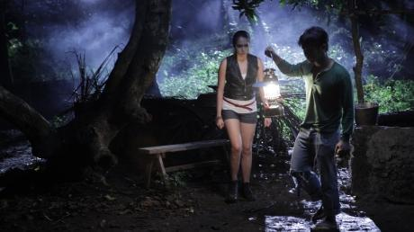Per il loro diciottesimo compleanno, i gemelli Pat e Max (Julia Montes ed Enrique Gil) partono come ogni anno per il loro viaggio di famiglia fuori città, verso la remota oasi di Murcia. Insieme a loro viaggiano i genitori Roy ed Evelyn (Johnny Revilla e Cherry Pie Picache), il nonno Pete (Jaime Fabregas), la sua badante Paloma (Janice de Belen) e l’autista di famiglia appena assunto, Toning (Nico Antonio). I membri della famiglia mettono da parte le loro differenze personali e si imbarcano nel viaggio, desiderosi di partire per la gita.
Mentre percorrono le strade dissestate della campagna, la loro felicità si interrompe bruscamente quando il loro pulmino investe una vecchia signora lungo la strada. Incerti sull’accaduto, i membri della famiglia si mettono a cercare il corpo, ma non lo trovano da nessuna parte. Con il corpo che non si trova, e protestando la loro innocenza, Roy chiede a tutti di salire velocemente sul pulmino per lasciare la zona. Il pulmino arranca silenziosamente lungo la strada polverosa, ma si ferma misteriosamente pochi minuti dopo nel bel mezzo di una zona boschiva…
Da quel momento in poi, mentre sta calando la notte, la famiglia viene perseguitata dalla sfortuna. Toning viene attaccato da una creatura sconosciuta, Roy e nonno Pete spariscono e il resto della famiglia rimane bloccata in mezzo al nulla. Persi e confusi, i restanti membri della famiglia restano uniti ma le cose volgono al peggio quando si rendono conto di essere intrappolati in un barrio pieno di gente misteriosa, capeggiata da Kapitan Tasyo (Art Acuna), la moglie Corazon (Tanya Gomez) e il figlio Crispin (JM de Guzman).
Mentre sono bloccati nel villaggio isolato, inizia una serie di attacchi di aswang (zombie/lupi mannari). Pat trova un alleato e un contatto sotto l’improbabile forma di Dolfo (Enchong Dee), un giovane enigmatico che gli abitanti del villaggio ritengono malvagio. Mentre l’attacco degli implacabili aswang continua, Pat e Dolfo, insieme a Max, Evelyn, Paloma e il resto degli abitanti del villaggio si battono per la loro sopravvivenza, nella speranza di superare la notte, vivi e non mezzi morti… Saranno gli zombie ad avere l’ultimo morso?
Con The Strangers il regista Lawrence Fajardo si cimenta per la prima volta con il cinema mainstream, in occasione del Metro Manila Film Festival 2012, dopo avere ottenuto il successo con film indipendenti come Amok (2011), e soprattutto Shackled (Posas, 2012), che ha attirato l’attenzione al festival Cinemalaya. Si tratta dell’ennesima variazione sul popolarissimo tema degli “aswang” (zombie/vampiri) nel cinema filippino, con più effetti digitali. Anche i forestieri smarriti nella foresta costituiscono un tema ricorrente di questo genere cinematografico.
-
The floating castle
25 Apr 11:00 INUDO - HIGUCHI Japan 2h 26m 2013 Teatro Nuovo Il piccolo gruppo di guerrieri che combattono eroicamente contro forze schiaccianti è sempre stato un elemento fondamentale della storia e della leggenda, fin dai tempi della battaglia delle Termopili e anche prima (i Neanderthaliani avranno di certo raccontato le loro storie di valorose battaglie contro gli uomini di Cro-Magnon numericamente più forti.)
Considerando che le storie di questo tipo funzionano benissimo da sempre con il pubblico cinematografico del mondo intero, Giappone compreso, è un po’ strano che l'assedio del Castello di Oshi del 1590, nel corso del quale cinquecento difensori tennero a distanza un esercito di 20.000 uomini, abbia ispirato un film solo di recente.
Ma, come mette in chiaro The Floating Castle, il film d’azione in costume di Higuchi Shinji e Inudo Isshin, alla testa dei difensori del castello non c’era John “Alamo” Wayne. Nella loro versione della storia, tratta dal romanzo di Wada Ryo, il signore locale, Nagachika Narita (Nomura Mansai), è un eccentrico spensierato che – in modo che non è per niente da samurai – si interessa ai contadini, con somma gioia loro e totale disprezzo dei suoi seguaci.
Quando il signore della guerra Hideyoshi Toyotomi e suoi generali pianificano la loro campagna contro il clan Hojo, di cui Nagachika è un alleato, si aspettano con sicurezza e disprezzo che il castello di Oshi e il suo stravagante signore si arrendano senza combattere (soprattutto dopo che un alto ufficiale del possedimento di Nagachika glielo conferma personalmente). Ma così non è, e la storia di come lui e i suoi samurai mettano in atto una strenua difesa è raccontata con colpi di scena sorprendenti e divertenti.
Nonostante questo materiale di partenza apparentemente ineccepibile, l’uscita del film – prevista in origine per settembre 2011 – è stata rinviata di quasi un anno dopo il terremoto e lo tsunami che hanno devastato il nord del Giappone l'11 marzo 2011. Il motivo: quando il generale dell'esercito assediante, Mitsunari Ishida (Kamiji Yusuke), scatena le acque di un fiume vicino per inondare i difensori, i muri d'acqua realizzati in computer graphics ricordavano sgradevolmente lo tsunami dell’11 marzo che ha spazzato via intere città: quelle scene di distruzione sono state giudicate troppo sconvolgenti per il pubblico locale, nel periodo immediatamente successivo al disastro. Quando il film alla fine è uscito in sala, nel novembre del 2012, è diventato un successo al botteghino, e ha incassato 2,84 miliardi di yen.
Per quanto spettacolari possano essere gli effetti speciali, sotto la supervisione dell’esperto di computer graphics Higuchi, il dramma umano e la comicità sono probabilmente più interessanti. I difensori del castello, da Nagachika all’impetuosa donna guerriera Chidori (Ashida Mana), a volte possono anche apparire esagerati o ridicoli, ma non sono affatto stereotipati, proprio come gli stratagemmi di Nagachika non appartengono al solito repertorio del signore feudale.
Inoltre, gli aggressori sono tenuti insieme a malapena dall'impetuoso Mitsunari, che è apparentemente sicuro della vittoria, ma in cuor suo paventa un imbarazzo che potrebbe distruggergli la carriera. In realtà gli aggressori finiscono quasi per ammirare alquanto i loro nemici esuberanti e intelligenti e uno di loro li fa divertire in un modo più inconsueto e divertente del solito, anche se non va a finire come si aspettavano. Come avrebbe detto Nagachika, basta che il tuo castello rimanga a galla…
-
Tiktik: The Aswang Chronicles
25 Apr 14:00 Erik MATTI Philippines 1h 42m 2012 Teatro Nuovo 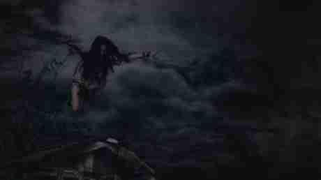Con i suoi occhiali scuri, Makoy (Dingdong Dantes) farà di tutto per riprendersi la fidanzata Sonia (Lovi Poe), che aspetta un figlio da lui. Si reca nella città natale di lei, la lontana e bizzarra Pulupandan, ma viene subito respinto dalla madre di Sonia (Janice de Belen). Stanca per la sua pigrizia e negligenza, anche Sonia rifiuta di incontrarlo, ma Makoy non è tipo da arrendersi. Con l’aiuto del padre di Sonia, Nestor (Joey Marquez), e del suo fedele aiutante Bart (Ramon Bautista), Makoy finge di andarsene dal misterioso villaggio, ma in realtà si ferma per fare una sorpresa a Sonia per il suo compleanno. Tuttavia, si mette nei guai con un gruppo di persone che si rivelano essere dei “tiktik”, o aswang, terribili creature mangia-uomini che hanno una predilezione per i feti che si trovano ancora nel ventre materno. Essi si infuriano con Makoy e sono affamati di vendetta. La sera del compleanno diventa un incubo, perché gli irrefrenabili Tiktik vogliono placare la loro sete di sangue e banchettare con il feto di Sonia! Inizia una battaglia feroce e impari nella casa di Sonia, tra Makoy e il suo gruppetto da una parte e gli innumerevoli Aswang dall’altra. Alla fine diventa un vero inferno… fino alla resa dei conti e alla redenzione finale. Con Tiktik: The Aswang Chronicles, Erik Matti fornisce un ulteriore esempio del suo dualismo creativo, tra i film di vampiri sanguinosi e implacabili, dove sembra non esserci limite alla violenza e al grottesco, e i suoi film più intimi e autoriali, come The Arrival (2010, visto a Udine), o il suo più recente Rigodon. Gli amanti dei film selvaggi e convulsi, ricchi di effetti speciali spettacolari e violenza sfrenata, ai limiti della parodia, si sentiranno in Paradiso – o all’Inferno!
-
Apolitical Romance
25 Apr 15:50 HSIEH Chun-yi Taiwan 1h 28m 2013 Teatro Nuovo 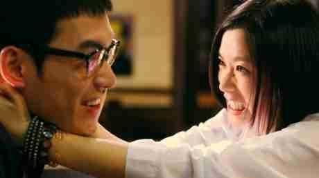Apolitical Romance è una commedia romantica interculturale di produzione cino-taiwanese, che commette pochi passi falsi e in pratica è l’opposto di Great Wall My Love (2011), di Emily Liu. In questo caso c’è una ragazza della Cina continentale che visita Taiwan e si innamora di un ragazzo del posto, il quale la aiuta a rintracciare il primo amore della nonna, dopo sessant’anni e rotti. Come nel delizioso film di Emily Liu, la trama è, fondamentalmente, solo un pretesto per raccontare il rapporto di una strana coppia. Romance, che si concentra maggiormente sulla coppia centrale, ha una struttura molto più semplice di Great Wall e, in ultima analisi, lo supera di misura grazie all’ottima alchimia naturale che si instaura tra i protagonisti, l’attrice cinese Huang Lu (anche produttrice esecutiva del film) e l’attore taiwanese Bryan Chang.
Malgrado il titolo inglese, in Apolitical Romance la politica non è mai assente, sebbene sia trattata in modo semplice e lieve. La cinese polemica e volitiva di Huang (con l’attrice che adotta un marcato accento pechinese) contrasta particolarmente con il taiwanese più arrendevole, quasi infantile, di Chang, che fa una scenata quando lei critica la sua collezione di robot giocattolo. La ragazza si riferisce sempre a Taiwan come a una “provincia” invece che a una nazione, e in una scena memorabile ambientata nel sancta sanctorum di Taipei, il National Chiang Kai-shek Memorial Hall, inizia a cantare per scherzo un inno comunista. Lui invece cerca di insegnarle un po’ di dialetto taiwanese (Hokkien) e di farle assaggiare il cibo locale. Mentre le barriere iniziano a cadere, la ragazza si addolcisce e inizia a scattare il lato romantico ed emotivo della commedia, dopo circa un’ora di film, mentre il finale all’aeroporto stuzzica la curiosità del pubblico che non sa se i rappresentanti dei due territori della Grande Cina “unificheranno” la loro relazione.
Essendo ambientato nella piccola Taiwan invece che nei più vasti e fotogenici paesaggi cinesi, Romance ha un’atmosfera più intima e circoscritta rispetto a Great Wall di Liu, sebbene questo aspetto contribuisca a mettere più in luce la relazione centrale del film. Huang, originaria del Sichuan, è un’attrice che in tutta la sua carriera ha sempre fatto scelte intriganti e non scontate (Blind Mountain, The Red Awn), anche quando i film stessi erano meno interessanti (She, a Chinese e Here There). In questo caso domina la scena con il ritratto appariscente ma credibile di una cinese disinvolta e apparentemente molto sicura di sé, che è l’esatto opposto del ragazzo taiwanese di Chang, emotivamente sottosviluppato. Chang (One Day; Kora) viene fuori in un modo più tranquillo man mano che il film prosegue e il ruolo di Huang si addolcisce; l’apparente incapacità del suo personaggio di impegnarsi affettivamente sottolinea anche scene successive, come il ricongiungimento con il padre e il finale all’aeroporto. Non c’è nulla di particolarmente originale nella resa del personaggio, ma riesce a essere sempre coinvolgente. In soli 88 minuti di durata, il film mantiene un buon equilibrio tra la sua relazione centrale, le vicende personali delle persone incontrate dai due protagonisti nel loro viaggio (che riflettono tutti, in qualche modo, la separazione geografica tra coloro che sono rimasti in Cina dopo il 1949 e quelli che sono fuggiti a Taiwan), e gli aspetti turistici legati al loro viaggio attraverso le varie comunità dell’isola.
Viene fuori che entrambi sono, in un certo senso, orfani: lei è stata allevata di fatto dalla nonna, mentre lui per un certo periodo è stato privato del padre, un criminale. Questi particolari emergono in modo naturale dalla sceneggiatura, che ha un ritmo semplice e spontaneo.
Al suo primo lungometraggio, il regista Hsieh Chun-yi evita di sottolineare il potenziale di tipica carineria taiwanese nella relazione, e trova anche il tempo di fare della delicata ironia attraverso i dialoghi, anche se si insinuano alcuni momenti (come una breve sequenza animata) che marchiano il film come prettamente taiwanese. La fotografia del regista e direttore della fotografia Jordan Schiele, originario di Brooklyn, è naturale e priva di fronzoli, senza un “look” specifico che possa essere d’intralcio alle interpretazioni degli attori.
-
Feng Shui
25 Apr 17:25 WANG Jing China 1h 58m 2012 Teatro Nuovo Ispirato alla novella dallo stesso titolo (“Diecimila frecce trafiggono il cuore”) della scrittrice Fang Fang, il film ambientato a Wuhan, nel cuore della Cina, in un’estate di metà anni Novanta ci racconta la storia di una famiglia come un’altra che affronta difficoltà, sacrifici, incomprensioni. In Feng Shui entriamo nel cuore della famiglia Ma per esaminarne le dinamiche, le contraddizioni e le complessità. Sin da subito si percepisce una certa tensione in famiglia.
La incontriamo mentre si appresta a traslocare in un appartamento assegnato a Ma Xuewu dalla fabbrica dove lavora come caposquadra. La tensione si fa sempre più accesa sin dalle prime battute. L’atteggiamento aggressivo della moglie Li Baoli crea momenti di umiliazioni a Ma Xuewu anche in presenza di estranei. Sembra essere l’ennesima scenata. Il trasloco in un nuovo appartamento spazioso e confortevole che per Li Baoli vuole essere un segnale positivo conquistato a fatica diventa l’inizio di una serie di eventi drammatici che si abbattono sulla famiglia, a cominciare dalla rottura tra i coniugi. La richiesta di divorzio da parte del marito è una freccia tanto dolorosa quanto incompresa. Li Baoli si confida con l’amica d’infanzia Xiaojing, anche lei in crisi da anni con il marito Liu Dongfeng. I tentativi di Li Baoli di riconciliarsi con Ma Xuewu vanno nella direzione sbagliata quando cerca di coinvolgere il figlio di otto anni Ma Wenzhao, detto Xiaobao, nella loro crisi di coppia. Quella richiesta di divorzio e le notti trascorse fuori con la scusa di straordinari al lavoro creano il feroce sospetto che il marito in realtà la tradisca, un’altra freccia nel cuore di Li Baoli che non si arrende all’idea di perderlo. Seguendo il marito dopo il lavoro, i suoi sospetti si materializzano davanti ai suoi occhi quando Ma Xuewu in compagnia di una collega di lavoro, Zhou Fen, varca la soglia di un motel a ore. Li Baoli è annientata dalla verità. Addolorata ed umiliata, denuncia alla polizia attività di prostituzione nel motel in una telefonata anonima. La polizia interviene. Il dolore di Li Baoli non si quieta ma le da la possibilità di riprendere il controllo in famiglia e l’illusione che tutto forse ritornerà come prima. Invece si rivela un’altra occasione per umiliare il marito. La sua aggressività si manifesta ancora di più ai danni di Ma Xuewu. Neanche Xiao Jing riesce a farla riflettere sulle conseguenze disastrose del suo temperamento. La visita della suocera a tempo indeterminato peggiora la situazione, la tensione in famiglia diventa insopportabile, l’infelicità regna totale. In questo stato di cose, Ma Xuewu torna a cercare Zhou Fen per scusarsi e per manifestarle il suo affetto, la donna sembra però non volere più le sue attenzioni. Quello stesso giorno arriva la notizia del licenziamento causato dall’imbarazzo arrecato alla fabbrica per essere stato beccato dalla polizia in attività extraconiugali. Lo shock per Ma Xuewu è irreversibile. La notizia del suicidio raggiunge Li Baoli nel negozio dove lavora, nel mercato all’ingrosso di Han Zheng Jie. Nella nota alla famiglia, lasciato da Ma Xuewu, nessun messaggio per Li Baoli. Il suicidio innesca in lei una rabbia inconsolabile e nel figlio un rancore crudele.
Xiaojing trova l’occasione per spiegarle che tutte quelle incomprensioni, difficoltà e dolori che la famiglia sta affrontando possano dipendere dalla posizione del nuovo appartamento in cui hanno traslocato. Secondo il feng shui quell’appartamento avrebbe tutte le caratteristiche per causare infelicità in famiglia secondo il detto “Diecimila frecce trafiggono il cuore”. Ma per Li Baoli l’unica vera grande preoccupazione è il mantenimento della famiglia, il figlio e la suocera. Dieci anni dopo, Li Baoli non lavora più al negozio ma come portantina al mercato. Sacrifici, stenti e il dolore sommesso per un figlio che ha preso le distanze da lei sono una costante. Le attenzioni di Jianjian, che torna a bazzicare per il mercato dopo essere uscito di prigione, si fanno sempre più insistenti sebbene le resistenze di Li Baoli che in tutti quegli anni non si è concessa nessuna distrazione, nessuna consolazione. Nonostante tutte le apprensioni della madre nei confronti del figlio perché non gli manchi nulla, perché si dedichi allo studio, perché abbia un futuro promettente, un’altra freccia è pronta a scoccare quando, passati gli esami brillantemente, Xiaobao le manifesta tutto il suo rancore e il suo odio cacciandola via di casa. A dieci anni di distanza, Li Baoli rivive la stessa freddezza che il marito le aveva fatto provare. Addolorata e umiliata, ancora una volta incompresa, non riesce a darsi pace, ma una notte trascorsa vagabondando per la città le da la forza e la ragione di continuare da madre a sacrificarsi per il bene del figlio. La tensione che regna in famiglia ci trasporta per tutto il film senza tregua fino alla fine. I personaggi sono degli universi incompresi che non trovano nel linguaggio in cui si esprimono il modo di comunicare le loro emozioni e i loro sentimenti alle persone più care. Il dolore che sia quello di Li Baoli, o di Ma Xuewu, o del figlio o della nonna non trova altra soluzione se non prendendo le distanze dagli altri, come se il tempo non aiutasse nessuno di loro a maturare o a mitigare quel dolore. Wang Jing esplora la complessità dell’animo umano nel suo manifestarsi, incompreso o equivocato dall’individualità o dalla personalità di ognuno dei personaggi. I rapporti di coppia, i rapporti generazionali, i rapporti familiari esplorati al microscopio danno al regista materia per interrogarsi e per riflettere sulla tradizione e sulla società.
-
Girls for Keeps
25 Apr 20:00 FUKAGAWA Yoshihiro Japan 2h 4m 2012 Teatro Nuovo La commedia drammatica Girls for Keeps di Fukagawa Yoshihiro ha suscitato inevitabili paragoni con Sex and the City visto che, come la serie americana di lungo corso, è incentrata su quattro donne sulla trentina o poco più, amiche per la pelle. Questo film, tuttavia, più che di sesso (peraltro, tutte le protagoniste hanno degli uomini nella loro vita) parla delle loro battaglie per affermarsi come individui dotati di un certo potere in una società che ancora incasella le donne in ruoli rigidamente determinati: a casa, la moglie o la figlia che si sacrificano, sul lavoro l’assistente deferente. Le loro madri forse hanno dovuto sopportare queste oppressioni, ma le nostre protagoniste no, per la maggior parte.
La più giovane del quartetto, Yukiko (Karina), si avvicina alla trentina con ostentata nonchalance. Lavora in una grossa agenzia di pubblicità e si dedica a uno shopping forsennato seguendo le mode del momento come un’adolescente, adducendo la scusa che comprare vestiti elimina lo stress. Le sue amiche le dicono che è ora di mettere la testa a posto e di pensare seriamente alla sua vita e alla sua carriera visto che ha ventinove anni, non diciannove; malgrado non voglia ammetterlo, Yukiko comincia a pensare che forse hanno ragione loro, soprattutto quando una cliente insensibile (Kato Rosa) tratta lei e le sue opinioni con malcelato disprezzo.
All’estremo opposto troviamo Seiko (Aso Kumiko), dirigente di medio livello in una grossa società immobiliare. È una scrupolosa professionista che rimane delusa e infastidita dal fatto che un suo sottoposto (Kaname Jun), bello ma arrogante, insiste a trattarla come se lei fosse una sua assistente. Nel frattempo, il suo pazientissimo marito (Kamiji Yusuke) sembra felice del fatto che lei guadagni più di lui e che abbia anche un posto più alto del suo nella scala sociale - o forse sta semplicemente nascondendo la sua insoddisfazione perché lei non adempie al suo ruolo di moglie, dandogli per esempio un erede?
Yoko (Kichise Michiko) è un’altra donna in carriera che lavora in una società che produce cancelleria prestigiosa. Quando le viene assegnato il compito di formare un ragazzo giovane e belloccio appena assunto (Hayashi Kento), Yoko ignora deliberatamente i sussurri e gli sguardi invidiosi delle colleghe, cercando coraggiosamente di reprimere i suoi stessi sentimenti, inappropriati per via della differenza d’età.
Infine c’è Takako (Itaya Yuka), una mamma single che lavora per una società automobilistica e si sforza, forse anche troppo, di essere oltre che una madre anche un padre per suo figlio preadolescente. Oltre a precipitarsi a casa dopo il lavoro per passare un po’ di tempo con lui, si allena diligentemente a baseball in modo da aiutare il ragazzino a migliorarsi nello sport, ma tutti questi sforzi la sfiniscono. Quale sarà la soluzione?
Tratto da un romanzo di Okuda Hideo molto apprezzato per l’accurata descrizione dei sentimenti delle trentenni giapponesi, il film, come il libro, si allontana dalla banale fantasia per orientarsi verso le verità del mondo reale. E le quattro protagoniste, anche se possono ricorrere all’aiuto di coloro che sono importanti nella loro vita, non si danno mai per vinte, e pur inciampando continuano a combattere. Fukagawa (i cui precedenti film When the Show Tent Came to My Town, a.k.a. Wolf Girl, e Peeping Tom sono già stati presentati al Far East Film) racconta le loro storie con un’energia contagiosa, una simpatia naturale e una corrente sotterranea di umorismo piacevolmente frizzante.
Sì, Girls for Keeps è intrattenimento piacevole, ma è anche – più di molti drammi malinconici – un fedele ritratto di gruppo delle donne (non superdonne) giapponesi d’oggi.
-
An inaccurate memoir
25 Apr 22:10 YANG Shupeng China 1h 53m 2012 Teatro Nuovo 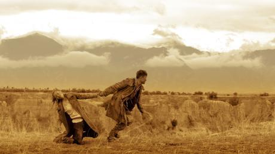Con il suo terzo film, Yang Shupeng (a.k.a. Leon Yang) continua il suo personale tentativo di reinventare il genere cinematografico del western alla cinese con un film elegante, ambientato nella Cina nord-occidentale nel periodo dell’occupazione giapponese.
La storia ruota attorno a un gruppo di banditi audaci, determinati ed estremamente abili, capeggiati dal giovane e carismatico Fang Youwang. I banditi hanno costruito un labirinto sotterraneo che li aiuta a spostarsi in modo imprevedibile, rendendoli inoltre irrintracciabili; e sono conosciuti nella zona per i furti spettacolari compiuti indossando sul volto maschere caricaturali. Gao Dongliang, l’unico membro di un gruppo di resistenza antigiapponese sopravvissuto al fallito tentativo di assassinare il fratello dell’imperatore giapponese, dopo aver assistito per caso ad una delle spettacolari imprese dei banditi, si infiltra nel gruppo per guadagnarne la fiducia e convincerli ad aiutarlo per portare a compimento la sua missione patriottica. Fang ed i suoi sono interessati alla proposta di Gao, ma hanno un piano alternativo: invece di uccidere il principe perché non rapirlo e chiedere un riscatto in oro all’imperatore…? La narrativa del film è complessa e coinvolge molti personaggi, uno più stravagante dell’altro, ma il nocciolo della storia è che un gruppo di banditi si trova a dover decidere tra la sopravvivenza e la possibilità di fare qualcosa di veramente grandioso: cercare di salvare la patria, trasformandosi di conseguenza – senza quasi rendersene conto – da banditi in eroi. Sono molti i film cinesi che affrontano una tematica simile, utilizzando il più delle volte il veicolo ovvio del dramma. Ma questo film riesce a celebrare l’eroismo di questi anti-eroi (il titolo del film in cinese significa appunto “Gente comune”) mantenendo fino all’ultima inquadratura il tono deciso della black comedy. La dinamica tra i vari personaggi e la graduale trasformazione dei banditi in eroi – prima di tutto Fang Youwan, il carismatico capo del gruppo interpretato da Huang Xiaoming – non assume mai toni sentimentali, il carattere sanguigno dei protagonisti rimane tale fino alla fine.
Come ha detto il regista per spiegare il titolo del film, “nonostante vivano ai margini della società, i personaggi del film sono coraggiosi e pronti ad assumersi la responsabilità delle proprie azioni. Gli antichi dicevano che quando una ‘persona comune’ si infuria, il sangue può schizzare fino ad arrivare lontano”. L’ambientazione, i costumi e la fotografia spettacolare del film (in particolare la scena di uno scontro all’interno del nascondiglio sotterraneo dei banditi, girata in un unico piano sequenza di tre minuti che ha richiesto la ricostruzione di un intero sistema di grotte in studio) sembrano quasi sottolineare che la vita – anche quella della “gente comune” – diventa eccezionale quando è vissuta con passione.
-
Long Weekend
26 Apr 00:10 Taweewat WANTHA Thailand 1h 35m 2013 Teatro Nuovo Dopo una breve pausa negli ultimi anni, torna sugli schermi l’horror thailandese con il quarto lungometraggio di Taveewat Wantha, Long Weekend. Grazie all’ottimo lavoro di squadra tra la Wave Pictures (una nuova società di produzione, affiliata del secondo più grande magnate televisivo thailandese), il sottovalutato regista veterano Taveewat, e il narratore di culto Eakasit Thairaat (13 Beloved, Body), questo film inquietante è diventato un grande successo a sorpresa, caratterizzato da una trama contorta, dei timori inquietanti e un’atmosfera di terrore. Un gruppo di cinque studenti universitari organizza in gran segreto un weekend di vacanza senza dire nulla all’amico sfigato Thongsook.
Thongsook, un ragazzo carino, non se la prende e si aggrega al tour senza dirlo agli amici e con aspettative tutte sue.
Non soltanto però la destinazione è un’isola sperduta dove nessun visitatore ha messo piede negli ultimi dieci anni, ma è anche venerdì 13. Gli amici ne ridono pure, quando il pilota della barca racconta loro dell’ultima, sanguinosa visita all’isola. Quando spunta Thongsook gli amici lo deridono bloccandolo in una grotta, dove si dice che alcuni fedeli siano stati inghiottiti da un fantasma affamato.
Nel panico più totale, Thongsook cerca con ogni mezzo di uscire dalla caverna. A peggiorare le cose, mentre cerca una via d’uscita perde il suo amuleto portafortuna. Solo Namcha conosce il significato di quell’amuleto e la ragione per cui Thongsook lo indossa sempre. Ai tempi della loro infanzia, una volta Thongsook chiese a Namcha se sarebbero potuti restare amici anche se Namcha avesse conosciuto il suo segreto e il bambino Namcha annuì. Thongsook allora si tolse la collana e all’improvviso tutto il suo corpo fu scosso da un tremito, e venne posseduto da un mostro che era possibile controllare solo attraverso quell’amuleto. Quindi questo non sarà un venerdì 13 come gli altri… Taveewat Wantha è noto come regista di culto non abbastanza considerato nel suo paese. I suoi film esplorano sempre mondi insoliti, abitati da gruppi di gente strana che affrontano situazioni inaspettate – dagli zombie infettati dalla SARS di SARS War (2004) alle fantasie sessuali di un musicista rock in The Sperm (2007) – fondendo in modo bizzarro il fantasy e la commedia.
Pur essendo il suo primo horror-thriller, Long Weekend è un tour de force di colpi di scena, strani fantasmi e spiritualità sanguinaria. Una ballerina fantasma si contorce e fa turbinare mani e braccia per ballare con voi, e questa non è nemmeno la scena più strana. Le vittime non sanno mai quando appariranno gli spettri, né chi siano gli spettri. E la cosa peggiore è che questi fantasmi sono anche intelligenti, sono in grado di entrare nei vostri sogni per divorarvi! Questa volta Taveewat gioca con il suo pubblico. Non solo i personaggi del film sono ingannati dagli spettri, ma anche gli spettatori vengono attirati in questo gioco del gatto col topo. A tutto ciò contribuisce anche il montaggio rapido e l’eccellente interpretazione del musicista indipendente (e per la prima volta attore) Chinawat Indracusin.
-
-
Friday 26 April 2013
-
GF*BF
26 Apr 09:15 YANG Ya-che Taiwan 1h 46m 2012 Teatro Nuovo Dopo il piacevole ma leggero Orz Boys, con Gf*Bf lo sceneggiatore e regista Yang Ya diventa molto più ambizioso – e si scontra con difficoltà insormontabili. Il suo secondo film all’inizio è avvincente, ma esaurisce in fretta il suo credito quando punta troppo in alto, e impacchetta 25 anni di storia di Taiwan insieme a riflessioni sull’amore e l’amicizia e (soprattutto) su cosa significhi essere gay nel corso degli anni, cercando di far convivere questi temi uno accanto all’altro. Ben interpretato dal terzetto di protagonisti nonostante la debolezza della sceneggiatura, Gf*Bf finisce come se Eternal Summer (Far East Film 2007) si incrociasse con You Are the Apple of My Eye (Far East Film 2012), con l’aggiunta di pretese più rilevanti nella seconda metà.
Il film dà il meglio di sé quando non fa troppi sforzi, il che significa in pratica il primo flashback, ambientato nel 1985, quando i tre ragazzi si divertono da amici (e non solo) al liceo e il paese è ancora, tecnicamente, sotto la legge marziale.
Questa è la parte che più si avvicina a Orz Boys, ed è la più efficace nel catturare la natura fluida delle amicizie adolescenziali attraverso sguardi e occhiate. Peccato però che per Yang, che all’epoca aveva quattordici anni, l’ambientazione a metà degli anni Ottanta sembri significare solo due cose: divertirsi e rimanere rinchiusi. Entrambi questi aspetti costituiscono il nucleo dell’episodio ambientato negli anni Novanta, durante la protesta studentesca per la democrazia, indetta del movimento del Giglio Bianco a Taipei, dove il trio si è trasferito dal Sud dell’isola. È in questa parte, quando si consolida l’attrazione fisica tra due ragazzi e l’omosessualità del terzo, che la superficialità del copione comincia a manifestarsi: i personaggi di Yang si limitano a galleggiare sugli eventi e loro stessi non hanno alcuno spessore. Quando il film arriva al 1997, e i tre ragazzi hanno ormai trent’anni e sono rovinati, il film diventa seriamente irritante, mentre va alla ricerca di un significato emotivo. I dialoghi in almeno una scena (ambientata in una libreria) sono talmente furbeschi da far dimenare sulla sedia. Malgrado Yang non abbia nulla di originale da dire sui personaggi tratteggiati o sui periodi in cui è ambientata la loro maturazione, i tre attori principali riescono comunque a rendere i ruoli che interpretano molto più interessanti di quanto non siano sulla carta. L’anglocinese Rhydian Vaughan riprende, in pratica, il suo personaggio alla Tom Cruise di Monga (Far East Film 2010), anche se con molto più fascino e uno stile più rilassato che contribuisce a dare alla prima metà del film una forma più compiuta. Joseph Chang (Eternal Summer, Prince of Tears) comincia in sordina, ma a poco a poco diventa il cuore del film e pian piano la sua è l’interpretazione da guardare, nei panni di un uomo che ha trascorso metà della sua vita a soffocare l’amore fisico che prova per il suo migliore amico. Tuttavia, la sua interpretazione si perde nel vuoto perché, come per gli altri due attori, il copione gli dà ben poco su cui lavorare, a parte l’abbondanza di sguardi insistenti e un paio di scene della serie è-così-doloroso-essere-gay. Il terzo personaggio, Mei-pao, il maschio che cambia sesso interpretato da Gwei Lun-mei, sembra più un pretesto della sceneggiatura che un personaggio al quale Yang sia davvero interessato, per quanto l’attrice faccia del suo meglio e compensi la mancanza di un vero dialogo usando molto i suoi occhioni. Non viene mai spiegato perché Mei-pao spasimi per l’amico gay ma è pronta ad andare a letto con quello etero.
La fotografia di Jake Pollock ha un aspetto sempre più interessante con il passare degli anni, ed è sempre mobile, ricordando fortemente quella realizzata per Yang Yang. La scenografia d’epoca è più evidente nell’episodio ambientato nel 1985, ma non riveste particolare importanza, al di là di alcuni manufatti.
-
Painted Skin: The resurrection
26 Apr 11:05 Wuershan China 2h 15m 2012 Teatro Nuovo 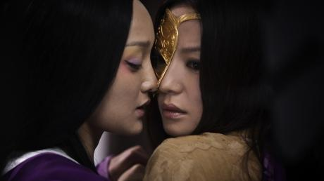Dove gli umani vogliono diventare demoni e viceversa. E dove scambiandosi i ruoli il risultato non cambia. Questo è il concetto alla base di questa storia di demoni gloriosamente al femminile. Seguito ideale di Painted Skin, diretto nel 2008 da Gordon Chan, Andy Chin e Danny Ko, di quest’ultimo il film mantiene la premessa narrativa e riunisce la parte principale del cast, aggiungendo però alcuni personaggi che, pur marginali, creano nella pellicola un’atmosfera completamente diversa. La storia segue le peregrinazioni di un antico spirito-volpe che si libera dalla prigione di ghiaccio nella quale è stato imprigionato per secoli. Il demone – che ha assunto le sembianze di una donna bellissima – per sopravvivere e mantenere la sua bellezza deve nutrirsi del cuore di uomini che prima seduce e poi uccide. Soltanto quando incontrerà una persona che le offra volontariamente il suo cuore l’incantesimo si spezzerà e il demone potrà trasformarsi in un essere umano.
Il Grande Freddo perseguita il demone in fuga e cerca continuamente di ricoprirla nuovamente di ghiaccio. Ma una giovane principessa – dal volto sfigurato anni prima dall’assalto di un orso e in fuga da un matrimonio combinato dalla sua famiglia per salvare il regno assediato – con il calore che emana dal suo cuore la salva. Il demone decide di rimanere con la donna e l’accompagna all’incontro con un guerriero del quale la principessa è perdutamente innamorata. Tuttavia l’uomo – nonostante l’amore che nutre da sempre per la principessa ed il senso di colpa che lo tormenta per non essere riuscito a proteggerla dall’attacco dell’orso – si fa immediatamente conquistare dalla bellezza del demone… La complessa dinamica tra la principessa e il demone è il “cuore” letterale e metaforico del film. La gelosia della principessa nei confronti del demone e l’invidia di quest’ultima – che vuole provare il sentimento d’amore a lei negato dallo stato “glaciale” in cui si trova – si trasformano a poco a poco in complicità e poi in solidarietà femminile, fino al punto in cui donna e demone si scambiano i ruoli e diventano di conseguenza uguali. Mentre la dinamica tra i due personaggi femminili è di rara intensità, e dona alle attrici protagoniste Zhao Wei e Zhou Xun l’opportunità di esprimere al meglio le loro capacità interpretative, il film sottolinea allo stesso tempo l’ottusità degli uomini attraverso personaggi maschili deboli e inconcludenti. Il generale amato dalla principessa mostra una grande fragilità anche quando alla fine si autopunisce – si priva della vista – per la sua cecità sentimentale, che lo aveva reso schiavo della bellezza esteriore. La storia è raccontata con grande maestria stilistica, utilizzando coreografie ed effetti speciali spettacolari e divertenti, e con l’aggiunta di alcuni simpaticissimi personaggi secondari come il demone alato Quer e l’acchiappafantasmi Pang, anch’essi molto umani anche se ancorati nel mondo del soprannaturale. La tradizione romantica delle ghost stories della letteratura cinese classica sembra accompagnarsi in questo film con la rappresentazione di due caratteristiche della società cinese contemporanea: il culto della bellezza fisica e la costante insoddisfazione che alimenta il consumismo imperante. Nessun regista avrebbe potuto rappresentare in modo più incisivo questo connubio se non Wuershan, che prima di debuttare nella regia cinematografica era già diventato il regista pubblicitario più famoso della Cina.
-
Beijing Flickers
26 Apr 14:00 ZHANG Yuan China 1h 36m 2012 Teatro Nuovo 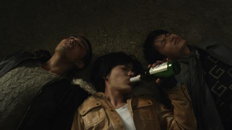Nella Pechino di oggi, in cui il boom economico sembra aver reso la vita di tutti frenetica, dinamica e fiorente, in realtà sono tantissimi i giovani rimasti indietro oppressi, soffocati, frustrati quasi invisibili tra la folla di coloro che si trascinano conducendo una vita tra abusi e ingiustizie. Il giorno che tra gli hutong di Pechino San Bao perde di vista il suo cane Lucky, rischia di finire in prigione per un’insignificante lite da strada, e per aver fatto tardi al lavoro viene licenziato su due piedi. Chengcheng, la sua ex-fidanzata, è incinta dell’uomo per il quale l’ha lasciato cinque mesi prima. Sembra che per San Bao sia il giorno più appropriato per affogare la sua tristezza nell’alcool, dopo aver fallito anche il tentativo di farsi investire da un treno scegliendo il binario sbagliato. Quella sera ormai ubriaco fa a pezzi un bicchiere di vetro dentro la bocca. Lo soccorre Youzi, la cantante che si esibisce con la sua band nel locale. San Bao si risveglia nella stanza di un ospedale con la bocca bendata e dolorante, in compagnia di Wang Ming, il suo migliore amico che lavora in un hotel come responsabile del parcheggio delle auto, e Xiaoshi, poeta e ballerino, ossessionato dalla sua immagine e incline a dare un significato alla sua vita con la chirurgia plastica.
Le spese ospedaliere sono esose per San Bao che decide di auto-dimettersi prima del tempo. Inizia così un lungo periodo di silenzio. Il ritorno a casa che ha visto la sua vita trascorrere momenti decisamente più felici è una tortura. Ma ci pensa la vita stessa a interrompere quella pena proprio il giorno dopo, quando l’anziana padrona di casa lo avverte che quell’area verrà demolita in pochi giorni e che si vedrà costretto a cercare un’altra sistemazione. San Bao torna nel locale dell’incidente per riprendere il suo cellulare da Youzi che lo aveva accompagnato in ospedale. Nello stesso locale gironzolano altri personaggi che parallelamente a San Bao cercano di tirarsi fuori dall’invisibilità della massa: Er Mao, il chitarrista della band che senza scrupoli lascerà la fidanzata Lingzi prendere il posto di Youzi come cantante del gruppo; Tao Hui, la barista del locale che condivide l’appartamento con Youzi, si scoprirà avere un passato misterioso; Su Mo, che condivide l’appartamento con Youzi e Tao Hui, frequenta il suo capoufficio il quale per vigliaccheria la lascia ubriaca alla mercé del suo superiore. San Bao, senza tetto, trasloca prima in casa dell’amico Wang Ming, che vive con la fidanzata Taozi aspirante attrice, e poi in casa di Xiao Shi. Le storie dei protagonisti continuano a intrecciarsi, a confondersi, a complicarsi. Il girovagare per le strade di Pechino di San Bao, senza fissa dimora, riflette l’instabilità e l’incertezza costante dei giovani d’oggi nel vortice di una Pechino cangiante che schiaccia chi non si adegua, poca differenza fa se è chi non sa adeguarsi o chi non può adeguarsi. Le storie di San Bao, di Youzi, di Wang Ming, di Xiaoshi fanno eco alla poesia che Xiao Shi, il poeta in mezzo a loro, non si stanca di recitare. La moderna e ricca Pechino che oggi non manca di sfoggiare glamour, lusso e prosperità rischia di annientare i suoi poeti e una città senza poesia è più povera che mai. I quattro personaggi principali formano un cast di giovani attori che si sono già fatti notare: Duan Bowen (San Bao) che abbiamo conosciuto in Lost, Indulgence di Zhang Yibai (2008) e più di recente nell’ultimo film di Feng Xiaogang, 1942; Sabrina Li Xinyun (You Zi) già nei precedenti film Little Red Flowers (2006), e Dada’s Dance (2008) di Zhang Yuan; Lü Yulai (Wang Min) che abbiamo apprezzato in Peacock (2005) di Gu Changwei, in Courthouse on Horseback (2006) di Liu Jie, e nel più recente The Last Supper (2012) di Lu Chuan.
Beijing Flickers, come dichiara Zhang Yuan, affonda le sue radici e trova ispirazione in uno dei suoi primi film Beijing Bastards (1992). Allora la scena artistica di Pechino godeva delle aspirazioni e del talento di artisti del calibro di Liu Xiaodong, oggi pittore di fama mondiale, di musicisti e compositori come Cui Jian e di Dou Wei, di sceneggiatori come Tang Danian che lavorarono insieme al regista per immortalare la gioventù di Pechino degli anni ‘90. A vent’anni di distanza, Zhang Yuan elabora un progetto più complesso e impegnativo in tre fasi, dal titolo Unspoiled Brats, poi Beijing Flickers. Il materiale raccolto, frutto di un’intensa ricerca arricchita di video-interviste e fotografie-ritratto di centinaia di giovani nati negli anni ‘80, è servito a concettualizzare la mostra fotografica (prima fase), inaugurata presso gli spazi dell’U.C.C.A. – Ullens Center for Contemporary Art a Pechino; la pubblicazione di un libro (seconda fase) dallo stesso soggetto, che si anima nel film (terza fase) con la storia di quattro personaggi principali a rappresentare mode, atteggiamenti e situazioni, che il regista ha individuato lavorando alla realizzazione del film. Il Far East Film Festival che ha presentato i primi due capitoli del progetto di Zhang Yuan nel 2012 con l’esposizione di fotografie, video-interviste e la presentazione del libro, ospita quest’anno il terzo e ultimo capitolo.
-
My Lucky Star
26 Apr 14:15 HO Meng-hua Hong Kong 1h 40m 1963 Visionario 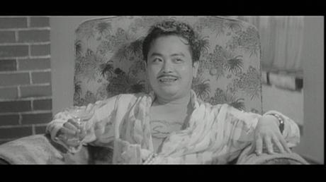Anche se King Hu entrò a far parte dell’industria cinematografica attraverso il reparto scenografie, il suo impegno principale nel cinema prima di dedicarsi alla regia era la recitazione, all’interno dello studio system hongkonghese (principalmente alla Shaw Brothers). Tra metà anni Cinquanta e metà anni Sessanta King Hu recitò in oltre trentasei film e col maturare del suo aspetto fisico, dalla tarda adolescenza ai trent’anni, si modificarono anche i ruoli da lui interpretati. Non era un semplice caratterista ma un vero e proprio coprotagonista che recitò a fianco dei più grandi divi dell’epoca: Linda Lin Dai, Betty Loh Ti, Grace Chang.
King Hu interpretò film drammatici come Golden Phoenix (1956) e The Deformed (1960), nel quale incarnava personaggi con deformità fisiche (nel primo ha la testa piena di croste, nel secondo è gobbo) innamorati di belle donne.
Ma la sua bassa statura e il volto espressivo lo rendevano particolarmente adatto per la commedia (nei film dell’epoca l’uomo basso aveva lo stesso status della donna grassa). Si fece notare in film come Stranger than Fiction (1963), dove è uno dei due protagonisti mascherati da banchieri, o anche in ruoli più defilati, come nella commedia musicale Love Parade (1963), dove interpreta uno dei coinquilini di Peter Chen Ho.
My Lucky Star è un film del 1963, un anno prolifico per King Hu come attore. Si potrebbe argomentare che, all’età di trenta anni, Hu aveva raggiunto una certa stabilità nella sua carriera, incarnando un personaggio imperfetto che diventa apparentemente vittima dei suoi stessi stratagemmi. In questa black comedy King Hu interpreta il proprietario di una fabbrica in fallimento che sfugge al picchetto dei suoi operai, in sciopero per gli stipendi non pagati. La sfortuna personale si aggiunge alla catastrofe negli affari, e quando la moglie sembra essere fuggita con un altro uomo, inizia a pensare al suicidio. Approfittando del suo stato d’animo, una banda di imbroglioni lo assolda per farlo morire al posto di un altro uomo e lo sottopone a una trasformazione fisica che passa dal dimagrimento allo stretching per aumentare di qualche centimetro, gli fa crescere i baffi e gli fa fare un tatuaggio. La depressione psicologica e l’umorismo perverso della deformazione fisica come preludio alla morte e poi la redenzione portano a un discorso molto alla Jerry Lewis in quella che, almeno in superficie, sembra una commedia abbastanza tipica dell’epoca.
Il regista Ho Meng-hua in seguito realizzò alcuni classici del cinema maudit di Hong Kong, tra i quali una rivisitazione di King Kong in Mighty Peking Man e il complesso Oily Maniac, ispirato a Blob – Fluido Mortale nella forma ma non nella morale, sicuramente uno dei pochi film nella storia del cinema con un supereroe liquido. My Lucky Star mette in luce non solo le capacità comiche di King Hu, ma anche un caposaldo dell’autorialità di Ho Meng-hua, ovvero la trasformazione fisica come forma di redenzione, se non di trascendenza.
-
How to use guys with secret tips
26 Apr 15:45 LEE Won-suk South Korea 1h 54m 2013 Teatro Nuovo 
I registi che battono e ribattono sullo stesso soggetto sovente si avvalgono dello stesso attore per incarnarlo. Kurosawa Akira assegnava a Mifune Toshiro il ruolo dell’eroe intenso in tutti i film sull’eroismo maschile, se non tradizionalmente macho. Itami Juzo sceglieva come protagonista la moglie Miyamato Nobuko per la parte della donna tosta che si imbarca con tipi belli e inaffidabili nelle varie commedie satiriche sugli eccessi del Giappone nell’epoca delle bolle speculative.
Similmente Hamada Gaku è diventato l’attore feticcio di Nakamura Yoshihiro, interpretando cinque film con il regista dopo il primo ruolo dell’ingenuo studente del college nella sua pellicola del 2007 The Foreign Duck, the Native Duck and God. Piccolino e con il viso da folletto, Hamada assomiglia più a un attore di The Hobbit che all’eroe del solito film commerciale giapponese.
Ma nell’ultima pellicola del regista, See You Tomorrow, Everyone (Minasan, Sayonara), si rivela anche perfetto, e non soltanto fisicamente, nei panni del “ragazzino” che in un mondo ostile si dimostra più temerario di quanto non sembri all’inizio – il tema ricorrente in molti film di Nakamura. Il suo personaggio è Satoru, che è cresciuto in un danchi, uno dei tanti complessi edilizi degli anni del boom del dopoguerra organizzati in comunità autonome. Si tratta della versione giapponese dei “paradisi dei lavoratori” occidentali, come illustra un vecchio cinegiornale sgranato con immagini di massaie felici che fanno la spesa tra una chiacchiera e l’altra e bambini allegri che imparano e giocano: ci sta tutto, nel danchi!
Ecco perché, quando nel 1981 un dodicenne Satoru (interpretato da un Hamada chiaramente adulto) comunica alla sempre paziente madre (Otsuka Nene) l’intenzione di trascorrere il resto dei propri giorni nel danchi e di non uscirne per andare a scuola, intuiamo in parte perché lei lo accetti, anche se la decisione non viene spiegata in modo esauriente.
Quando i suoi ex compagni di classe si mettono in marcia alla volta della nuova scuola, Satoru resta indietro, ma invece di vegetare davanti alla tv, intraprende un rigoroso regime di studio, allenamento di arti marziali nonché pattugliamento del danchi munito di clipboard per appunti, così da garantire la sicurezza dei vicini, mese dopo mese, anno dopo anno.
Sì, per quanto strambo, Satoru è anche un tipo simpatico, che aiuta un ragazzo effeminato (Nagayama Kento) vittima di bullismo scolastico. Ha anche i normali impulsi sessuali maschili tipici degli adolescenti, come dimostra quando la sbrigativa ragazza della porta accanto e il suo più intimo confidente (Haru) lo invitano a fare bagordi (rigorosamente controllati). A vent’anni trova anche una fidanzata, la dolce e carina Saki (Kurashina Kana), che condivide il suo desiderio di restare vicino a casa e gli procura il lavoro dei suoi sogni come garzone del burbero mastro fornaio (Bengaru) della pasticceria del danchi.
Ma mentre gli anni passano e il numero dei suoi ex compagni di classe scema dall’iniziale 107 (didascalie in sovrimpressione segnano il declino), il già piccolo mondo di Satoru a poco a poco si rimpicciolisce ancora di più. Ma ogni volta che cerca di scendere la lunga rampa di scale che porta al mondo esterno più grande, il panico lo blocca. Finirà per diventare un Robinson Crusoe urbano, abbandonato sulla sua fatiscente isola di cemento?
Tratta da un romanzo di Kubodera Takehiko, la sceneggiatura di Nakamura e Hayashi Tamio trova una risposta a questa domanda, che calza in modo perfetto, anche se non lampante, al personaggio e alla situazione di Satoru. Proprio come nel climax di Fish Story (visto al Far East Film 2009), Nakumura annoda tutti i fili della trama accuratamente imbastita in un finale rivelatore, questa volta in un “paradiso” molto diverso da quello intravisto nel cinegiornale di tanto tempo prima. Anche Satoru (soprattutto Satoru) non è più lo stesso.
-
I do bidoo bidoo
26 Apr 17:50 Chris MARTINEZ Philippines 2h 1m 2012 Teatro Nuovo 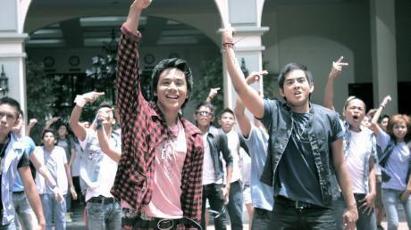Nella tradizione pop delle commedie musicali che riscuotono grande successo di pubblico, come Mamma Mia! e Rock of Ages, arriva I Do Bidoo Bidoo, una celebrazione dell’amore giovanile, con le canzoni di successo dell’Apo Hiking Society.
Prodotto da Tony Gloria, scritto e diretto dal famoso direk Chris Martinez, I Do Bidoo Bidoo è interpretato dai più celebri idoli canori delle Filippine come Gary Valenciano, Zsa Zsa Padilla, Ogie Alcasid, e dalla premiata attrice comica Eugene Domingo, insieme ai nuovi talenti emergenti Sam Concepcion e Tippy Dos Santos.
Rock Polotan (Concepcion) e Tracy Fuentebella (Dos Santos) sono due fidanzatini adolescenti, innamorati e pieni di sogni. Una leggerezza giovanile li porta a diventare precocemente genitori, una situazione che affrontano in modo diretto e abbastanza maturo, progettando di sposarsi. Ben presto però si rendono conto che gli ostacoli maggiori ai loro progetti di matrimonio hanno a che vedere più con i loro genitori che con loro stessi. I genitori di Rock sono una coppia stravagante dalle professioni insolite. Pol Polotan (Ogie Alcasid) è un compositore famoso per un solo pezzo, ridotto ormai a dare lezioni di chitarra ai ragazzini del vicinato. La sua energica moglie (Eugene Domingo) ha il piglio imprenditoriale giusto per occuparsi di catering, anche se la sua clientela è costituita dalle famiglie in lutto alle pompe funebri. Arrabattandosi sempre per risollevarsi dai duri colpi della vita, i Polotans (come qualsiasi famiglia filippina media) riescono a tirare avanti in qualche modo attraverso il loro acuto senso dell’umorismo, la capacità di recupero e l’intraprendenza.
All’altra estremità dello spettro sociale si trova la famiglia di Tracy, i Fuentebella. Il padre di Tracy, Nick Fuentebella (Gary Valenciano), è un impettito proprietario terriero, figlio di un generale in pensione, molto più bravo negli affari che come padre di famiglia. La moglie Elaine (Zsa Zsa Padilla) e la figlia Tracy, alienate dalla sua passività e dalla sua mancanza di ardore, sono praticamente abbandonate a se stesse per quanto riguarda i loro bisogni e i loro problemi.
Inoltre, il fatto che il padre militare di Nick (Jaime Fabregas) sia un conservatore dalla mentalità chiusa, senza concessioni per le fragilità umane, non aiuta di certo.
Quando le famiglie finalmente si incontrano per il pamamanhikan (incontro formale per chiedere la mano della sposa) presso la sfarzosa residenza dei Fuentebella, quello che inizia come un incontro civile tra due famiglie si trasforma a poco a poco in un esilarante testa-a-testa tra ricco e povero, uno scenario che trasforma la casa in un manicomio di proporzioni bizzarre.
La faida familiare che ne deriva costringe i giovani amanti ad affrontare le loro battaglie nel dubbio e nella confusione. Fino a che punto si conoscono e si vogliono bene? I loro genitori alla fine riusciranno ad accettare “l’altra famiglia”? Saranno in grado di dire il loro “Sì” nonostante le differenze di classe? Alla fine vivranno tutti felici e contenti? Sono le solite domande legittime!...
In un film come questo, pieno di canti, risate, balli e sorprese, ulteriore variazione dei Romeo e Giulietta di Shakespeare, l’amore ha, naturalmente, tutte le risposte.
-
Comrade Kim goes flying
26 Apr 20:30 KIM - BONNER DAELEMANS North Korea 1h 21m 2012 Teatro Nuovo Coproduzioni tra Corea del Nord, Belgio e Gran Bretagna sono una cosa rara al giorno d’oggi. All’industria cinematografica nordcoreana, controllata dallo Stato, non capita spesso di affiancarsi a produttori stranieri per realizzare film da proiettare nelle sale di tutto il paese per il pubblico locale. Ma a volte accade: tra gli esempi ricordiamo la coproduzione nordcoreana-giapponese Somi – The Taekwondo Woman (1997) e la coproduzione cinese-nordcoreana The Secret of Rikidozan (2005). Comrade Kim Goes Flying è però un caso unico nel suo genere. Nicholas Bonner, di origini britanniche, vive a Pechino dal 1993 e gestisce la Koryo Group che organizza diversi tipi di scambi culturali con la Corea del Nord. Negli ultimi anni si è associato con il regista Daniel Gordon per girare in Corea del Nord una serie di acclamati documentari, tra cui The Game of Their Lives (2002), A State of Mind (2004), e Crossing the Line (2006), diventati tutti molto famosi sia in Corea del Nord che a livello internazionale.
L’idea per Comrade Kim Goes Flying è stata sviluppata da Bonner e dalla produttrice belga Anja Daelemans nel 2006, ed è stata inizialmente concepita come cortometraggio. Dopo aver parlato del progetto con la produttrice nordcoreana Ryom Mi-hwa, con la quale Bonner aveva collaborato per i suoi documentari, due sceneggiatori nordcoreani hanno iniziato a scrivere la sceneggiatura. Malgrado la storia fosse stata inizialmente rifiutata dagli studi cinematografici statali in quanto “troppo poco realistica”, Ryom alla fine è riuscita a far approvare il film dopo varie riscritture della sceneggiatura dopo aver ricevuto il sostegno dell’affermato regista Kim Gwang-hun. Il film è stato girato con tre registi e due acrobati del Circo di Pyongyang nel ruolo dei protagonisti. La postproduzione è stata fatta in Belgio, e ciò dà al film quell’aspetto patinato che generalmente manca ai normali film nordcoreani.
La storia gira attorno a Kim Yong-mi, una giovane donna delle province che lavora in una miniera di carbone ma sogna di diventare una trapezista. Quando le viene dato l’incarico di lavorare a un progetto immobiliare a Pyongyang, se la svigna al Circo di Pyongyang e riesce a conoscere l’eroina della sua infanzia, la famosa trapezista Ri Su-yon. Ri la incoraggia a sostenere un’audizione per il circo, ma senza alcun previo allenamento, lei fa una brutta figura.
L’arrogante divo del trapezio Pak Jang-phil la prende in giro dicendole che i minatori devono stare sottoterra, non per aria. Ma Yong-mi non è una che si arrende facilmente.
Comrade Kim Goes Flying rappresenta un’esperienza visiva memorabile. Il film contiene uno sguardo dall’interno alla Corea del Nord che certamente non riflette le esperienze reali e quotidiane dei suoi cittadini, ma che nondimeno è affascinante. La protagonista Han Jong-sim, qui alla sua prima esperienza come attrice, ha un carisma positivo che risulta contagioso. Come film, è davvero piacevole, e si differenzia della maggior parte dei film nordcoreani in quanto è incentrato su un’unica protagonista femminile i cui sogni e le cui ambizioni sono essenzialmente personali. Tuttavia, per altri aspetti, gli sceneggiatori nordcoreani hanno infuso al film un sapore distintamente locale.
Mentre si guarda questo film, due sono le difficili domande che affiorano alla mente. La prima è: questo film è “autentico”? Il suo stile non è del tutto nordcoreano e non è del tutto occidentale. Non ho potuto fare a meno di chiedermi se il fascino pacchiano del film sia indirizzato soprattutto a un pubblico nordcoreano oppure occidentale. Ma forse per quest’opera dalla collocazione unica dovremmo prendere per buona l’affermazione di Bonner secondo cui il film era destinato a entrambi, e soprattutto al pubblico nordcoreano comune.
La seconda domanda è: si tratta di propaganda? Se consideriamo il suo contenuto esplicito, la risposta è no. A prima vista, è la storia del trionfo personale di una donna. Ci si potrebbe chiedere se i colori sgargianti e la prospettiva rosea dell’esistenza nordcoreana funzionino come una sorta di propaganda indiretta e subliminale. (Anche se penso che chi si pone questa domanda dovrebbe riconoscere che le società di produzione e quelle pubblicitarie occidentali sono molto più abili in questo tipo di “propaganda subliminale” di quanto lo saranno mai gli studi cinematografici nordcoreani.) Forse Comrade Kim Goes Flying fornisce sostegno morale a un regime dittatoriale e altamente oppressivo? La risposta potrebbe sembrare evasiva, ma credo davvero che il pubblico dovrebbe guardare questo film e decidere da solo.
-
The thieves
26 Apr 22:05 CHOI Dong-hoon South Korea 2h 15m 2012 Teatro Nuovo 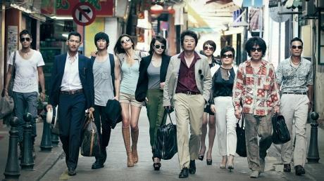Choi Dong-hoon, regista di Woochi, The Big Swindle e Tazza: The High Rollers, torna alla sua specialità, il thriller poliziesco, con un’opera più ambiziosa delle precedenti sia per la tecnologia usata che per i suoi obiettivi, e lo fa affidandosi a un cast ibrido, composto non soltanto dai suoi soliti e affidabili caratteristi coreani ma anche da divi hongkonghesi. Il risultato è un thriller che si è rivelato il maggiore successo coreano di tutti i tempi, con oltre 13 milioni di biglietti venduti, superando di misura il precedente detentore del titolo, The Host di Bong Joon-ho (2006).
Il successo clamoroso di The Thieves farà felici i finanziatori dei film e gli opinionisti; ma critici e giornalisti sembrano divisi sui motivi di questo grande exploit. Gran parte della discussione mediatica si è concentrata sul cosiddetto “ritorno” di Jeon Ji-hyun, alias Gianna Jun, My Sassy Girl in persona, finalmente alle prese con un ruolo sostanzioso nei panni della ladra acrobata Yenicall, esperta di arrampicata. Tuttavia ha destato qualche perplessità tra i recensori il fatto che il pubblico coreano, notoriamente esigente, abbia abboccato in massa nonostante la narrazione poco curata e i tocchi sentimentali. Altri hanno trovato fastidioso un certo anonimo sapore commerciale che sembra aleggiare per tutto il film.
Sono critiche legittime, che però non sminuiscono il piacere di vedere Choi destreggiarsi abilmente, come un direttore d’orchestra, tra il talentuoso cast corale e la trama complicata. In questo film brillante e scorrevole sono molti gli elementi positivi; la qualità artistica è elevatissima, dalla poliedrica fotografia di Choi Young-hwan (Tazza) e del direttore alle luci Kim Seong-gwan (Bestseller), alla vivace scenografia di Lee Ha-joon ( The Housemaid), al montaggio di Shin Min-kyung (Blind). I dialoghi, come in tutti i film di Choi Dong-hoon, sono briosi e arguti, sia pure se con qualche tratto puerile.
Nel film ci sono più di dieci personaggi principali, ciascuno con un proprio complesso antefatto narrativo, e un bel po’ di essi recita perlopiù in lingue straniere; ma nonostante tutto nessun attore o attrice si perde nella mischia. A Kim Yun-seok, che ha sempre tutto sotto controllo, e a Kim Hye-soo, di una bellezza raggiante, sono affidati i ruoli che costituiscono il nucleo emotivo del film, per cui le due attrici ne escono al meglio. Jeon non è mai stata una cattiva attrice, e anche in questo caso se la cava egregiamente, anche se continuo a non capire perché la maggior parte degli uomini coreani impazzisca per lei. Curiosamente, i personaggi impersonati da Simon Yam e da Angelica Lee sembrano volutamente convenzionali, quasi un voler tornare indietro ai B-movie d’azione ai limiti del camp della Hong Kong degli anni Ottanta; di conseguenza, non sono così memorabili come dovrebbero essere (uno dei pochi errori di Choi è stato costringere Yam a pronunciare le sue battute in un improbabile giapponese… dal momento che interpreta un turista nipponico!). Malgrado la storia giramondo, il film non perde mai l’attenzione degli spettatori e nella seconda metà suscita una discreta suspense quando, inevitabilmente, il piano perfettamente congegnato fallisce e ogni singolo membro del cast deve cavarsela coi propri mezzi, col film che culmina in un’emozionante sequenza d’azione in arrampicata arricchita da sorprendenti acrobazie spaccaossa.
Nonostante la baldoria tecnica summenzionata, The Thieves ha il sapore e l’aspetto di un vecchio telefilm come It Takes a Thief (Operazione ladro) o Mission: Impossible (Missione impossibile), adeguatamente ripulito e aggiornato. Anche in questo caso non c’è niente di male, ma a distanza di anni Thieves potrebbe rivelarsi più un intelligente indicatore dei cambiamenti demografici e di gusto del pubblico cinematografico coreano che il tentativo di creare un thriller poliziesco originale e radicato nella storia e nella cultura coreana come Tazza. Forse sarebbe stato meglio se il personaggio di Macao Park (Kim Yun-seok) fosse stato più losco, o al contrario più nobile, di quanto appaia nel film. The Thieves mi è piaciuto molto, ma alla fine ho sentito la mancanza della cattiveria stranamente simpatica di Agwee o dell’Ufficiale Pyeong (Baek Yun-shik) di Tazza.
-
9-9-81
27 Apr 00:30 AAVV Thailand 1h 21m 2012 Teatro Nuovo 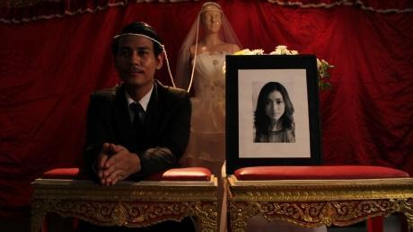Un Rashomon dell’horror. 9-9-81 è l’elegante tentativo di una nuova generazione di filmmaker di colmare il divario tra il mondo sperimentale e l’industria cinematografica. Si tratta di una raccolta di nove cortometraggi realizzati da dodici registi e nove direttori della fotografia che girano intorno al suicidio di una ragazza in un appartamento. Ogni cortometraggio dura meno di nove minuti e riporta un diverso punto di vista: la suicida (una futura sposa), un cameriere, il nuovo inquilino dell’appartamento della ragazza morta, l’amica della sposa, l’amante della sposa, una domestica, la mamma della sposa, lo sposo, il padre della sposa e un ispettore di polizia che indaga sulla morte. È sicuramente il migliore di tutta la marea di film a episodi realizzati nel 2012. La storia inizia in una stanza d’appartamento nella quale una giovane donna sta indossando il suo abito da sposa. È bella, felice e piena di speranze. In silenzio, e molto lentamente, sale fino all’ultimo piano dell’edificio e poi, all’improvviso, si butta giù, piombando davanti a un ragazzo, un cameriere di un chioschetto lì vicino che le consegna spesso a casa il suo cibo preferito, e di nascosto ruba la sua biancheria intima. Gli incubi non lo fanno dormire, così una notte decide di restituire la biancheria rubata. La seconda storia è raccontata attraverso gli occhi del nuovo inquilino, un fumettista male in arnese che si barcamena tra la sua immaginazione professionale, il sogno e la superstizione. Poi è la volta di un’amica della sposa, che rivela la causa del suicidio, prima che si passi al punto di vista dell’amante della sposa. Sembra che lui e la sposa fossero reciprocamente vittima l’uno dell’altra. È poi il turno della storia della domestica, divertente e piena di credenze e superstizioni thailandesi. L’amore dei genitori commuove fino alle lacrime quando la storia è raccontata attraverso gli occhi del padre e della madre della sposa. C’è spazio anche per il romanticismo, nella versione del vicino di casa segretamente innamorato segretamente della sposa, che si presta a interpretare lo sposo in una finta cerimonia nuziale organizzata per placare il fantasma della sposa, che aveva sempre desiderato sposarsi prima del suicidio. Queste sono convinzioni e superstizioni molto thailandesi. Ultima, ma non meno importante, è l’indagine sulla scomparsa del suo innamorato. Alla fine nessuno dei personaggi è innocente o perfetto, e ognuno di loro è vittima dei propri stessi peccati e delle proprie colpe. 9-9-81 è anche carico di energia sperimentale. Tutti gli attori sono esordienti, a parte l’ispettore, e recitano in modo estremamente naturale anche se leggermente inesperto, ma lo stile cinematografico è interessante. Tutti i registi vantano una lunga esperienza nei cortometraggi e, anche se alcune parti del film sono leggermente stiracchiate, molte scene hanno una composizione piacevole. Anche la partitura, ritmica e vagamente blues, si fa notare. In definitiva, il film diventa un’antologia di subconscio, superstizione, invidia, amore paterno e materno, fiducia, amore, vendetta, assassinio e suspense.
-
-
Saturday 27 April 2013
-
Mariposa
27 Apr 11:35 Richard V. SOMES Philippines 1h 59m 2012 Teatro Nuovo Manila si è trovata spesso nel ruolo di personaggio centrale in molti film filippini. In Manila in the Claws of Neon (Maynila sa mga Kuko ng Liwanag, 1975) e Macho Dancer (1988) di Lino Brocka è un luogo di promesse mancate, dove uomini e donne ingenui provenienti dalle province vengono risucchiati in un labirinto di inganni e violenza. In Manila by Night (1980) di Ishmael Bernal, invece, Manila è diventata il rifugio degli eterni depressi, dei disperati, dei delusi. Nei film di Brillante Mendoza ambientati a Manila, come Slingshot (Tirador, 2007), The Execution of P (Kinatay, 2009) e Grandmother (Lola, 2009), la città è caratterizzata da un estremo squallore, mentre la dignità e l’umanità sono virtù in mezzo alla corruzione più irrefrenabile. Il modo in cui Manila è stata descritta sul grande schermo deriva dal fatto che la sua apparenza inganna. La città è un predatore che si nutre del bisogno di salvezza e di tregua.
La Manila descritta da Richard Somes ha un’atmosfera simile, ma la differenza sta nel modo in cui la traveste: nessuna baraccopoli iperrealistica con i suoi miserevoli abitanti, Somes si concentra sui vicoli labirintici che ospitano sconosciuti e anime perdute. La trama di Mariposa in the Cage of the Night (Mariposa sa Hawla ng Gabi) non è diversa dai racconti di molti sognatori di provincia che dai loro villaggi di campagna arrivano in città con la prospettiva di una vita migliore descritta sia al cinema che nella vita reale. Ciò che differenza il cupo racconto di Somes dagli altri è il modo in cui egli plasma la sua protagonista, una ragazza del barrio in cerca della sorella scomparsa, in un’antitesi della vittima stereotipata. Maya, interpretata da Erich Gonzalez, una delle pochissime giovani attrici del cinema mainstream in grado di avventurarsi a sperimentare ruoli più complessi, non è tipo da farsi incantare facilmente dal vuoto fascino della città.
Non è lì per sopravvivere, ma per soddisfare la bruciante curiosità e i sospetti sullo strano destino dell’unica sorella. È così che scopre il volto nascosto della città, che sbarca il lunario tra vanità, avidità e orgoglio, nonostante la miserabile mancanza di risorse. Nonostante l’idea di base sembri a prima vista eccessivamente fantasiosa, Mariposa in the Cage of the Night rimane uno dei film più personali di Somes, e riflette la sua impressione iniziale della grande città. Somes proviene da Bacolod City, in una delle isole a sud della capitale, e si è trasferito a Manila per lavoro. La sua visione della città, per quanto cupa, umida e uggiosa, è disseminata di stranezze che possono anche essere esagerazioni di quello che sta accadendo davvero nel profondo della metropoli, o forse no: salumifici che brulicano di mosche e altri insetti che banchettano su carne fermentata e interiora di maiale sparse un po’ dappertutto. Ristoranti che servono scimmie o altre prelibatezze altrettanto ributtanti. Chirurghi plastici che fanno uso di sigillanti per pneumatici e altri liquidi dubbi e trasformano le donne in mostri, pronte per essere assoldate dagli avventurieri sessuali più intrepidi. Il film di Somes affascina in modo curioso, per le modalità con cui mette in vetrina le depravazioni più vivaci che prosperano nella città. Nel quadro di un mistero sempre più profondo che penetra nella mostruosità di tutto questo, il film delinea la portata e i limiti della nostra umanità, allo stesso modo in cui descrive la sporcizia nascosta e il lerciume della città in cui vive. Con Mariposa in the Cage of the Night Somes aggiunge un’ulteriore sfaccettatura alla personalità sempre più multiforme di Manila. Brocka ha mostrato l’inganno di Manila. Bernal ne ha evidenziato la disperazione. Mendoza ha sottolineato l’ostinata resistenza della città. Somes ha messo in luce la sua palese follia. Il film offre qualcosa di più di un’avvincente discesa verso l’esotico ignoto, si apre anche a una diversa visione di una città che al cinema è stata relegata troppo spesso alla noia della realtà.
-
A Story of Yonosuke
27 Apr 14:15 OKITA Shuichi Japan 2h 40m 2013 Teatro Nuovo 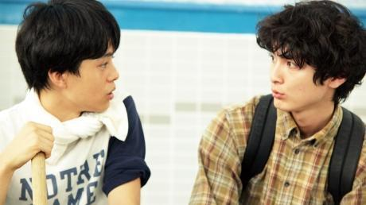Moltissimi registi giapponesi fanno film sui ragazzi socialmente difficili o emarginati: visti tutti gli esempi sullo schermo (e i molti casi della vita reale che li ispirano), sembra che il paese dei samurai sia diventato la terra degli otaku e dei freeter (lavoratori part-time o freelance) che si aggancia all’infanzia emozionale e/o agli scalini più bassi dell’economia.
Nelle tre opere prodotte sino ad oggi, Okita Shuichi si è anche concentrato su figure maschili non tradizionali: il cuoco perfezionista del campo-base antartico di The Chef of South Polar (Nankyoku Ryorinin, 2009), il nervoso regista principiante di The Woodman and the Rain (Kitsutsuki to Ame, 2011) e il provinciale eroe eponimo della sua ultima creazione, A Story of Yonosuke (Yokomichi Yonosuke). Okita può anche divertirsi in modo gentile, pur se comicamente mordace, a loro spese, ma in ultima istanza è maggiormente interessato ai loro punti di forza, che non sono immediatamente ovvi.
Inoltre, nonostante i loro elementi rassicuranti, i film di Okita non sono semplici film commerciali. Al contrario, il regista evita i messaggi ovvii e opta per metodi che possono anche essere indiretti ma non sono mai oscuri.
Tratto dal romanzo di Yoshida Shuichi, A Story of Yonosuke è un ulteriore passo avanti su questa linea e annuncia un importante momento del plot ben prima che esso avvenga. Lungi dal rappresentare uno spoiler, tale rivelazione offre a tutto quello che avviene successivamente (e anche prima) risonanza e intensità. Da una gradevole commedia modello “pesce fuor d’acqua” su un ragazzo di campagna nella grande città emerge un dramma brillantemente confezionato che pone (e vi risponde eloquentemente) una delle domande più importanti di sempre: che cosa significano veramente le nostre vite per chi ci sta intorno? Come può una persona avere un impatto, specialmente se sembra essere un tipo totalmente perso?
Incontriamo per la prima volta il nostro eroe, Yonosuke (Kora Kengo), al primo anno di università a Tokyo nei fantastici anni Ottanta, quando ricchezze al di là di qualunque sogno di cupidigia sembravano non solo un sogno, ma un destino nazionale. Originario di una piccola città della prefettura di Nagasaki, Yonosuke appare il tipico ingenuo che fa ridere, ma il suo mix di gentilezza naturale e incrollabile sicurezza lo rende originale ed inaspettatamente vincente nel gioco sociale.
Assieme a due compagni di classe, un cucciolone di ragazzo (Ikematsu Sosuke) incontrato alla cerimonia di ingresso e una ragazza graziosa e amichevole (Asakura Aki) che lo avvicina in classe, Yonosuke si iscrive al club di samba dell’università e trova velocemente un suo spazio (anche se non il senso del ritmo). Flash-forward che ci porta a vent’anni dopo: i suoi due nuovi amici, che ora sono una coppia sposata, si scambiano ricordi di Yonosuke. Cosa sta succedendo?
Invece di aggiornarci immediatamente, il film ci riporta di nuovo al periodo giovanile del protagonista. Yonosuke aiuta la fredda e impeccabilmente modaiola Kato (Ayano Go), che dapprima lo respinge e poi soccombe alla sua tenacia ai limiti dell’insopportabile, seppure a fin di bene. Viene anche reclutato, nell’hotel dove lavora part-time come fattorino, dalla sexy e sofisticata Chiharu (Ito Ayumi), una sorta di escort d’alto bordo che cerca di schivare un cliente molesto.
Tuttavia, l’incontro più significativo avviene con Shoko (Yoshitaka Yuriko), il vero prototipo della ojosama del periodo del boom, vale a dire la figlia iperprotetta di una sordida famiglia ricca, che è tanto fuori dal mondo nel suo modo dolce e viziato quanto Yonosuke lo è nel suo. All’inizio lei lo tratta come un giochetto divertente ad uso e consumo dei suoi amichetti saputelli, ma poi inizia a guardarlo con occhi diversi quando lui la salva da una disavventura nella piscina di famiglia. L’amore sboccia oltre ogni divario culturale e sociale.
Lavorando sul copione di Maeda Shiro, Okita rende il salto che Yonosuke fa per superare tale divario qualcosa di più di una prodezza comica, senza fare violenza alla sua essenza innocente. Trova anche il perfetto Yonosuke in Kora Kengo, apparso anche nei panni del figlio fannullone del boscaiolo protagonista di The Woodman and the Rain e in quelli di componente della spedizione in The Chef of South Polar. Spesso usato in film di altri registi per ruoli di personaggi difficili e persino violenti, Kora passa facilmente alla commedia per il regista Okita, senza per questo sacrificare l’intensità che è il suo marchio di fabbrica.
Nonostante annaspi sia verbalmente che socialmente, il suo Yonosuke non diventa mai semplicemente qualcuno da guardare dall’alto in basso. Anzi, affascina con quella sua sfacciataggine e con il suo ineccepibile bell’aspetto.
E per questo mondo e i suoi abitanti imperfetti, egli prova anche un godimento autentico che trasmette a questo delizioso film un calore e un’eco che si prolungano anche oltre la fine.
-
Rurouni Kenshin
27 Apr 15:30 OTOMO Keishi Japan 2h 14m 2012 Teatro Nuovo 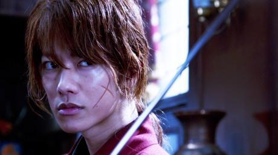Tratto dal famosissimo manga di Watsuki Nobuhiro, il fantaspadaccino brigante di Otomo Keishi delizierà molti fan, anche se qui cerca di attirarsi le simpatie dei non fan con una storia indipendente e ricca di scene di azione assai dinamiche. Ciò significa che anche se le loro conoscenze su questo eroe assassino redento e del suo mondo sono pari a zero, gli spettatori non resteranno stupiti – né annoiati.
Lui è Himura Kenshin (Sato Takeru), soprannominato Hitokiri Battosai, un ex assassino che ha giurato di non uccidere più in seguito alla lunga lotta ingaggiata per porre fine al governo dello Shogunato, nella quale Kenshin si era schierato dalla parte dei vincitori. Quando lo incontriamo nel 1878, dieci anni dopo la fine di quella battaglia, è ancora magro e con un’aria imberbe rispetto al duro ronin (samurai senza padrone) che vaga per le strade, ma non da meno quando si tratta di usare la spada, anche se il lato mortale della sua arma è stato invertito (le spade dei samurai tagliano soltanto da un lato).
Poi Kenshin si imbatte in Kamiya Kaoru (Takei Emi), che ha ereditato dal defunto padre una scuola di kendo a Tokyo e si trova ad affrontare due problemi più grandi di lei. Il primo: uno spadaccino misterioso che si fa chiamare Battosai anche lui e dichiara di appartenere alla scuola del padre, accoltella e ammazza gente a casaccio (queste uccisioni di gente della classe più bassa per mano dei samurai un tempo erano consentite come privilegio del rango, ma non più nella nuova epoca illuminata). Il secondo: un medico donna di nome Megumi (Aoi Yu) si è rifugiata nel dojo dopo essere sfuggita alle grinfie di Takeda Kanryu (Kagawa Teruyuki), un subdolo e tronfio mercante da cui è stata ingaggiata per sviluppare un nuovo tipo di oppio che l’uomo intende utilizzare per accumulare ancora più ricchezze e potere. Quando Kanryu sguinzaglia i suoi tirapiedi contro Megumi, Kaoru, che non è una wonder woman, non riesce a fermarli da sola.
Ovviamente Kenshin interviene per aiutarla, con l’aiuto di Sagara Sanosuke (Aoki Munetaka), un altro combattente che vive ai margini della società, anche se è schierato dalla parte della giustizia. I loro rivali tuttavia sono alquanto temibili: Kanryu chiama in sua difesa centinaia di ronin famelici e l’altro Battosai dispone di poteri che rasentano il soprannaturale.
Benché Runouni Kenshin con i suoi personaggi esuberanti sia divertimento in puro stile manga, si presenta anche come il riflesso del caos di un’epoca in cui i costumi del samurai stavano morendo per lasciare il posto a una nuova età dal carattere moderno e occidentale.
Inoltre le sequenze di azioni, orchestrate dalla coreografia del veterano di formazione hongkonghese Tanigaki Kenji, sono sia imponenti sia abbastanza realistiche, nonostante il materiale originale del film sia destinato ai bambini. Gli attori e gli stuntman sono sottoposti a una dura prova che lascia il segno, anche se sullo schermo non muore nessuno. Kenshin è di certo il pacifista più battagliero dai tempi del Lone Ranger.
-
Ghost Sweepers
27 Apr 17:00 SHIN Jung-won South Korea 1h 59m 2012 Teatro Nuovo 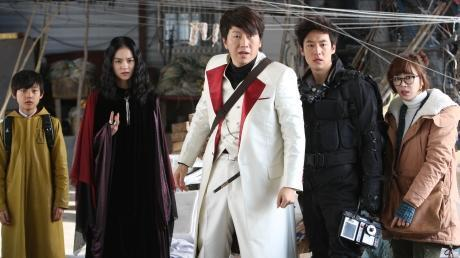In apertura del film ci viene presentato il variegato gruppo dei protagonisti: l’imbecille e arrogante bevitore Seok-hyun (Lee Je-hoon, Architecture 101), un parapsicologo munito di Ph.D; Maestro Park (l’attore di culto Kim Soo-ro, Vampire Cop Ricky), esorcista professionista e maestro esibizionista della truffa; il suo amico ed ex prete buddhista Shim-in (Kwak Do-won, Yellow Sea), che può vedere esseri soprannaturali col suo occhio sinistro; Seung-hee (Kim Yoon-hye), una psichica dal cuore di ghiaccio, estremamente intollerante con i clienti stupidi; Wol-gwang (Yang Kyung-mo, The Haunters), un ragazzino chiaroveggente che parla come Yoda. Il gruppo è stato reclutato da una grossa società per “ripulire” Uljin, una città costiera nota come il Triangolo delle Bermude coreano, dalle forze maligne. Il gruppo, a cui si unisce anche la giornalista d’assalto Chan-young (Kang Ye-won, Haeundae), che ha un personale legame con la città infestata, finisce per scatenare la collera di uno spirito maligno che tiene la città nel suo pugno ectoplasmatico.
Ghost Sweepers è il terzo film del regista Shin Jung-won dopo il grossolano ma stranamente toccante To Catch a Virgin Ghost e l’indescrivibile Chaw. Ciò significa che chi ha visto i primi due film dovrebbe avere un’idea precisa di ciò che lo attende. Un indizio che potrebbe rivelare la natura assolutamente pazzoide di questo film a chi invece non li ha visti è che la premessa di questa storia è stato tratto dall’episodio realmente accaduto (?!) di un gruppo di indovini e medium coreani che venne collettivamente posseduto dagli spiriti maligni mentre passava nei pressi di una località thailandese famosa (si venne a sapere dopo) per il verificarsi di inspiegabili incidenti stradali. La scena dei medium posseduti sul pullman si trova nel primo quarto di film ed è un vero pezzo forte, insieme eccitante, spassosa, ricca di suspense e ridicola oltre ogni immaginazione. In verità, l’intero film è una sorta di incontro tra il cartone animato Ren and Stimpy e la sitcom The Big Bang Theory, passando per David Lynch e Mario Bava, ma senza i tocchi manieratamente artistici che caratterizzano i film “horror” surrealisti e sgargianti influenzati dalla cultura pop, di cui House (1977) di Obayashi Nobuhiko è un valido esempio.
A differenza di Chaw, che rischiava di alienarsi una porzione consistente di spettatori che andavano al cinema pensando di vedere un normale horror, Ghost Sweepers, che si rifà allo schema ben collaudato di Ghostbusters e altri thriller-commedie soprannaturali, è più facile da comprendere – ma non fino in fondo. Al pari dei precedenti film di Shin, la narrazione avanza in modo discontinuo e frammentario, concedendosi tutte le digressioni necessarie a inserire quanti più dettagli ed episodi coloriti sui personaggi. Le frenetiche riprese con la camera a mano e l’altrettanto frenetica colonna sonora impiegata stavolta da Shin, insieme ad altre apparenti concessioni alle tendenze contemporanee di genere, non risultano molto efficaci e in realtà distolgono dalle vere attrattive del film.
Tuttavia, Shin Jung-won ha perso ben poco della sua particolare sensibilità, che viene sfruttata al meglio nella creazione di personaggi decisamente divertenti, stranamente convincenti e in definitiva affascinanti. Kim Soo-ro è il protagonista perfetto, con la sua presenza scenica decisamente carismatica che può risultare esilarante anche quando fa semplicemente il suo quotidiano e goffo allenamento di arti marziali. Shin inoltre disvela alcuni sorprendenti rapporti tra i protagonisti, che in qualunque contesto reale potrebbero apparire decisamente fasulli ma che Lee Je-hoon, Kang Ye-won e altri componenti del cast riescono, non si sa come, a far funzionare. L’attrazione romantica tra i due protagonisti, malgrado la frenesia comica entro la quale si sviluppa, non risulta mai forzata. Altrettanto originale, anche se non proprio profondo, è il ritratto del protagonista malvagio, la “rivelazione” della cui identità è una delle gag migliori di tutto il film.
Certo, trattandosi di un film di Shin Jung-won, il rapporto tra le battute esilaranti e i momenti di perplessità in cui lo spettatore si chiede “Cosa cavolo succede?” in Ghost Sweepers è più o meno di 1 a 2,5. Come nel caso di Chaw, se non sopportate quegli aspetti bizzarri e del tutto incomprensibili di un certo genere di film (Seung-hee che cerca di ammansire un cane feroce con dei bastoncini al formaggio [?] che si porta dietro come munizioni [?!], o una lunga sequenza al rallentatore in cui Seok-hyun si tuffa nell’oceano per salvare la sua spasimante e nella quale lui ha l’aspetto di una rana fulminata che volteggia nell’aria), allora evitate accuratamente questo film. Ma qualora invece avete gusti più avventurosi, allora siete caldamente invitati a vederlo.
Shin Jung-won si è fatto conoscere realizzando video musicali prima di diventare responsabile del comparto visivo e degli effetti speciali per Sex Is Zero (2002) e Romantic Assassins (2003) di Yoon Je-gyun.
Ha avuto grande successo con la sua opera prima da regista, How to Catch a Virgin Ghost (2004), un inconsueto mix di horror e black comedy che, attraverso il passaparola, è riuscito a vendere 2 milioni di biglietti. Il suo secondo film Chaw (2009), su un cinghiale gigante che terrorizza un villaggio di campagna, ha consolidato la sua reputazione come regista capace di mescolare elementi bizzarri, orripilanti ed esilaranti. Ghost Sweepers è uscito in sala nell’ottobre del 2012 e ha venduto all’incirca un milione di biglietti al botteghino.
-
Panel
27 Apr 18:30 King HU Teatro Nuovo 
-
I Have to buy new shoes
27 Apr 20:00 KITAGAWA Eriko Japan 1h 59m 2012 Teatro Nuovo La maggior parte dei film giapponesi ambientati del tutto o in parte all’estero ha l’aspetto di video di promozione turistica, con qualunque sito di rilevanza storica o angolo panoramico debitamente messo mostra. Negli altri casi, la location serve unicamente da sfondo elegante/esotico per una storia esclusivamente giapponese, con gli abitanti del luogo usati solo come comparse o passanti.
Sul piano della storia, I Have to Buy New Shoes (Atarashii Kutsu o Kawanakucha) di Kitagawa Eriko appartiene a questa categoria nippocentrica: Aoi (Nakayama Miho), una solitaria giapponese di mezza età che vive a Parigi, conosce il giovane fotografo Sen (Mukai Osamu), anche lui giapponese, e dopo avergli fatto da guida per la città finisce per avere una breve storia con lui. Con l’eccezione di Amanda Plummer, che fa una breve apparizione nel ruolo di un’eccentrica e anziana vicina di casa, il film inserisce i personaggi francesi come colore locale, non come figure con un loro spessore.
In termini di atmosfera, sensibilità e maestria, tuttavia, il film si colloca veramente a un livello diverso e più elevato. Intanto, Nakayama Miho non è la solita diva giapponese arrivata in Francia per un veloce week-end di riprese, ma vive a Parigi dal 2003 e davanti alla macchina da presa appare perfettamente a suo agio sia con la città che con la lingua. È anche convincente nell’esprimere la nostalgia di Aoi per tutto ciò che è giapponese (soprattutto se d’aspetto attraente come Sen) e, da scrittrice freelance che ha come soggetto i negozi parigini, una conoscenza perfetta della sua città di adozione.
Mukai è altrettanto naturale nei panni di Sen, che è stato trascinato a Parigi dall’egocentrica sorella minore (Kiritani Mirei) e successivamente abbandonato quando lei impulsivamente riparte per riprendere i rapporti con una vecchia fiamma (Ayano Go). Sen è completamente sperduto finché non incontra Aoi in una scena ingegnosamente coreografata, in cui si vedono comiche inciampate, scuse formali e un tacco rotto per Aoi. Lei si offre di indicargli il suo hotel e mentre camminano per le più famose vie di Parigi, Sen inizia ad apprezzare il nuovo ambiente che lo circonda – e anche la donna che si è offerta di fargli da guida.
Malgrado la loro differenza d’età, non c’è nulla di forzato nella tensione sessuale che si sviluppa tra i due. Per quanto consapevole del potere sessuale che la sua giovinezza e il suo aspetto gli conferiscono, Sen non tratta mai Aoi con condiscendenza; al contrario, è sufficientemente saggio per apprezzare la maturità e l’esperienza di lei, e ricorda più il protagonista di una storia d’amore estiva alla francese che un tipico idolo ikemen (ragazzo carino).
In più, la regista Kitagawa, in stretta collaborazione con il produttore Iwai Shunji e l’operatore Kanbe Chigi, getta uno sguardo fresco e impeccabile alle bellezze del luogo, facendo apparire nuova persino la Tour Eiffel. Certo, la sua è una Parigi dal fascino tranquillo che forse non si riesce a percepire quando ci si affretta per andare alla stazione del metrò in una mattina piovosa di febbraio. Ma, come Aoi e Sen, ci si riesce nella giusta stagione, con la luce giusta e, naturalmente, con la persona giusta.
E se siete donne dell’età di Aoi (o ne conoscete una che è o è stata della sua età), non è difficile simpatizzare con il suo interesse per Sen, il suo piacere nel sentirsi corrisposta e i sentimenti dolceamari di nostalgia e rassegnazione quando lui se ne va. Un paio di scarpe nuove può non essere un surrogato dell’amore, ma Aoi se lo farà bastare – e andrà avanti.
-
Saving General Yang
27 Apr 22:10 Ronny YU Hong Kong 1h 42m 2013 Teatro Nuovo 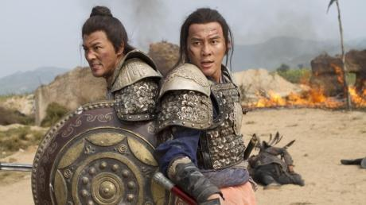La storia, vera, della famiglia Yang della dinastia Song ha avuto vari adattamenti cinematografici e televisivi, dal capolavoro della Shaw Brothers The Eight Diagram Pole Fighter alla miniserie tv degli anni Ottanta The Yang’s Saga, interpretata da Andy Lau, Tony Leung Chiu-wai, Carina Lau e Chow Yun-fat. A questa lista ora si aggiunge Saving General Yang di Ronny Yu. Come i suoi predecessori, Saving General Yang descrive le gesta in battaglia del generale Yang Ye e dei suoi sette figli, alle prese con le pugnalate alle spalle politiche, la strategia sul campo di battaglia e, al disopra di tutto, il destino – che, purtroppo, non gli arride, in quanto la maggior parte dei figli è destinata a morire.
Per alcuni conoscere il destino dei figli di Yang prima di vedere il film potrebbe essere uno spoiler, ma non è propriamente così, considerando il vasto pubblico cinese del film, che ben conosce – grazie a un insieme di nozioni storiche e di produzioni dei media – la storia della famiglia Yang. Inoltre, in effetti Saving General Yang funziona molto meglio se uno vi si accosta già sapendo che non va a finire bene. Essere consapevoli del destino della famiglia inietta nella narrazione una tragica ironia e trasmette profondità a quello che altrimenti potrebbe sembrare semplicemente la lunga storia di un campo di battaglia.
Incaricata di difendere la frontiera settentrionale della dinastia Song, la famiglia Yang è in contrasto con la famiglia Pan, nominalmente sua alleata. Pan Bao, figlio dell’infido Pan Renmei (Leung Ka-yan), rimane ucciso accidentalmente in duello dal settimo figlio di Yang, Qilang (Fu Xinbo) per la mano della Principessa Chai (Ady An), concupita da Pan Bao mentre lei in realtà amava il sesto figlio di Yang, Yansi (Wu Chun). Le ostilità interne vengono messe da parte quando la rivale dinastia Liao invia i guerrieri Khitan a invadere il territorio della dinastia Song; l’Imperatore Song ordina al General Yang Ye (Adam Cheng) di combattere in prima linea, mentre Pan Renmei sarà il comandante supremo.
Il traditore Pan però si ritira, lasciando Yang Ye in trappola sulla Montagna del Lupo, assediato dai Khitan, che sono al comando di Yelu Yuan (Shao Bing), un astuto generale dei Liao che vuole vendicarsi su Yang Ye. Mentre Pan ostenta di non essere in grado di fornire aiuto, i sette figli di Yang accorrono in soccorso del padre, guidati dal primogenito Yanping (Ekin Cheng). La madre, She Saihua (Xu Fan) teme per il destino dei propri figli, per via di una profezia che dice “Sette figli partiranno, sei ritorneranno”. Yanping promette a Saihua che, se uno dei suoi figli deve morire, sarà lui a sacrificarsi prima dei fratelli più giovani. Purtroppo però la famiglia deve avere interpretato male la profezia, perché sarà più di uno dei fratelli Yang a non fare ritorno.
Saving General Yang inizia in modo lineare e convenzionale, ma poi raggiunge un registro diverso quando le forze dei Khitan lanciano un attacco a sorpresa contro gli Yang sulla Montagna del Lupo. Ronny Yu e il regista d’azione Stephen Tung orchestrano una scena davvero emozionante quando i figli di Yang scortano il padre ferito continuando a combattere contro i soldati e schivando massi, creati in computer graphics, che piovono dal cielo. Le rimanenti scene d’azione sono in scala più ridotta, ma l’intensità emotiva aumenta. Sono necessari strategia e sacrificio per esaudire il desiderio di She Saihua, che ha chiesto loro di riportare a casa Yang Ye; quando la situazione si fa più disperata, i fratelli Yang sono costretti a prendere decisioni difficili. Sacrificio dopo sacrificio, tutti fatti in nome dell’onore e della famiglia, il film acquisisce un suo tono riverente.
Prodotto fondamentalmente per essere distribuito in tutta l’Asia, Saving General Yang vanta un cast pan-cinese per il clan Yang. Oltre ai divi di Taiwan e Cina (rispettivamenteWu Chun and Fu Xinbo), del cast fanno parte due attori cinematografici e televisivi cinesi (Yu Bo e Li Chen), un noto attore televisivo hongkonghese (Raymond Lam) e due attori-cantanti iconici di Hong Kong (Adam Cheng e Ekin Cheng). Tutti affrontano al meglio i loro ruoli solidi ed eroici, ma chi spicca su tutti è probabilmente il divo taiwanese Vic Chou, nei panni dell’ardente e silenzioso arciere Yangqing. Xu Fan è l’incarnazione del pathos nei panni di She Saihua, la madre degli Yang, mentre Shao Bing mostra una sobria integrità nel ruolo di Yelu Yuan, l’antagonista dalla sorprendente carica di empatia. Chi fosse interessato a saperne di più sulla saga familiare degli Yang, che continua con la loro rinascita come un clan principalmente di sesso femminile, può passare al classico Le 14 Amazzoni della Shaw Brothers.
-